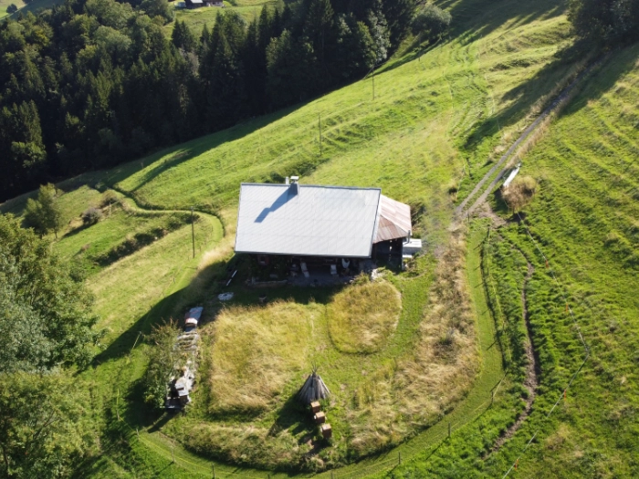
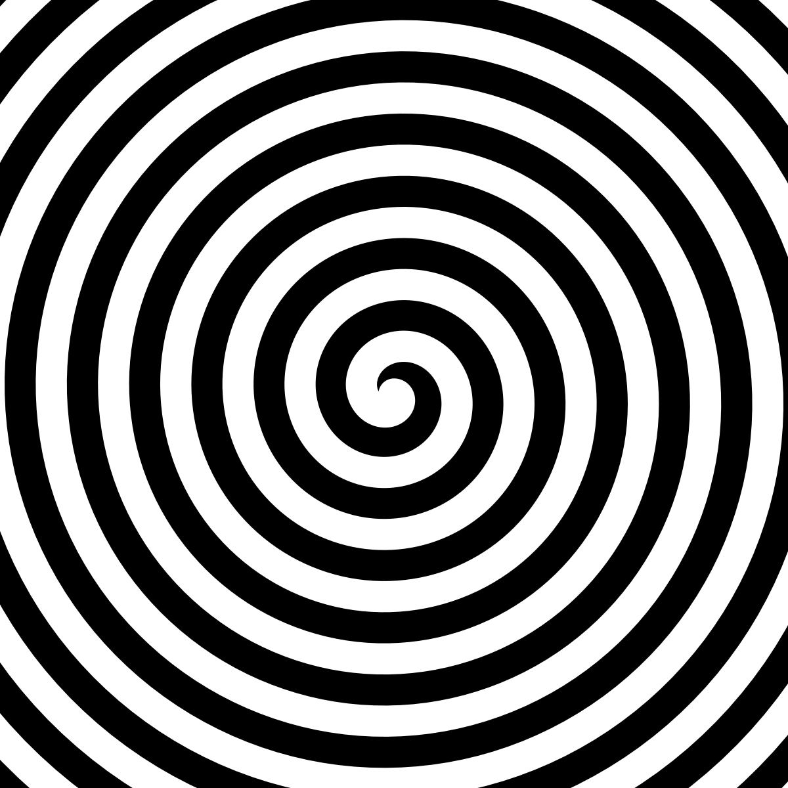
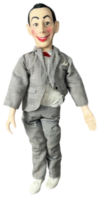
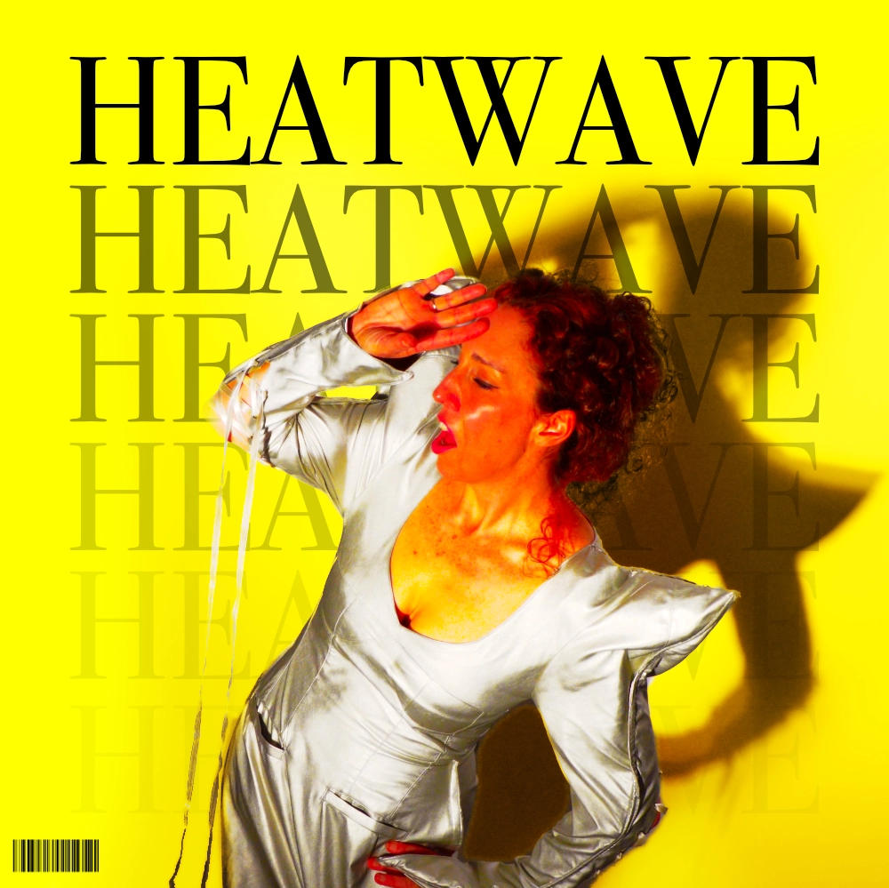
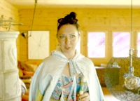

<!DOCTYPE html>
<html lang="fr">
<head>
  <meta charset="UTF-8">
  <meta name="viewport" content="width=device-width, initial-scale=1.0">
  <title>LE REFUGE - Dossier d'Admission</title>
  <style>
    *, *::before, *::after {
      margin: 0; padding: 0; box-sizing: border-box;
      -webkit-user-select: none !important;
      -moz-user-select: none !important;
      -ms-user-select: none !important;
      user-select: none !important;
      -webkit-user-drag: none !important;
    }
    img, video, canvas, svg, a {
      -webkit-user-drag: none !important;
      user-drag: none !important;
    }
    body, html {
      width: 100vw; height: 100vh;
      overflow: hidden; background: #1a1e1b;
      font-family: 'Times New Roman', Times, serif;
      color: #000;
      -webkit-user-select: none !important;
      user-select: none !important;
    }

    #stage { position: relative; width: 100vw; height: 100vh; overflow: hidden; }

    /* =========================================
       NIVEAU 0 : BANDE-ANNONCE PRESTIGE
       ========================================= */
    #trailer-view {
      position: absolute; inset: 0; background: #000;
      display: flex; flex-direction: column; align-items: center; justify-content: center;
      z-index: 100;
    }
    #p-trailer {
      position: absolute; inset: 0; width: 100vw; height: 100vh;
      object-fit: cover; z-index: 1;
    }
    #loading-curtain {
      position: absolute; inset: 0; background: #000; z-index: 20;
      display: flex; align-items: center; justify-content: center;
      transition: opacity 1.2s ease;
    }
    #enter-btn {
      padding: 18px 42px; font-size: 1.5rem;
      font-family: 'Helvetica Neue', Arial, sans-serif;
      font-weight: 700; text-transform: uppercase; letter-spacing: 0.2em;
      background-color: #ff1493; color: white;
      border: none; border-radius: 50px; cursor: pointer;
      opacity: 0; transform: scale(0.92);
      transition: opacity 0.8s ease, transform 0.2s ease, background-color 0.2s ease;
      box-shadow: 0 0 25px rgba(255, 20, 147, 0.6);
    }
    #enter-btn:hover { background-color: #ff69b4; transform: scale(0.98); }
    #p-learn-more {
      position: absolute; bottom: 8vh; left: 50%;
      transform: translateX(-50%); font-size: 1.1rem;
      font-family: 'Helvetica Neue', Arial, sans-serif;
      letter-spacing: 0.3em; text-transform: uppercase;
      color: #fff; cursor: pointer; opacity: 0; pointer-events: none;
      transition: opacity 1.5s ease; z-index: 15;
      text-shadow: 0px 2px 10px rgba(0,0,0,0.9);
      border-bottom: 2px solid #ff1493; padding-bottom: 6px;
    }
    #p-learn-more.visible { opacity: 1; pointer-events: auto; }

    /* =========================================
       CADRE DU NAVIGATEUR 1996
       ========================================= */
    #browser-frame {
      position: relative; z-index: 10;
      width: 100vw; height: 100vh;
      display: flex; flex-direction: column;
      background: #c0c0c0; border: 3px outset #fff;
      transition: transform 1.2s cubic-bezier(0.2, 0.8, 0.2, 1);
    }

    .browser-bar {
      display: flex; gap: 4px; padding: 2px 6px;
      font-family: 'MS Sans Serif', Tahoma, sans-serif; font-size: 11px;
      background: #c0c0c0; border-bottom: 1px solid #808080; user-select: none;
    }
    .menu-item {
      cursor: pointer; padding: 2px 7px; border-radius: 1px;
    }
    .menu-item:hover {
      background: #000080; color: #ffffff;
    }
    .hotel-nav-bar {
      display: flex; justify-content: center; gap: 6px;
      margin: 10px 0 18px 0; padding: 6px 0;
      border-top: 1px solid #c9bea9; border-bottom: 1px solid #c9bea9;
      flex-wrap: wrap;
    }
    .hotel-tab-btn {
      padding: 5px 13px;
      font-family: 'MS Sans Serif', Tahoma, sans-serif;
      font-size: 11px; font-weight: bold;
      color: #2e4333; background: #e8e2d5;
      border: 2px outset #fff; cursor: pointer;
      text-decoration: none; transition: background 0.1s ease;
    }
    .hotel-tab-btn:hover {
      background: #f3ede2;
    }
    .hotel-tab-btn:active, .hotel-tab-btn.active {
      border: 2px inset #fff;
      background: #d5ccbd;
      color: #5c1d24;
    }
    .browser-tools {
      display: flex; align-items: center; gap: 6px; padding: 4px 8px;
      background: #c0c0c0; border-bottom: 2px groove #fff;
    }
    .retro-btn {
      padding: 3px 12px; font-size: 11px;
      font-family: 'MS Sans Serif', Tahoma, sans-serif;
      background: #c0c0c0; border: 2px outset #fff; cursor: pointer;
    }
    .retro-btn:active { border: 2px inset #fff; }
    .url-bar-wrap {
      display: flex; align-items: center; gap: 6px; padding: 4px 8px;
      background: #c0c0c0; border-bottom: 2px groove #fff;
      font-family: 'MS Sans Serif', Tahoma, sans-serif; font-size: 11px;
    }
    .url-input {
      flex-grow: 1; background: #fff; border: 2px inset #808080;
      padding: 2px 8px; font-family: monospace; font-size: 12px; color: #000;
    }

    /* Corps du site 90s */
    #page-viewport {
      flex-grow: 1; overflow-y: auto; overflow-x: hidden;
      background-color: #607265;
      background-image: url('bg-tile.png');
      background-repeat: repeat;
      padding: 30px 20px 80px 20px;
      display: flex; flex-direction: column; align-items: center;
      perspective: 1000px;
    }

    /* Carte du Formulaire avec animation d'apparition douce */
    .mosaic-card {
      max-width: 760px; width: 100%; background: #faf8f2;
      border: 3px double #2e4333; padding: 30px 40px;
      box-shadow: 6px 6px 0px rgba(0,0,0,0.3);
      position: relative;
      animation: cardAppear 0.5s ease-out;
      transition: transform 1.2s ease, opacity 0.8s ease;
    }
    @keyframes cardAppear {
      from { opacity: 0; transform: translateY(12px); }
      to { opacity: 1; transform: translateY(0); }
    }

    /* Typographie 90s */
    .card-header {
      text-align: center; border-bottom: 2px groove #808080;
      padding-bottom: 12px; margin-bottom: 20px;
    }
    .card-header h1 {
      font-size: 2rem; letter-spacing: 0.04em; color: #1e3323; font-style: italic; font-weight: normal;
    }
    .step-badge {
      display: inline-block; background: #233b2a; color: #f0e68c;
      font-family: 'MS Sans Serif', Tahoma, sans-serif; font-size: 11px;
      font-weight: bold; padding: 2px 10px; margin-bottom: 6px; letter-spacing: 0.1em;
    }
    .card-desc {
      font-size: 0.95rem; line-height: 1.5; color: #333; margin-bottom: 20px; font-style: italic;
    }

    /* Champs de Formulaire Rétro */
    .form-group {
      margin-bottom: 18px; text-align: left;
    }
    .form-label {
      display: block; font-weight: bold; font-size: 0.95rem;
      color: #1a2a1e; margin-bottom: 6px; font-family: 'MS Sans Serif', Tahoma, sans-serif;
    }
    .retro-select, .retro-input {
      width: 100%; padding: 6px 8px; font-size: 0.95rem;
      background: #fff; border: 2px inset #808080; font-family: 'Times New Roman', serif;
    }
    .radio-option {
      display: flex; align-items: center; gap: 8px;
      font-size: 0.95rem; margin-bottom: 8px; cursor: pointer;
    }

    /* Bouton d'action formulaire */
    .form-footer {
      text-align: center; margin-top: 25px; padding-top: 15px; border-top: 1px dashed #a0998a;
    }
    .submit-btn {
      padding: 10px 32px; font-family: 'MS Sans Serif', Tahoma, sans-serif; font-weight: bold;
      font-size: 1rem; color: #000; background: #d4d0c8; border: 3px outset #fff; cursor: pointer;
      transition: background 0.2s ease, transform 0.1s ease;
    }
    .submit-btn:hover { background: #e0ded8; }
    .submit-btn:active { border: 3px inset #fff; transform: translateY(1px); }

    /* =========================================
       VRAIES ANIMATIONS FLUIDES (DÉGRADATION)
       ========================================= */
    @keyframes slowFloat1 {
      0% { transform: translateY(0px) rotate(0deg); }
      50% { transform: translateY(-18px) rotate(2deg); }
      100% { transform: translateY(0px) rotate(0deg); }
    }
    @keyframes slowFloat2 {
      0% { transform: translateY(0px) rotate(0deg); }
      50% { transform: translateY(16px) rotate(-2.5deg); }
      100% { transform: translateY(0px) rotate(0deg); }
    }
    @keyframes gentleOrbit {
      from { transform: rotate(0deg) translateX(35px) rotate(0deg); }
      to { transform: rotate(360deg) translateX(35px) rotate(-360deg); }
    }

    .floating-still {
      position: absolute; pointer-events: none;
      box-shadow: 0 10px 30px rgba(0,0,0,0.6);
      border: 3px solid #fff; z-index: 25;
      transition: opacity 1.5s ease;
    }
    .orbiting-trailer {
      position: absolute; pointer-events: none;
      border: 3px solid #ff1493; z-index: 20;
      box-shadow: 0 15px 40px rgba(0,0,0,0.8);
      animation: gentleOrbit 20s linear infinite;
    }

    /* =========================================
       NIVEAU 15+ : LE NÉANT DIGITAL & GLITCH ABYSS
       ========================================= */
    #glitch-abyss {
      position: absolute; inset: 0;
      width: 100vw; height: 100vh;
      overflow: hidden;
      background: #050608;
      color: #fff;
      font-family: 'Courier New', monospace;
      perspective: 800px;
      user-select: none;
      cursor: crosshair;
    }

    #glitch-world {
      position: absolute; inset: 0;
      width: 100%; height: 100%;
      transform-style: preserve-3d;
      will-change: transform, filter;
    }

    .glitch-scanlines {
      position: absolute; inset: 0; pointer-events: none; z-index: 70;
      background: linear-gradient(rgba(18, 16, 16, 0) 50%, rgba(0, 0, 0, 0.45) 50%),
                  linear-gradient(90deg, rgba(255, 0, 0, 0.04), rgba(0, 255, 0, 0.02), rgba(0, 0, 255, 0.04));
      background-size: 100% 4px, 6px 100%;
    }

    .glitch-vignette {
      position: absolute; inset: 0; pointer-events: none; z-index: 72;
      box-shadow: inset 0 0 140px rgba(0,0,0,0.92);
    }

    .glitch-vhs-bar {
      position: absolute; left: 0; width: 100%; height: 14px;
      background: rgba(255, 255, 255, 0.4);
      mix-blend-mode: overlay; pointer-events: none; z-index: 75;
      animation: vhsBarScan 3.5s linear infinite;
    }

    @keyframes vhsBarScan {
      0% { top: -10%; opacity: 0; }
      15% { opacity: 0.95; }
      85% { opacity: 0.7; }
      100% { top: 110%; opacity: 0; }
    }

    /* Médias Déformés (Images & Vidéos) */
    .deformed-media {
      position: absolute; pointer-events: none;
      will-change: transform, filter, clip-path;
      object-fit: cover;
    }

    /* Morceaux Fantômes du Site 1996 ("glitchin through sometimes in a flash") */
    .retro-ghost-frag {
      position: absolute; pointer-events: none; z-index: 55;
      opacity: 0;
      will-change: opacity, transform, filter;
      box-shadow: 4px 4px 0 rgba(0,0,0,0.85);
      font-family: 'Times New Roman', Times, serif;
    }

    .retro-ghost-frag.flash-active {
      opacity: 1 !important;
      filter: invert(1) drop-shadow(0 0 15px #00ffff) !important;
    }

    /* Strobe flash pour fragments 90s */
    @keyframes ghostStrobe {
      0%, 93%, 100% { opacity: 0; transform: scale(0.96) skew(0deg); }
      94% { opacity: 0.95; transform: scale(1.05) skewX(9deg); filter: invert(0.9) drop-shadow(0 0 10px #ff0055); }
      96% { opacity: 0.85; transform: scale(1) skewY(-5deg); filter: none; }
      98% { opacity: 0.9; transform: scale(1.02) skewX(-4deg); filter: contrast(250%); }
    }

    /* Jitter rapide pour éléments individuels */
    @keyframes quickJitter {
      0% { transform: translate(0, 0); }
      25% { transform: translate(-4px, 3px); }
      50% { transform: translate(5px, -2px); }
      75% { transform: translate(-2px, -4px); }
      100% { transform: translate(0, 0); }
    }

    /* Indicateur de tournage & clap cinéma (organique, respecte le 4ème mur) */
    .film-clap-indicator {
      position: absolute; bottom: 18px; left: 22px; pointer-events: none; z-index: 85;
      font-family: 'Courier New', monospace; font-size: 11px; font-weight: bold;
      color: rgba(255, 255, 255, 0.6); letter-spacing: 0.18em; text-transform: uppercase;
      background: rgba(0, 0, 0, 0.6); padding: 6px 12px; border-left: 2px solid #ff0055;
    }

    /* Lamelles de script découpées / broyées */
    .script-shred {
      position: absolute; pointer-events: none; z-index: 52;
      font-family: 'Courier New', monospace; font-size: 12px; font-weight: bold;
      color: #1a1a1a; background: #faf0d8; padding: 4px 10px;
      box-shadow: 2px 2px 8px rgba(0, 0, 0, 0.6); border: 1px dashed #7a5c3a;
      white-space: nowrap; will-change: transform, opacity;
      opacity: 0.85;
    }

    /* Éclats de paillettes (exécution de Gaspard à la perche) */
    .glitter-particle {
      position: absolute; pointer-events: none; z-index: 65;
      width: 4px; height: 4px; border-radius: 50%;
      background: #ff00ff; box-shadow: 0 0 10px #00ffff, 0 0 20px #ff0055;
      animation: glitterTwinkle 1.2s infinite ease-in-out;
    }

    @keyframes glitterTwinkle {
      0%, 100% { opacity: 0.2; transform: scale(0.6); }
      50% { opacity: 1; transform: scale(1.5); }
    }

    /* Flash fond vert (coupe budgétaire des producteurs) */
    .green-screen-flash {
      position: absolute; inset: 0; pointer-events: none; z-index: 62;
      background: #00ff00; mix-blend-mode: color-dodge;
      opacity: 0; will-change: opacity;
    }

    /* Découpage ciseaux (obsession d'Adrien) */
    .scissors-cut {
      border: 2px dashed #ff0055 !important;
      position: relative;
    }

    @keyframes buttonTwitch {
      0%, 100% { transform: translate(0, 0) skew(0deg); }
      20% { transform: translate(-2px, 2px) skew(-2deg); }
      40% { transform: translate(3px, -1px) skew(2.5deg); }
      60% { transform: translate(-1px, -2px) skew(-1.5deg); }
      80% { transform: translate(2px, 1px) skew(1deg); }
    }

    /* =========================================
       TEXTES ANGOISSANTS & GLITCH PROGRESSIF (NIVEAUX 2 À 15+)
       ========================================= */
    .worry-floating-text {
      position: absolute; pointer-events: none; z-index: 60;
      font-family: 'Courier New', monospace; font-weight: 900;
      letter-spacing: 0.18em; text-transform: uppercase;
      text-shadow: -2px 0 #ff0055, 2px 0 #00ffff;
      opacity: 0;
      will-change: opacity, transform;
      background: rgba(0, 0, 0, 0.7);
      padding: 3px 8px; border-left: 2px solid #ff0055;
    }

    .worry-floating-text.active {
      opacity: 1 !important;
      filter: invert(1) drop-shadow(0 0 10px #ff0055) !important;
    }

    @keyframes worryFlash {
      0%, 86%, 100% { opacity: 0; transform: scale(0.96) skew(0deg); }
      87% { opacity: 0.95; transform: scale(1.05) skewX(8deg); filter: invert(0.9) drop-shadow(0 0 10px #ff0055); }
      91% { opacity: 0.85; transform: scale(1) skewY(-5deg); filter: none; }
      95% { opacity: 0; }
    }

    @keyframes terrorStrobe {
      0%, 100% { opacity: 0; }
      50% { opacity: 1; transform: scale(1.06) skewX(-4deg); }
    }

    .progressive-video-wrap {
      position: absolute; pointer-events: none;
      border: 2px solid #ff1493; z-index: 20;
      box-shadow: 0 0 25px rgba(255, 20, 147, 0.7);
      transition: all 1s ease;
      overflow: hidden;
      will-change: transform, filter, clip-path;
    }

    .progressive-video-wrap video {
      width: 100%; height: 100%; object-fit: cover;
    }

    .progressive-still {
      position: absolute; pointer-events: none;
      box-shadow: 0 10px 30px rgba(0,0,0,0.7);
      border: 2px solid #fff; z-index: 22;
      transition: opacity 1s ease;
      will-change: transform, filter, clip-path;
    }

    .crt-tear-bar {
      position: absolute; left: 0; width: 100%; height: 5px;
      background: rgba(255, 0, 85, 0.65);
      mix-blend-mode: overlay; pointer-events: none; z-index: 68;
      animation: vhsBarScan 2.2s linear infinite;
    }

    /* Animation de tremblement de carte progressive */
    @keyframes cardUnease {
      0%, 100% { transform: translateY(0px) rotate(0deg); }
      50% { transform: translateY(-3px) rotate(0.4deg); }
    }

    @keyframes cardRot {
      0%, 100% { transform: translateY(0px) rotate(-1.5deg) skewX(1deg); }
      50% { transform: translateY(5px) rotate(1.2deg) skewX(-1.5deg); }
    }

    /* Motifs précurseurs narratifs (Crescendo vers les Easter Eggs) */
    .narrative-crescendo-hint {
      position: absolute; top: 22px; left: 50%; transform: translateX(-50%);
      font-family: 'Courier New', monospace; font-size: 11px; font-weight: bold;
      letter-spacing: 0.22em; text-transform: uppercase;
      padding: 6px 16px; border-radius: 4px; pointer-events: none; z-index: 86;
      animation: hintBreathe 3s ease-in-out infinite;
      text-align: center; white-space: nowrap;
    }

    .hint-aviation {
      background: rgba(185, 28, 28, 0.5); border: 1px solid #ef4444; color: #fca5a5;
    }
    .hint-radio {
      background: rgba(30, 58, 138, 0.5); border: 1px solid #3b82f6; color: #93c5fd;
    }
    .hint-moss {
      background: rgba(13, 148, 136, 0.5); border: 1px solid #14b8a6; color: #99f6e4;
    }
    .hint-rot {
      background: rgba(120, 53, 15, 0.5); border: 1px solid #f59e0b; color: #fde68a;
    }

    @keyframes hintBreathe {
      0%, 100% { opacity: 0.35; }
      50% { opacity: 0.95; }
    }

    /* Styles pour les 4 Archétypes Compositionnels */
    .archetype-monolith-card {
      position: absolute; top: 50%; left: 50%;
      transform: translate(-50%, -50%);
      width: min(88vw, 560px);
      max-height: 70vh;
      border: 2px solid rgba(255, 255, 255, 0.25);
      box-shadow: 0 0 60px rgba(0, 0, 0, 0.95);
      display: flex; flex-direction: column;
      align-items: center; justify-content: center;
      overflow: hidden; pointer-events: none; z-index: 40;
    }

    .archetype-negative-mode {
      filter: invert(0.92) contrast(170%) hue-rotate(180deg) !important;
    }

    .propeller-vibe {
      animation: propVibe 0.12s steps(2) infinite !important;
    }

    @keyframes propVibe {
      0% { transform: translate(0, 0); }
      50% { transform: translate(-2px, 1px); }
      100% { transform: translate(1px, -2px); }
    }

    /* Styles pour la Phase 3 : Les 4 Nouveaux Archétypes Ultra-Agressifs */
    .archetype-strobe-razor {
      animation: strobeGlitch 0.09s steps(1) infinite !important;
    }
    @keyframes strobeGlitch {
      0% { background: #000; filter: contrast(250%); }
      33% { background: #1a0003; filter: invert(0.85) hue-rotate(320deg); }
      66% { background: #020b08; filter: contrast(300%) saturate(200%); }
      100% { background: #000; filter: none; }
    }
    .razor-slice {
      position: absolute; width: 100vw; overflow: hidden;
      pointer-events: none; mix-blend-mode: screen;
      border-top: 1px solid rgba(255,0,60,0.7);
      border-bottom: 1px solid rgba(0,255,180,0.7);
    }

    .archetype-typo-asphyxia {
      overflow: hidden; background: #020202 !important;
    }
    .asphyxia-giant-word {
      position: absolute;
      font-family: 'Impact', 'Arial Black', sans-serif;
      font-weight: 900; text-transform: uppercase;
      line-height: 0.82; letter-spacing: -0.05em;
      mix-blend-mode: difference;
      color: #fff; pointer-events: none;
      user-select: none;
      animation: typoCrush 0.35s ease-in-out infinite alternate;
    }
    @keyframes typoCrush {
      0% { transform: scale(1) skewX(-4deg); }
      100% { transform: scale(1.04, 0.96) skewX(6deg); }
    }

    .archetype-chromatic-bleed {
      filter: contrast(350%) saturate(350%) !important;
      animation: chromaticShake 0.1s steps(2) infinite !important;
    }
    @keyframes chromaticShake {
      0% { text-shadow: -8px 0 #ff0055, 8px 0 #00ffff; transform: translate(2px, -2px); }
      50% { text-shadow: 8px 0 #ff0055, -8px 0 #00ffff; transform: translate(-3px, 2px); }
      100% { text-shadow: -5px -2px #ff0055, 5px 2px #00ffff; transform: translate(0, 0); }
    }

    .archetype-terminal-panic {
      background: #020a04 !important;
      font-family: 'Courier New', Courier, monospace;
    }
    .panic-code-rain {
      position: absolute; font-size: 11px; line-height: 1.25;
      color: #00ff66; opacity: 0.45; pointer-events: none;
      white-space: pre; overflow: hidden; z-index: 15;
      text-shadow: 0 0 5px #00ff66;
    }

    /* =========================================
       PHASE 4 : L'ORDINATEUR TYPE HAL 9000 & OEIL ROUGE (PROFONDEURS 68 À 82)
       ========================================= */
    #hal-stage {
      position: absolute; inset: 0; width: 100vw; height: 100vh;
      overflow: hidden; background: #000000;
      display: flex; flex-direction: column;
      align-items: center; justify-content: center;
      cursor: pointer; user-select: none;
      padding: 24px;
    }

    /* Le boîtier de l'œil HAL 9000 */
    .hal-eye-unit {
      position: relative;
      width: clamp(170px, 22vw, 250px);
      height: clamp(170px, 22vw, 250px);
      border-radius: 50%;
      background: radial-gradient(circle at 50% 50%, #16161a 0%, #08080a 65%, #000000 100%);
      box-shadow: 
        inset 0 0 15px rgba(0, 0, 0, 0.95),
        0 0 0 3px #2d2d35,
        0 0 0 6px #121216,
        0 0 0 9px #444450,
        0 0 30px rgba(0, 0, 0, 0.95);
      display: flex; align-items: center; justify-content: center;
      margin-bottom: clamp(32px, 7vh, 56px);
      transition: filter 0.8s ease, transform 0.8s ease;
    }

    /* Anneau brossé interne */
    .hal-inner-bezel {
      width: 82%; height: 82%; border-radius: 50%;
      background: radial-gradient(circle at 45% 45%, #25252c 0%, #101014 75%, #000000 100%);
      box-shadow: inset 0 0 12px #000, 0 0 0 2px #383844;
      display: flex; align-items: center; justify-content: center;
      position: relative;
    }

    /* La lentille rougeoyante de HAL */
    .hal-lens {
      width: 68%; height: 68%; border-radius: 50%;
      position: relative;
      background: radial-gradient(circle at 48% 48%, 
        #ff9999 0%, 
        #ff0033 28%, 
        #b3001e 55%, 
        #4d000a 82%, 
        #150003 100%);
      transition: box-shadow 0.8s ease, filter 0.8s ease, opacity 0.8s ease;
    }

    /* Reflet de pupille / point incandescent central */
    .hal-pupil-spark {
      position: absolute; top: 50%; left: 50%;
      transform: translate(-50%, -50%);
      width: 14%; height: 14%; border-radius: 50%;
      background: radial-gradient(circle, #ffffff 30%, #fff7a0 70%, #ff3300 100%);
      box-shadow: 0 0 12px #ffffff, 0 0 24px #ff3300;
      transition: opacity 0.8s ease, transform 0.8s ease;
    }

    /* Halo atmosphérique projeté par la lentille */
    .hal-halo-glow {
      position: absolute; inset: -40px; border-radius: 50%;
      pointer-events: none;
      transition: opacity 0.8s ease, box-shadow 0.8s ease;
    }

    /* Conteneur de parole cinématique HAL */
    .hal-speech-container {
      max-width: min(88vw, 760px);
      text-align: center;
      padding: 0 20px;
      position: relative; z-index: 10;
    }

    .hal-speech-text {
      font-family: 'Helvetica Neue', Arial, sans-serif;
      font-size: clamp(1.2rem, 2.4vw, 1.75rem);
      font-weight: 300;
      line-height: 1.55;
      letter-spacing: 0.09em;
      color: #eaeaea;
      text-shadow: 0 0 15px rgba(255, 255, 255, 0.2);
      transition: opacity 0.8s ease, color 0.8s ease;
    }

    .hal-subtle-hint {
      margin-top: 36px;
      font-family: 'Courier New', monospace;
      font-size: 11px;
      letter-spacing: 0.22em;
      text-transform: uppercase;
      color: rgba(255, 255, 255, 0.22);
      border-bottom: 1px dotted rgba(255, 255, 255, 0.18);
      padding-bottom: 3px;
      display: inline-block;
      transition: color 0.3s ease;
    }
    .hal-subtle-hint:hover {
      color: rgba(255, 255, 255, 0.65);
    }

    @keyframes cardAgony {
      0%, 100% { transform: translate(0, 0) rotate(-5deg) skewX(4deg); }
      25% { transform: translate(-6px, 3px) rotate(-3deg) skewX(-3deg); }
      75% { transform: translate(5px, -4px) rotate(-7deg) skewX(6deg); }
    }
  
    /* =========================================
       NIVEAU 32 : MINIJEU FLAPPY PLANE (FLYER CRASH 1943)
       ========================================= */
    #plane-game-stage {
      position: absolute; inset: 0;
      width: 100vw; height: 100vh;
      overflow: hidden;
      background: #00c5ff;
      display: flex; flex-direction: column;
      align-items: center; justify-content: space-between;
      padding: 14px 24px;
      font-family: 'Helvetica Neue', Arial, sans-serif;
      color: #000;
      user-select: none;
    }

    /* Giant White Mountain Chevron slicing through cyan sky */
    .flyer-bg-chevron {
      position: absolute; inset: 0; pointer-events: none; z-index: 1;
      background:
        linear-gradient(135deg, transparent 48%, #ffffff 48.2%, #ffffff 51.8%, transparent 52%),
        linear-gradient(225deg, transparent 48%, #ffffff 48.2%, #ffffff 51.8%, transparent 52%);
      opacity: 0.95;
    }

    /* Flyer Header */
    .flyer-header {
      position: relative; z-index: 10;
      width: min(95vw, 880px);
      display: flex; justify-content: space-between; align-items: flex-start;
      margin-top: 2px;
    }

    .flyer-title-box {
      display: flex; flex-direction: column;
      line-height: 0.95;
    }

    .flyer-title-sub {
      font-family: 'Times New Roman', serif;
      font-style: italic;
      font-size: 2.2rem;
      color: #00a2d8;
      letter-spacing: 0.02em;
      transform: skewX(-12deg);
      text-shadow: 1px 1px 0 #fff;
    }

    .flyer-title-main {
      font-family: 'Times New Roman', serif;
      font-style: italic;
      font-weight: 900;
      font-size: 3.2rem;
      color: #000000;
      letter-spacing: 0.04em;
      text-transform: uppercase;
      transform: skewX(-8deg);
      margin-top: -6px;
      text-shadow: 2px 2px 0 rgba(255,255,255,0.8);
    }

    .swiss-badge {
      display: flex; align-items: center; gap: 10px;
      background: rgba(255, 255, 255, 0.94);
      padding: 6px 14px; border-radius: 4px;
      border: 1px solid rgba(0, 0, 0, 0.15);
      box-shadow: 0 4px 15px rgba(0,0,0,0.12);
    }

    .swiss-flag {
      position: relative;
      width: 32px; height: 32px;
      background: #e2001a;
      display: flex; align-items: center; justify-content: center;
      border-radius: 2px;
      box-shadow: 0 2px 6px rgba(226, 0, 26, 0.4);
    }

    .swiss-cross-h {
      position: absolute;
      width: 20px; height: 6px;
      background: #ffffff;
    }

    .swiss-cross-v {
      position: absolute;
      width: 6px; height: 20px;
      background: #ffffff;
    }

    .swiss-text {
      font-family: 'Helvetica Neue', Arial, sans-serif;
      font-size: 0.75rem;
      font-weight: 600;
      line-height: 1.25;
      color: #000;
    }

    .swiss-text span {
      font-size: 0.65rem;
      font-weight: normal;
      color: #555;
      letter-spacing: 0.1em;
    }

    /* Game Cabinet / Canvas Box */
    #game-cabinet {
      position: relative; z-index: 10;
      width: min(95vw, 860px);
      height: 480px;
      max-height: 56vh;
      background: #00c5ff;
      border: 4px solid #111827;
      border-radius: 12px;
      overflow: hidden;
      box-shadow: 0 16px 50px rgba(0, 0, 0, 0.45), 0 0 0 2px rgba(255, 255, 255, 0.4);
      display: flex; flex-direction: column;
    }

    .game-hud {
      display: flex; align-items: center; justify-content: space-between;
      padding: 8px 16px;
      background: rgba(15, 23, 42, 0.85);
      backdrop-filter: blur(8px);
      color: #fff;
      font-family: 'MS Sans Serif', Tahoma, monospace;
      font-size: 0.8rem;
      font-weight: bold;
      border-bottom: 2px solid rgba(255, 255, 255, 0.15);
      z-index: 5;
    }

    .hud-item {
      display: flex; align-items: center; gap: 6px;
    }

    .hud-label { color: #94a3b8; font-size: 0.72rem; letter-spacing: 0.08em; }
    .hud-val { color: #f59e0b; font-family: monospace; font-size: 0.88rem; }

    .hud-progress-wrap {
      display: flex; align-items: center; gap: 8px;
      flex: 1; max-width: 320px; margin: 0 16px;
    }

    .hud-progress-bar {
      flex: 1; height: 8px; background: rgba(255, 255, 255, 0.15);
      border-radius: 4px; overflow: hidden;
      border: 1px solid rgba(255, 255, 255, 0.2);
    }

    #hud-progress-fill {
      width: 0%; height: 100%;
      background: linear-gradient(90deg, #ec4899, #f59e0b, #10b981);
      transition: width 0.15s linear;
    }

    .hud-progress-icon { font-size: 1.1rem; }

    #flappy-canvas {
      width: 100%; height: 100%;
      display: block; cursor: pointer;
      background: transparent;
    }

    /* Game Modals (Start, Crash, Victory) */
    .game-modal {
      position: absolute; inset: 0;
      background: rgba(0, 0, 0, 0.65);
      backdrop-filter: blur(6px);
      display: flex; align-items: center; justify-content: center;
      z-index: 20; opacity: 0; pointer-events: none;
      transition: opacity 0.25s ease;
    }

    .game-modal.visible {
      opacity: 1; pointer-events: auto;
    }

    .modal-card {
      width: min(90%, 480px);
      background: #faf8f2;
      border: 3px double #2e4333;
      border-radius: 8px;
      padding: 22px 26px;
      box-shadow: 0 20px 50px rgba(0, 0, 0, 0.6), 5px 5px 0 #1e3323;
      text-align: center;
      display: flex; flex-direction: column; align-items: center; gap: 10px;
    }

    .modal-badge {
      font-family: 'MS Sans Serif', Tahoma, sans-serif;
      font-size: 0.72rem; font-weight: bold;
      letter-spacing: 0.14em; text-transform: uppercase;
      padding: 3px 12px; border-radius: 999px;
      background: #e8e2d5; border: 1px solid #b8aa92;
      color: #3b3328;
    }

    .modal-badge.badge-red {
      background: #fee2e2; border-color: #ef4444; color: #b91c1c;
    }

    .modal-badge.badge-green {
      background: #dcfce7; border-color: #22c55e; color: #15803d;
    }

    .modal-card h2 {
      font-family: 'Times New Roman', serif;
      font-style: italic; font-size: 1.6rem; color: #1a1e1b;
      margin: 2px 0;
    }

    .modal-card p {
      font-family: 'Helvetica Neue', Arial, sans-serif;
      font-size: 0.86rem; line-height: 1.45; color: #4b5563;
    }

    .modal-keys {
      display: flex; align-items: center; gap: 6px;
      font-size: 0.8rem; color: #6b7280; margin: 2px 0;
    }

    .key-pill {
      background: #ffffff; border: 2px outset #cbd5e1;
      padding: 3px 8px; font-family: monospace; font-size: 0.75rem;
      font-weight: bold; color: #000; border-radius: 3px;
    }

    .btn-game-primary {
      padding: 9px 22px;
      font-family: 'MS Sans Serif', Tahoma, sans-serif;
      font-size: 0.92rem; font-weight: bold;
      background: linear-gradient(135deg, #e32613, #b81c0c);
      color: #ffffff; border: 2px outset #fff; border-radius: 4px;
      cursor: pointer; box-shadow: 0 4px 15px rgba(227, 38, 19, 0.4);
      transition: all 0.15s ease;
    }

    .btn-game-primary:hover {
      background: linear-gradient(135deg, #f03622, #c72413);
      transform: translateY(-1px);
    }

    .btn-game-primary:active {
      border: 2px inset #fff;
      transform: translateY(1px);
    }

    .btn-game-secondary {
      padding: 8px 16px;
      font-family: 'MS Sans Serif', Tahoma, sans-serif;
      font-size: 0.82rem; font-weight: bold;
      background: #e5e7eb; color: #374151;
      border: 2px outset #fff; border-radius: 4px;
      cursor: pointer; transition: all 0.15s ease;
    }

    .btn-game-secondary:hover {
      background: #f3f4f6; color: #111827;
    }

    .modal-actions {
      display: flex; gap: 10px; flex-wrap: wrap; justify-content: center;
      margin-top: 4px;
    }

    .stamp-box {
      font-family: 'Times New Roman', serif;
      font-size: 1.05rem; font-weight: bold; letter-spacing: 0.18em;
      text-transform: uppercase; color: #b91c1c;
      border: 3px double #b91c1c; padding: 4px 18px;
      transform: rotate(-3deg); margin: 4px 0;
    }

    .flyer-quote {
      font-family: 'Times New Roman', serif;
      font-style: italic; font-size: 0.78rem; color: #6b7280;
    }

    .countdown-hint {
      font-size: 0.74rem; color: #9ca3af; font-family: monospace;
    }

    /* Flyer Bottom Footer */
    .flyer-footer {
      position: relative; z-index: 10;
      width: min(95vw, 880px);
      display: flex; justify-content: center; align-items: center;
      line-height: 1.4; color: #1f2937;
      background: rgba(255, 255, 255, 0.90);
      backdrop-filter: blur(8px);
      padding: 10px 20px; border-radius: 8px;
      border: 1px solid rgba(0, 0, 0, 0.1);
      box-shadow: 0 4px 20px rgba(0, 0, 0, 0.08);
      text-align: center;
    }

    .flyer-desc-col {
      font-family: 'Times New Roman', serif; font-style: italic; font-size: 0.88rem; color: #1a1e1b;
    }

    /* =========================================
       NIVEAU 54 : CHAMBRE D'ÉCOUTE DES ÉMOTIONS FOSSILISÉES
       ========================================= */
    #memory-room-stage {
      position: absolute; inset: 0;
      width: 100vw; height: 100vh;
      overflow: hidden;
      background: radial-gradient(circle at 50% 40%, #9e0c14 0%, #610408 65%, #2a0002 100%);
      display: flex; flex-direction: column;
      align-items: center; justify-content: space-between;
      padding: 12px 24px;
      font-family: 'Helvetica Neue', Arial, sans-serif;
      color: #fff;
      user-select: none;
    }

    .memory-bg-watermark {
      position: absolute; inset: 0; pointer-events: none; opacity: 0.08;
      background: radial-gradient(circle at 20% 30%, #fff 1px, transparent 1px);
      background-size: 32px 32px;
    }

    .memory-header {
      position: relative; z-index: 10;
      width: min(96vw, 860px);
      display: flex; justify-content: space-between; align-items: flex-start;
      margin-top: 2px;
    }

    .memory-title-box {
      display: flex; flex-direction: column;
      line-height: 1.05;
    }

    .memory-title-sub {
      font-family: 'Times New Roman', serif;
      font-style: italic;
      font-size: 1.8rem;
      color: #fde047;
      letter-spacing: 0.02em;
      text-shadow: 1px 1px 2px rgba(0,0,0,0.8);
    }

    .memory-title-main {
      font-family: 'Times New Roman', serif;
      font-weight: 900;
      font-size: 2.2rem;
      color: #fef08a;
      letter-spacing: 0.05em;
      text-transform: uppercase;
      margin-top: -2px;
      text-shadow: 2px 2px 4px rgba(0,0,0,0.9);
    }

    .memory-header-right {
      display: flex; align-items: center; gap: 10px;
    }

    .memory-badge {
      display: flex; align-items: center; gap: 8px;
      background: rgba(0, 0, 0, 0.45);
      border: 1px solid rgba(254, 240, 138, 0.3);
      padding: 4px 10px; border-radius: 4px;
      color: #fef08a; font-size: 0.72rem;
    }


    /* Console Radio Bakélite */
    #memory-radio-console {
      position: relative; z-index: 10;
      width: min(96vw, 860px);
      background: linear-gradient(155deg, #8a0c10, #540608 65%, #2e0204);
      border: 4px solid #b45309;
      border-radius: 16px;
      box-shadow: 0 20px 60px rgba(0, 0, 0, 0.8), inset 0 2px 5px rgba(255,255,255,0.35), inset 0 -4px 8px rgba(0,0,0,0.8);
      display: flex; flex-direction: column;
      overflow: hidden;
      padding: 14px 18px;
      gap: 12px;
    }

    .console-top-bar {
      display: flex; justify-content: space-between; align-items: center;
      background: rgba(20, 3, 4, 0.75);
      padding: 6px 14px; border-radius: 6px;
      border: 1px solid rgba(245, 158, 11, 0.25);
      font-family: monospace; font-size: 0.8rem;
    }

    .console-body {
      display: grid;
      grid-template-columns: 280px 1fr;
      gap: 16px;
      align-items: stretch;
    }

    @media (max-width: 720px) {
      .console-body { grid-template-columns: 1fr; }
    }

    /* Panneau gauche : Haut-parleur & Oscilloscope CRT */
    .console-left-panel {
      display: flex; flex-direction: column; gap: 10px;
      background: rgba(15, 2, 3, 0.65);
      border: 2px solid #78350f;
      border-radius: 10px;
      padding: 12px;
    }

    .crt-oscilloscope-wrap {
      position: relative;
      background: #041207;
      border: 3px solid #1c1917;
      border-radius: 8px;
      overflow: hidden;
      box-shadow: inset 0 0 15px rgba(34, 197, 94, 0.35), 0 2px 8px rgba(0,0,0,0.6);
      height: 140px;
      display: flex; align-items: center; justify-content: center;
    }

    #oscilloscope-canvas {
      width: 100%; height: 100%;
      display: block;
    }

    .crt-scanlines {
      position: absolute; inset: 0; pointer-events: none;
      background: linear-gradient(rgba(18, 16, 16, 0) 50%, rgba(0, 0, 0, 0.5) 50%);
      background-size: 100% 4px;
      opacity: 0.6;
    }

    .magic-eye-tube {
      display: flex; align-items: center; justify-content: space-between;
      background: #110304; border: 1px solid #78350f;
      border-radius: 6px; padding: 6px 12px;
      font-size: 0.72rem; color: #a1a1aa; font-family: monospace;
    }

    .magic-eye-indicator {
      width: 20px; height: 20px; border-radius: 50%;
      background: radial-gradient(circle, #22c55e 20%, #064e3b 80%);
      box-shadow: 0 0 8px #22c55e;
      border: 2px solid #14532d;
      transition: all 0.15s ease;
    }

    .speaker-grille {
      flex: 1; min-height: 50px;
      background: repeating-linear-gradient(0deg, #1c0506, #1c0506 3px, #2e0b0d 3px, #2e0b0d 6px);
      border: 2px inset #540608;
      border-radius: 6px;
      display: flex; align-items: center; justify-content: center;
      color: #991b1b; font-size: 0.68rem; letter-spacing: 0.15em; font-weight: bold;
    }

    /* Panneau droit : Échelle analogique, accordeur & fragments */
    .console-right-panel {
      display: flex; flex-direction: column; gap: 10px;
      justify-content: space-between;
    }

    .dial-scale-wrap {
      background: #090304;
      border: 2px solid #78350f;
      border-radius: 8px;
      padding: 10px 14px;
      position: relative;
      box-shadow: inset 0 0 20px rgba(245, 158, 11, 0.15);
    }

    .dial-labels-top {
      display: flex; justify-content: space-between;
      color: #d97706; font-family: monospace; font-size: 0.75rem; font-weight: bold;
      letter-spacing: 0.05em; margin-bottom: 6px;
    }

    .dial-track {
      position: relative;
      height: 38px;
      background: linear-gradient(180deg, #18090a, #0d0405);
      border: 1px solid #78350f;
      border-radius: 4px;
      cursor: ew-resize;
      overflow: hidden;
    }

    .dial-ticks {
      position: absolute; inset: 0;
      background: repeating-linear-gradient(90deg, transparent, transparent 15px, rgba(245, 158, 11, 0.4) 15px, rgba(245, 158, 11, 0.4) 17px);
      pointer-events: none;
    }

    .dial-needle {
      position: absolute; top: 0; bottom: 0; width: 3px;
      background: #ef4444;
      box-shadow: 0 0 10px #ef4444, 0 0 2px #fff;
      transform: translateX(-50%);
      pointer-events: none;
      transition: left 0.04s linear;
    }

    .dial-controls {
      display: flex; align-items: center; justify-content: space-between;
      gap: 10px; margin-top: 6px;
    }

    .dial-step-btn {
      background: #270608; border: 1px solid #78350f;
      color: #fef08a; padding: 5px 12px; border-radius: 4px;
      font-family: monospace; font-weight: bold; font-size: 0.82rem;
      cursor: pointer; transition: all 0.12s;
    }
    .dial-step-btn:hover { background: #450a0a; }

    .dial-freq-readout {
      font-family: monospace; font-size: 1.15rem; font-weight: bold;
      color: #fde047; text-shadow: 0 0 8px rgba(253, 224, 71, 0.5);
    }

    /* Boîte de fragment émotionnel */
    .fragment-box {
      background: rgba(15, 2, 3, 0.85);
      border: 1px solid #78350f;
      border-radius: 8px;
      padding: 10px 14px;
      min-height: 64px;
      display: flex; flex-direction: column; justify-content: center;
    }

    .fragment-status-tag {
      font-family: monospace; font-size: 0.72rem; color: #a1a1aa;
      text-transform: uppercase; letter-spacing: 0.08em;
      margin-bottom: 2px;
    }

    .fragment-status-tag.active {
      color: #4ade80; font-weight: bold;
    }

    .fragment-content-text {
      font-family: 'Times New Roman', serif;
      font-style: italic;
      font-size: 0.92rem;
      color: #fef08a;
      line-height: 1.35;
    }

    /* Bouton d'action et progression */
    .console-action-row {
      display: flex; align-items: center; justify-content: space-between;
      gap: 12px; flex-wrap: wrap;
    }

    .btn-capture-fragment {
      flex: 1; padding: 10px 16px; min-width: 220px;
      background: linear-gradient(135deg, #78350f, #451a03);
      border: 2px outset #b45309;
      border-radius: 6px;
      color: #d4d4d8; font-family: 'MS Sans Serif', Tahoma, sans-serif;
      font-size: 0.88rem; font-weight: bold;
      cursor: not-allowed; transition: all 0.15s ease;
      opacity: 0.6;
    }

    .btn-capture-fragment.ready {
      background: linear-gradient(135deg, #15803d, #166534);
      border: 2px outset #4ade80;
      color: #ffffff;
      cursor: pointer; opacity: 1;
      box-shadow: 0 0 15px rgba(74, 222, 128, 0.6);
      animation: pulseGreen 1.2s infinite;
    }

    @keyframes pulseGreen {
      0%, 100% { transform: scale(1); }
      50% { transform: scale(1.02); }
    }

    .fragment-progress-dots {
      display: flex; gap: 8px;
    }

    .progress-dot {
      display: flex; align-items: center; gap: 5px;
      font-family: monospace; font-size: 0.72rem; color: #71717a;
    }

    .dot-light {
      width: 12px; height: 12px; border-radius: 50%;
      background: #27272a; border: 1px solid #52525b;
    }

    .progress-dot.captured {
      color: #fef08a;
    }
    .progress-dot.captured .dot-light {
      background: #f59e0b; border-color: #fde047;
      box-shadow: 0 0 8px #f59e0b;
    }

    /* Footer */
    .memory-footer {
      position: relative; z-index: 10;
      width: min(96vw, 860px);
      background: rgba(0, 0, 0, 0.55);
      backdrop-filter: blur(6px);
      border: 1px solid rgba(254, 240, 138, 0.2);
      border-radius: 8px;
      padding: 8px 16px;
      text-align: center;
      font-family: 'Times New Roman', serif;
      font-style: italic; font-size: 0.82rem; color: #fef08a;
    }

    /* =========================================
       NIVEAU 67 : ATELIER DE SCULPTURE SUR MOUSSE NATURELLE
       ========================================= */
    #moss-activity-stage {
      position: absolute; inset: 0;
      width: 100vw; height: 100vh;
      overflow: hidden;
      background: radial-gradient(circle at 40% 30%, #e0007b 0%, #b8005f 60%, #850044 100%);
      display: flex; flex-direction: column;
      align-items: center; justify-content: space-between;
      padding: 12px 20px;
      font-family: 'Helvetica Neue', Arial, sans-serif;
      color: #00ff66;
      user-select: none;
    }

    /* Organic Green Looping Vine Watermark (from flyer) */
    .moss-bg-vine {
      position: absolute; inset: 0; pointer-events: none; opacity: 0.24;
      background-image: url("data:image/svg+xml,%3Csvg xmlns='http://www.w3.org/2000/svg' viewBox='0 0 800 600'%3E%3Cpath d='M750,20 C600,10 500,120 620,180 C740,240 850,150 700,320 C550,490 200,350 350,550 C420,640 600,500 700,580' fill='none' stroke='%2300ff66' stroke-width='16' stroke-linecap='round' stroke-linejoin='round'/%3E%3C/svg%3E");
      background-size: cover;
      background-position: center;
    }

    .moss-header {
      position: relative; z-index: 10;
      width: min(96vw, 840px);
      display: flex; justify-content: space-between; align-items: flex-start;
      margin-top: 2px;
    }

    .moss-title-box {
      display: flex; flex-direction: column;
      line-height: 1.05;
    }

    .moss-title-sub {
      font-family: 'Times New Roman', serif;
      font-style: italic;
      font-size: 1.8rem;
      color: #00ff66;
      text-shadow: 1px 1px 2px rgba(0,0,0,0.6);
    }

    .moss-title-main {
      font-family: 'Times New Roman', serif;
      font-weight: 900;
      font-size: 2.3rem;
      color: #00ff66;
      letter-spacing: 0.04em;
      text-transform: uppercase;
      margin-top: -3px;
      text-shadow: 2px 2px 4px rgba(0,0,0,0.7);
    }

    /* Container du bloc de mousse */
    #moss-cabinet {
      position: relative; z-index: 10;
      width: min(96vw, 760px);
      background: #1a0210;
      border: 3px solid #00ff66;
      border-radius: 14px;
      box-shadow: 0 16px 50px rgba(0,0,0,0.7), 0 0 20px rgba(0, 255, 102, 0.2);
      display: flex; flex-direction: column;
      overflow: hidden;
      padding: 10px 14px;
      gap: 10px;
    }

    .moss-toolbar {
      display: flex; align-items: center; justify-content: space-between;
      background: rgba(0, 0, 0, 0.55);
      border: 1px solid rgba(0, 255, 102, 0.35);
      padding: 6px 10px; border-radius: 6px;
      gap: 8px; flex-wrap: wrap;
    }

    .moss-tool-btn {
      padding: 6px 14px;
      background: rgba(0, 0, 0, 0.6);
      border: 1px solid #00ff66;
      color: #00ff66;
      font-family: 'Times New Roman', serif;
      font-size: 0.85rem; font-weight: bold;
      border-radius: 4px; cursor: pointer;
      display: flex; align-items: center; gap: 6px;
      transition: all 0.15s ease;
      min-height: 38px;
    }

    .moss-tool-btn:hover {
      background: rgba(0, 255, 102, 0.18);
    }

    .moss-tool-btn.active {
      background: #00ff66;
      color: #000;
      box-shadow: 0 0 12px rgba(0, 255, 102, 0.6);
    }

    .moss-canvas-wrap {
      position: relative;
      background: #06150a;
      border: 2px solid #0c3817;
      border-radius: 8px;
      overflow: hidden;
      box-shadow: inset 0 0 30px rgba(0,0,0,0.9);
      height: 320px;
      max-height: 44vh;
      display: flex; align-items: center; justify-content: center;
    }

    #moss-canvas {
      width: 100%; height: 100%;
      display: block; cursor: crosshair;
      touch-action: none;
    }

    .moss-guide-hint {
      font-family: 'Times New Roman', serif;
      font-style: italic; font-size: 0.84rem;
      color: #99ffbb; text-align: center; line-height: 1.35;
      padding: 2px 8px;
    }

    /* Action de fin de séance (thé infusé 9 heures) */
    .btn-moss-tea {
      padding: 10px 20px;
      background: linear-gradient(135deg, #00ff66, #00b347);
      border: 2px outset #fff;
      color: #05200c;
      font-family: 'Times New Roman', serif;
      font-size: 0.92rem; font-weight: bold;
      border-radius: 6px; cursor: pointer;
      box-shadow: 0 4px 18px rgba(0, 255, 102, 0.4);
      transition: all 0.15s ease;
      text-align: center;
      width: 100%;
      min-height: 44px;
    }
    .btn-moss-tea:hover {
      background: linear-gradient(135deg, #26ff7c, #00c74f);
      transform: translateY(-1px);
    }
    .btn-moss-tea:active {
      border-style: inset; transform: translateY(1px);
    }

    .moss-footer {
      position: relative; z-index: 10;
      width: min(96vw, 840px);
      background: rgba(0, 0, 0, 0.5);
      backdrop-filter: blur(6px);
      border: 1px solid rgba(0, 255, 102, 0.25);
      border-radius: 8px;
      padding: 8px 16px;
      text-align: center;
      font-family: 'Times New Roman', serif;
      font-style: italic; font-size: 0.82rem; color: #b3ffce;
    }

    /* =========================================
       OPTIMISATION MOBILE GLOBALE (SMARTPHONES)
       ========================================= */
    @media (max-width: 680px) {
      /* Site 1996 */
      .mosaic-card {
        padding: 18px 12px;
        box-shadow: 3px 3px 0px rgba(0,0,0,0.3);
      }
      .card-header h1 {
        font-size: 1.45rem;
      }
      .hotel-nav-bar {
        gap: 3px;
      }
      .hotel-tab-btn {
        padding: 4px 8px; font-size: 10px;
      }
      .browser-tools {
        display: none;
      }

      /* Niveau 32 (Flappy Plane) */
      #plane-game-stage {
        padding: 8px 10px;
      }
      .flyer-title-main {
        font-size: 2.1rem;
      }
      .flyer-title-sub {
        font-size: 1.4rem;
      }
      #game-cabinet {
        height: 380px; max-height: 58vh;
      }
      #flappy-canvas {
        touch-action: manipulation;
        -webkit-tap-highlight-color: transparent;
      }
      .modal-card {
        padding: 16px 14px;
      }
      .modal-card h2 {
        font-size: 1.25rem;
      }
      .flyer-footer {
        padding: 6px 10px; font-size: 0.72rem;
      }

      /* Niveau 54 (Chambre d'Écoute) */
      #memory-room-stage {
        padding: 8px 10px;
      }
      .memory-title-main {
        font-size: 1.65rem;
      }
      .memory-title-sub {
        font-size: 1.2rem;
      }
      #memory-radio-console {
        padding: 8px 10px;
        max-height: 80vh;
        overflow-y: auto;
      }
      .crt-oscilloscope-wrap {
        height: 105px;
      }
      .dial-track {
        touch-action: none;
      }
      .memory-footer {
        display: none;
      }

      /* Niveau 67 (Sculpture Mousse) */
      #moss-activity-stage {
        padding: 8px 10px;
      }
      .moss-title-main {
        font-size: 1.8rem;
      }
      .moss-title-sub {
        font-size: 1.3rem;
      }
      .moss-canvas-wrap {
        height: 250px; max-height: 42vh;
      }
      .moss-footer {
        display: none;
      }
      .btn-moss-tea {
        font-size: 0.82rem; padding: 8px 12px;
      }
    }

    /* =========================================
       NIVEAU 100-135 : DISSOLUTION DU MONDE
       ========================================= */
    #dissolution-stage {
      position: absolute; inset: 0;
      width: 100vw; height: 100vh;
      overflow: hidden;
      background: #000000;
      color: #fff;
      user-select: none;
      cursor: crosshair;
    }

    /* =========================================
       NIVEAU 136+ : LE VOID ET IN MEMORIAM 2026
       ========================================= */
    #memoriam-stage {
      position: absolute; inset: 0;
      width: 100vw; height: 100vh;
      overflow: hidden;
      background: #000000;
      display: flex; flex-direction: column;
      align-items: center; justify-content: center;
      user-select: none;
      cursor: crosshair;
    }

    .memoriam-box {
      display: flex; flex-direction: column;
      align-items: center; justify-content: center;
      max-width: min(85vw, 480px);
      animation: memoriamApparition 2.4s ease-out forwards;
      pointer-events: none;
    }

    .memoriam-photo {
      max-width: 100%;
      max-height: 58vh;
      object-fit: cover;
      filter: grayscale(100%) contrast(125%) brightness(82%);
      border: 1px solid rgba(255, 255, 255, 0.12);
      box-shadow: 0 0 50px rgba(0, 0, 0, 0.95);
      display: block;
    }

    .memoriam-caption {
      margin-top: 18px;
      font-family: 'Times New Roman', Georgia, serif;
      font-style: italic;
      font-size: 1.05rem;
      letter-spacing: 0.18em;
      color: rgba(220, 220, 220, 0.65);
      text-align: center;
      text-shadow: 0 0 12px rgba(255, 255, 255, 0.15);
      user-select: none;
    }

    @keyframes memoriamApparition {
      0% { opacity: 0; transform: scale(0.985); }
      100% { opacity: 0.88; transform: scale(1); }
    }

    /* =========================================
       MINI-JEUX EASTER EGGS RÉÉQUILIBRÉS (PAGES 38 À 60)
       ========================================= */

    /* 1. Mots Croisés PEUR (Niveau 38 - Grille 6x6 Parfaite) */
    #crossword-stage {
      position: absolute; inset: 0;
      width: 100vw; height: 100vh;
      overflow-y: auto; overflow-x: hidden;
      background: #181614;
      display: flex; flex-direction: column;
      align-items: center; justify-content: center;
      padding: 20px 15px;
      color: #2b2621;
      user-select: none;
    }
    .cw-paper {
      background: #f4ede1;
      border: 2px solid #5a4b3c;
      box-shadow: 0 10px 35px rgba(0,0,0,0.7);
      padding: 24px 28px;
      max-width: 620px; width: 100%;
      box-sizing: border-box;
      position: relative;
    }
    .cw-header {
      border-bottom: 2px solid #332a22;
      padding-bottom: 10px; margin-bottom: 16px;
      text-align: center;
    }
    .cw-title-main {
      font-family: 'Times New Roman', serif;
      font-size: 1.45rem; font-weight: bold;
      letter-spacing: 0.12em; text-transform: uppercase;
    }
    .cw-title-sub {
      font-family: 'Courier New', monospace;
      font-size: 0.8rem; color: #736150;
      margin-top: 4px;
    }
    .cw-content-row {
      display: flex; flex-wrap: wrap;
      gap: 22px; align-items: flex-start; justify-content: center;
    }
    .cw-grid {
      display: grid;
      grid-template-columns: repeat(6, 40px);
      grid-template-rows: repeat(6, 40px);
      gap: 2px; background: #332a22;
      border: 3px solid #332a22;
    }
    .cw-cell {
      background: #fffdf9;
      position: relative;
      display: flex; align-items: center; justify-content: center;
      font-family: 'Courier New', monospace;
      font-weight: bold; font-size: 1.25rem;
      color: #1a1612; cursor: pointer;
      transition: background 0.15s, color 0.15s;
    }
    .cw-cell.blocked {
      background: #332a22; cursor: default;
    }
    .cw-cell .cw-num {
      position: absolute; top: 2px; left: 3px;
      font-size: 9px; font-family: sans-serif;
      color: #887869; line-height: 1; pointer-events: none;
    }
    .cw-cell.filled-peur {
      color: #b71c1c; background: #ffebee;
      animation: cwCellPulse 0.3s ease-out;
    }
    .cw-clues {
      flex: 1; min-width: 220px;
      font-family: 'Times New Roman', serif;
      font-size: 0.88rem; line-height: 1.45;
      color: #3b3229;
    }
    .cw-clues h4 {
      margin: 0 0 6px 0; font-size: 0.95rem; text-transform: uppercase;
      letter-spacing: 0.08em; border-bottom: 1px dashed #a89a8b; padding-bottom: 2px;
    }
    .cw-clues-list {
      margin: 0 0 14px 0; padding: 0; list-style: none;
    }
    .cw-clues-list li { margin-bottom: 6px; }
    .cw-btn-bar {
      margin-top: 18px; display: flex; gap: 10px;
      justify-content: center; flex-wrap: wrap;
    }
    .btn-cw-action {
      background: #332a22; color: #f4ede1;
      border: none; padding: 10px 18px;
      font-family: 'Courier New', monospace; font-size: 0.85rem;
      cursor: pointer; text-transform: uppercase; letter-spacing: 0.08em;
      transition: background 0.2s, transform 0.1s;
    }
    .btn-cw-action:hover {
      background: #7f1d1d; transform: translateY(-1px);
    }
    .btn-cw-continue {
      background: #8b0000; color: #fff;
      display: none;
    }
    @keyframes cwCellPulse {
      0% { transform: scale(1.15); background: #ef9a9a; }
      100% { transform: scale(1); }
    }

    /* 2. Poupée William à Ficelle (Niveau 44) - Tourbillon blanc sur fond noir */
    #william-stage {
      position: absolute; inset: 0;
      width: 100vw; height: 100vh;
      overflow: hidden;
      background: #000000;
      display: flex; flex-direction: column;
      align-items: center; justify-content: center;
      user-select: none; touch-action: none;
    }
    .william-vortex-bg {
      position: absolute;
      top: 50%; left: 50%;
      width: max(160vw, 160vh);
      height: max(160vw, 160vh);
      transform: translate(-50%, -50%);
      animation: williamHypnoSpin 28s linear infinite;
      pointer-events: none;
      z-index: 0;
      opacity: 0.92;
    }
    @keyframes williamHypnoSpin {
      from { transform: translate(-50%, -50%) rotate(0deg); }
      to { transform: translate(-50%, -50%) rotate(360deg); }
    }
    .william-container {
      position: relative;
      height: 72vh; max-height: 560px;
      width: min(88vw, 420px);
      display: flex; align-items: center; justify-content: center;
      z-index: 2;
    }
    .william-back-string-svg {
      position: absolute; inset: 0;
      width: 100%; height: 100%;
      pointer-events: none;
      z-index: 1; /* Derrière William */
    }
    .william-img {
      max-height: 100%; max-width: 100%;
      object-fit: contain;
      filter: drop-shadow(0 15px 30px rgba(0,0,0,0.95));
      transition: transform 0.12s ease-out;
      pointer-events: none;
      position: relative;
      z-index: 2; /* Devant la corde */
    }
    .william-img.speaking {
      animation: williamJawDistort 0.18s infinite alternate ease-in-out;
    }
    @keyframes williamJawDistort {
      0% { transform: scale(1) rotate(0deg); filter: drop-shadow(0 15px 30px rgba(0,0,0,0.95)) hue-rotate(0deg); }
      50% { transform: scale(1.02, 0.98) rotate(-1.5deg) translateY(-3px); }
      100% { transform: scale(0.98, 1.04) rotate(1.5deg) translateY(-6px); filter: drop-shadow(0 15px 30px rgba(220, 20, 40, 0.8)) hue-rotate(25deg); }
    }
    .william-pull-mechanism {
      position: absolute;
      left: 50%; top: 46%;
      transform: translateX(38px);
      width: 90px; height: 260px;
      cursor: grab;
      touch-action: none;
      z-index: 5; /* Au-dessus pour interaction tactile/souris */
    }
    .william-pull-mechanism:active { cursor: grabbing; }
    .william-ring-handle {
      position: absolute;
      width: 46px; height: 46px;
      left: 20px; top: 18px;
      border: 5px solid #d4af37;
      border-radius: 50%;
      background: radial-gradient(circle, #fff2b8 20%, #b8860b 90%);
      box-shadow: 0 4px 15px rgba(255, 31, 45, 0.4), 0 8px 22px rgba(0,0,0,0.95);
      transform: translate(-50%, -50%);
      cursor: grab;
    }

    /* 3. Faux Visualisateur Heatwave Kitsch 1999 (Niveau 50) */
    #heatwave-stage {
      position: absolute; inset: 0;
      width: 100vw; height: 100vh;
      overflow-y: auto; overflow-x: hidden;
      background: #ffe600;
      color: #000;
      display: flex; flex-direction: column;
      align-items: center; justify-content: flex-start;
      padding: 20px 10px 40px;
      user-select: none;
      font-family: 'Arial Black', Impact, sans-serif;
    }
    .hw-marquee-bar {
      width: 100%; background: #ff0055; color: #fff;
      font-size: 1rem; padding: 6px 0;
      letter-spacing: 0.1em; text-align: center;
      border-top: 3px solid #000; border-bottom: 3px solid #000;
      animation: hwBlink 0.8s infinite alternate;
    }
    @keyframes hwBlink {
      0% { background: #ff0055; color: #fff; }
      100% { background: #00ffcc; color: #000; }
    }
    .hw-player-box {
      margin-top: 15px;
      background: #c0c0c0;
      border: 4px outset #ffffff;
      box-shadow: 6px 6px 0 #000;
      padding: 16px;
      max-width: 460px; width: 95%;
      box-sizing: border-box;
      display: flex; flex-direction: column;
      align-items: center;
    }
    .hw-title-strip {
      width: 100%; background: linear-gradient(90deg, #000080, #1084d0);
      color: #fff; font-size: 0.82rem; font-family: sans-serif;
      padding: 4px 6px; margin-bottom: 12px;
      display: flex; justify-content: space-between; align-items: center;
      box-sizing: border-box;
    }
    .hw-cover-wrap {
      position: relative;
      width: min(75vw, 240px); height: min(75vw, 240px);
      border: 3px solid #000;
      overflow: hidden;
      box-shadow: 0 0 15px rgba(0,0,0,0.5);
    }
    .hw-cover-img {
      width: 100%; height: 100%; object-fit: cover;
      display: block;
    }
    .hw-lcd-screen {
      margin-top: 12px; width: 100%;
      background: #092409; border: 2px inset #555;
      padding: 8px; color: #39ff14;
      font-family: 'Courier New', monospace; font-size: 0.8rem;
      display: flex; flex-direction: column; gap: 4px;
      box-sizing: border-box;
    }
    .hw-visualizer-canvas {
      width: 100%; height: 45px;
      background: #041204; display: block;
    }
    .hw-track-list {
      margin-top: 12px; width: 100%;
      display: flex; flex-direction: column; gap: 6px;
    }
    .hw-track-btn {
      background: #ffffff; color: #0000aa;
      border: 2px outset #ffffff; padding: 6px 10px;
      font-family: sans-serif; font-size: 0.78rem; font-weight: bold;
      text-align: left; cursor: pointer;
      display: flex; justify-content: space-between;
    }
    .hw-track-btn.active {
      background: #000080; color: #ffffff;
      border: 2px inset #000;
    }
    .hw-control-bar {
      margin-top: 14px; display: flex; gap: 8px; width: 100%;
      justify-content: center; flex-wrap: wrap;
    }
    .btn-hw-ctrl {
      background: #d4d0c8; border: 3px outset #ffffff;
      padding: 8px 14px; font-family: sans-serif; font-weight: bold;
      font-size: 0.82rem; cursor: pointer;
    }
    .btn-hw-ctrl:active { border: 3px inset #000; }
    .btn-hw-flee {
      margin-top: 16px; background: #ff0000; color: #fff;
      border: 3px solid #000; padding: 10px 20px;
      font-size: 0.95rem; cursor: pointer; text-transform: uppercase;
      animation: hwShake 0.5s infinite;
      box-shadow: 4px 4px 0 #000;
    }
    @keyframes hwShake {
      0%, 100% { transform: rotate(0deg); }
      25% { transform: rotate(-1.5deg); }
      75% { transform: rotate(1.5deg); }
    }

    /* 4. 7 Différences Impossibles (5 sec) (Niveau 60) */
    #seven-diff-stage {
      position: absolute; inset: 0;
      width: 100vw; height: 100vh;
      overflow-y: auto; overflow-x: hidden;
      background: #0c0a0e;
      color: #fff;
      display: flex; flex-direction: column;
      align-items: center; justify-content: center;
      padding: 15px; user-select: none;
    }
    .diff-header {
      text-align: center; margin-bottom: 12px;
    }
    .diff-title {
      font-family: 'Arial Black', Impact, sans-serif;
      font-size: 1.15rem; color: #ff3333;
      letter-spacing: 0.08em; text-transform: uppercase;
    }
    .diff-timer-display {
      font-family: 'Courier New', monospace;
      font-size: 2.4rem; font-weight: bold;
      color: #ff0033; text-shadow: 0 0 15px rgba(255, 0, 50, 0.7);
      margin: 4px 0;
    }
    .diff-comparer-wrap {
      display: flex; gap: 14px; justify-content: center;
      flex-wrap: wrap; max-width: 900px; width: 100%;
      position: relative;
    }
    .diff-card {
      position: relative;
      flex: 1; min-width: 280px; max-width: 420px;
      border: 3px solid #444; background: #000;
      cursor: crosshair; overflow: hidden;
    }
    .diff-card-label {
      position: absolute; top: 8px; left: 8px;
      background: rgba(0,0,0,0.75); color: #fff;
      padding: 3px 8px; font-family: 'Courier New', monospace;
      font-size: 0.78rem; font-weight: bold; z-index: 2;
    }
    .diff-img {
      width: 100%; height: auto; display: block;
      pointer-events: none;
    }
    .diff-stamp-verdict {
      position: absolute; inset: 0;
      background: rgba(0,0,0,0.85);
      display: flex; flex-direction: column;
      align-items: center; justify-content: center;
      padding: 20px; text-align: center;
      opacity: 0; pointer-events: none;
      transition: opacity 0.3s ease-in;
      z-index: 10;
    }
    .diff-stamp-verdict.visible {
      opacity: 1; pointer-events: auto;
    }
    .diff-stamp-text {
      color: #ff1133; font-family: 'Arial Black', Impact, sans-serif;
      font-size: 1.8rem; border: 5px solid #ff1133;
      padding: 12px 20px; transform: rotate(-4deg);
      box-shadow: 0 0 30px rgba(255, 17, 51, 0.6);
      text-transform: uppercase;
    }
    .diff-stamp-sub {
      font-family: 'Times New Roman', Georgia, serif;
      font-style: italic; font-size: clamp(1.2rem, 2.8vw, 1.6rem);
      color: #ffffff;
      max-width: 480px; line-height: 1.45;
      text-shadow: 0 0 15px rgba(255, 255, 255, 0.3);
      margin-bottom: 20px;
    }
    .btn-diff-continue {
      margin-top: 22px; background: #fff; color: #000;
      border: none; padding: 12px 26px;
      font-family: 'Courier New', monospace; font-size: 0.95rem; font-weight: bold;
      cursor: pointer; text-transform: uppercase;
      box-shadow: 0 0 20px rgba(255,255,255,0.4);
    }
    .diff-click-ripple {
      position: absolute; width: 36px; height: 36px;
      border: 3px solid #ff0033; border-radius: 50%;
      transform: translate(-50%, -50%) scale(0.2);
      animation: diffRippleAnim 0.5s ease-out forwards;
      pointer-events: none; z-index: 5;
    }
    @keyframes diffRippleAnim {
      0% { transform: translate(-50%, -50%) scale(0.2); opacity: 1; }
      100% { transform: translate(-50%, -50%) scale(1.6); opacity: 0; }
    }

    /* Responsive global pour les mini-jeux */
    @media (max-width: 600px) {
      .cw-grid {
        grid-template-columns: repeat(6, 32px);
        grid-template-rows: repeat(6, 32px);
      }
      .cw-cell { font-size: 1rem; }
      .diff-comparer-wrap { flex-direction: column; align-items: center; }
      .diff-card { width: 92vw; min-width: auto; }
    }

  </style>
</head>
<body>

  <div id="stage"></div>

  <script>
    // 1. Gestion de l'URL profonde pour GitHub Pages
    const savedPath = sessionStorage.getItem('redirect_path');
    if (savedPath) {
      sessionStorage.removeItem('redirect_path');
      window.history.replaceState(null, '', savedPath);
    }

    const stage = document.getElementById('stage');

    function getBasePath() {
      let path = window.location.pathname.replace(/index\.html$/i, '');
      path = path.replace(/\/love(-is-love)*\/?$/i, '/');
      if (!path.endsWith('/')) path += '/';
      return path;
    }

    function getDepth() {
      const params = new URLSearchParams(window.location.search);
      if (params.has('depth')) {
        return parseInt(params.get('depth'), 10) || 0;
      }
      const matches = window.location.pathname.match(/is-love/g);
      return matches ? matches.length : 0;
    }

    function advanceToNextDepth() {
      const current = getDepth();
      if (current < 15) {
        SiteAudio.playPageTurn();
      } else if (current < 83) {
        SiteAudio.playGlitchStutter();
      }

      const nextDepth = current + 1;
      const params = new URLSearchParams(window.location.search);
      if (params.has('depth')) {
        params.set('depth', nextDepth);
        window.history.pushState({ depth: nextDepth }, '', `${window.location.pathname}?${params.toString()}`);
      } else {
        const basePath = getBasePath();
        const nextSlug = "love" + "-is-love".repeat(nextDepth);
        window.history.pushState({ depth: nextDepth }, '', basePath + nextSlug);
      }
      render();
    }

    function resetToDepth0() {
      const basePath = getBasePath();
      window.history.pushState({ depth: 0 }, '', basePath);
      render();
    }

    // =========================================
    // MOTEUR AUDIO GLOBAL (WEB AUDIO SYNTHÉTISEUR)
    // =========================================
    const SiteAudio = (function() {
      let audioCtx = null;
      let glitchDroneGain = null;
      let glitchDroneOsc1 = null;
      let glitchDroneOsc2 = null;
      let glitchSubOsc = null;
      let droneFilter = null;
      let hissNode = null;
      let hissGain = null;
      let isHissPlaying = false;
      let droneDriftInterval = null;

      function getAudioContext() {
        if (!audioCtx) {
          const AudioContextClass = window.AudioContext || window.webkitAudioContext;
          if (AudioContextClass) audioCtx = new AudioContextClass();
        }
        if (audioCtx && audioCtx.state === 'suspended') {
          audioCtx.resume();
        }
        return audioCtx;
      }

      // Clic mécanique rétro 1996
      function playRetroClick() {
        const ac = getAudioContext();
        if (!ac) return;
        try {
          const t = ac.currentTime;
          const osc = ac.createOscillator();
          const gain = ac.createGain();
          osc.type = 'triangle';
          osc.frequency.setValueAtTime(1350 + Math.random() * 300, t);
          osc.frequency.exponentialRampToValueAtTime(140, t + 0.022);

          gain.gain.setValueAtTime(0.06, t);
          gain.gain.exponentialRampToValueAtTime(0.001, t + 0.025);

          osc.connect(gain);
          gain.connect(ac.destination);
          osc.start(t);
          osc.stop(t + 0.03);
        } catch (e) {}
      }

      // Chuchotement de page tournée 1996
      function playPageTurn() {
        const ac = getAudioContext();
        if (!ac) return;
        try {
          const t = ac.currentTime;
          const bufferSize = Math.floor(ac.sampleRate * 0.08);
          const buffer = ac.createBuffer(1, bufferSize, ac.sampleRate);
          const data = buffer.getChannelData(0);
          for (let i = 0; i < bufferSize; i++) {
            data[i] = (Math.random() * 2 - 1) * 0.14;
          }
          const noise = ac.createBufferSource();
          noise.buffer = buffer;

          const filter = ac.createBiquadFilter();
          filter.type = 'lowpass';
          filter.frequency.setValueAtTime(1400, t);
          filter.frequency.linearRampToValueAtTime(200, t + 0.07);

          const gain = ac.createGain();
          gain.gain.setValueAtTime(0.05, t);
          gain.gain.exponentialRampToValueAtTime(0.001, t + 0.075);

          noise.connect(filter);
          filter.connect(gain);
          gain.connect(ac.destination);
          noise.start(t);
        } catch (e) {}
      }

      // Démarrage du Drone Vivant & Chaotique (Pitch-Drift + Resonant Filter Walk)
      function startGlitchDrone(depth) {
        const ac = getAudioContext();
        if (!ac || glitchDroneGain) return;
        try {
          const t = ac.currentTime;
          glitchDroneGain = ac.createGain();
          glitchDroneGain.gain.setValueAtTime(0.001, t);
          glitchDroneGain.gain.linearRampToValueAtTime(0.08, t + 1.2);

          droneFilter = ac.createBiquadFilter();
          droneFilter.type = 'lowpass';
          droneFilter.frequency.setValueAtTime(140, t);
          droneFilter.Q.setValueAtTime(3.5, t);

          // Base frequencies adaptées selon la phase de profondeur
          let baseF = 44.0;
          if (depth >= 68) baseF = 34.0; // Phase 4 : sub-bass lourd et abyssal
          else if (depth >= 55) baseF = 52.0; // Phase 3 : hallucination aiguë
          else if (depth >= 33) baseF = 48.0; // Phase 2 : radio soviétique

          glitchDroneOsc1 = ac.createOscillator();
          glitchDroneOsc1.type = depth >= 68 ? 'sawtooth' : 'triangle';
          glitchDroneOsc1.frequency.setValueAtTime(baseF, t);

          glitchDroneOsc2 = ac.createOscillator();
          glitchDroneOsc2.type = 'sawtooth';
          glitchDroneOsc2.frequency.setValueAtTime(baseF * 1.05 + 0.4, t);

          glitchSubOsc = ac.createOscillator();
          glitchSubOsc.type = 'sine';
          glitchSubOsc.frequency.setValueAtTime(baseF * 0.5, t); // Sub-octave

          glitchDroneOsc1.connect(droneFilter);
          glitchDroneOsc2.connect(droneFilter);
          glitchSubOsc.connect(droneFilter);
          droneFilter.connect(glitchDroneGain);
          glitchDroneGain.connect(ac.destination);

          glitchDroneOsc1.start();
          glitchDroneOsc2.start();
          glitchSubOsc.start();

          // Marche brownienne aléatoire sur les fréquences pour un son de bande détendue
          if (droneDriftInterval) clearInterval(droneDriftInterval);
          droneDriftInterval = setInterval(() => {
            if (!glitchDroneOsc1 || !audioCtx) return;
            const now = audioCtx.currentTime;
            const drift1 = baseF + (Math.random() - 0.5) * 4.5;
            const drift2 = (baseF * 1.05) + (Math.random() - 0.5) * 6.0;
            const filterSweep = 90 + Math.random() * 160 + (depth > 68 ? 80 : 0);
            glitchDroneOsc1.frequency.linearRampToValueAtTime(drift1, now + 1.2);
            glitchDroneOsc2.frequency.linearRampToValueAtTime(drift2, now + 1.2);
            if (droneFilter) droneFilter.frequency.linearRampToValueAtTime(filterSweep, now + 1.4);
          }, 1400);

        } catch (e) {}
      }

      function stopGlitchDrone() {
        if (droneDriftInterval) {
          clearInterval(droneDriftInterval);
          droneDriftInterval = null;
        }
        if (!glitchDroneGain || !audioCtx) return;
        try {
          const t = audioCtx.currentTime;
          glitchDroneGain.gain.linearRampToValueAtTime(0.0001, t + 0.3);
          const g = glitchDroneGain;
          const o1 = glitchDroneOsc1;
          const o2 = glitchDroneOsc2;
          const os = glitchSubOsc;
          glitchDroneGain = null;
          glitchDroneOsc1 = null;
          glitchDroneOsc2 = null;
          glitchSubOsc = null;
          setTimeout(() => {
            if (o1) { try { o1.stop(); o1.disconnect(); } catch (e) {} }
            if (o2) { try { o2.stop(); o2.disconnect(); } catch (e) {} }
            if (os) { try { os.stop(); os.disconnect(); } catch (e) {} }
            if (g) { try { g.disconnect(); } catch (e) {} }
          }, 350);
        } catch (e) {}
      }

      // Synthèse de Glitch Chaotique Aléatoire (Multi-Techniques Procédurales)
      function playProceduralGlitch(depth) {
        const ac = getAudioContext();
        if (!ac) return;
        try {
          const t = ac.currentTime;
          const chaosCoeff = Math.min(1.0, Math.max(0.2, ((depth || 20) - 15) / 80.0));
          const roll = Math.random();

          if (roll < 0.28) {
            // A. Tearing Static Noise Burst (Déchirure de bande / friture haute fréquence)
            const dur = 0.02 + Math.random() * 0.06 * chaosCoeff;
            const bufferSize = Math.floor(ac.sampleRate * dur);
            const buffer = ac.createBuffer(1, bufferSize, ac.sampleRate);
            const data = buffer.getChannelData(0);
            for (let i = 0; i < bufferSize; i++) {
              data[i] = (Math.random() * 2 - 1) * (0.15 + chaosCoeff * 0.15);
            }
            const noise = ac.createBufferSource();
            noise.buffer = buffer;

            const filter = ac.createBiquadFilter();
            filter.type = 'bandpass';
            filter.frequency.setValueAtTime(600 + Math.random() * 4500, t);
            filter.Q.setValueAtTime(2.0 + Math.random() * 6.0, t);

            const gain = ac.createGain();
            gain.gain.setValueAtTime(0.06, t);
            gain.gain.exponentialRampToValueAtTime(0.001, t + dur);

            noise.connect(filter);
            filter.connect(gain);
            gain.connect(ac.destination);
            noise.start(t);

          } else if (roll < 0.52) {
            // B. Ring Modulator / Metallic Screech (FM Synth Alien / Dissonance Métallique)
            const dur = 0.04 + Math.random() * 0.07;
            const carrier = ac.createOscillator();
            const mod = ac.createOscillator();
            const modGain = ac.createGain();
            const outGain = ac.createGain();

            const cFreq = 180 + Math.random() * 1200;
            const mFreq = 60 + Math.random() * 800;

            carrier.type = 'sawtooth';
            carrier.frequency.setValueAtTime(cFreq, t);
            carrier.frequency.linearRampToValueAtTime(cFreq * (0.6 + Math.random()), t + dur);

            mod.type = 'sine';
            mod.frequency.setValueAtTime(mFreq, t);

            modGain.gain.setValueAtTime(300 * chaosCoeff, t);

            outGain.gain.setValueAtTime(0.045, t);
            outGain.gain.exponentialRampToValueAtTime(0.0001, t + dur);

            mod.connect(modGain);
            modGain.connect(carrier.frequency);
            carrier.connect(outGain);
            outGain.connect(ac.destination);

            carrier.start(t);
            mod.start(t);
            carrier.stop(t + dur + 0.01);
            mod.stop(t + dur + 0.01);

          } else if (roll < 0.76) {
            // C. Cluster de Micro-Clics (Erreur tampon optique / buffer underrun)
            const count = 2 + Math.floor(Math.random() * 4);
            for (let k = 0; k < count; k++) {
              const delay = k * (0.012 + Math.random() * 0.02);
              const clickOsc = ac.createOscillator();
              const clickGain = ac.createGain();
              clickOsc.type = 'square';
              clickOsc.frequency.setValueAtTime(180 + Math.random() * 2400, t + delay);
              clickGain.gain.setValueAtTime(0.035, t + delay);
              clickGain.gain.exponentialRampToValueAtTime(0.0001, t + delay + 0.015);

              clickOsc.connect(clickGain);
              clickGain.connect(ac.destination);
              clickOsc.start(t + delay);
              clickOsc.stop(t + delay + 0.02);
            }

          } else if (roll < 0.90) {
            // D. Balayage Radio Ondes Courtes (Whistle / Hétérodyne CRT)
            const dur = 0.06 + Math.random() * 0.09;
            const osc = ac.createOscillator();
            const gain = ac.createGain();
            const startF = 3000 + Math.random() * 6000;
            const endF = 400 + Math.random() * 2000;
            osc.type = 'sine';
            osc.frequency.setValueAtTime(startF, t);
            osc.frequency.exponentialRampToValueAtTime(endF, t + dur);

            gain.gain.setValueAtTime(0.03, t);
            gain.gain.exponentialRampToValueAtTime(0.0001, t + dur);

            osc.connect(gain);
            gain.connect(ac.destination);
            osc.start(t);
            osc.stop(t + dur + 0.01);

          } else {
            // E. Sub-Bass Thump / Impact Sismique du Refuge
            const dur = 0.18 + Math.random() * 0.15;
            const sub = ac.createOscillator();
            const subG = ac.createGain();
            sub.type = 'sine';
            sub.frequency.setValueAtTime(75, t);
            sub.frequency.exponentialRampToValueAtTime(28, t + dur);

            subG.gain.setValueAtTime(0.08 * chaosCoeff, t);
            subG.gain.exponentialRampToValueAtTime(0.0001, t + dur);

            sub.connect(subG);
            subG.connect(ac.destination);
            sub.start(t);
            sub.stop(t + dur + 0.02);
          }
        } catch (e) {}
      }

      // Sifflement Continu (Tape / Electrical Hiss - Niveaux 100 à 135 et 136+)
      function setHissVolume(targetVol) {
        const ac = getAudioContext();
        if (!ac) return;
        try {
          if (!hissNode || !isHissPlaying) {
            const bufferSize = Math.floor(ac.sampleRate * 2.0);
            const buffer = ac.createBuffer(1, bufferSize, ac.sampleRate);
            const data = buffer.getChannelData(0);
            let b0 = 0, b1 = 0, b2 = 0;
            for (let i = 0; i < bufferSize; i++) {
              const white = Math.random() * 2 - 1;
              b0 = 0.99886 * b0 + white * 0.0555179;
              b1 = 0.99332 * b1 + white * 0.0750759;
              b2 = 0.96900 * b2 + white * 0.1538520;
              data[i] = (b0 + b1 + b2 + white * 0.5362) * 0.12;
            }
            hissNode = ac.createBufferSource();
            hissNode.buffer = buffer;
            hissNode.loop = true;

            const band = ac.createBiquadFilter();
            band.type = 'bandpass';
            band.frequency.setValueAtTime(4200, ac.currentTime);
            band.Q.setValueAtTime(1.1, ac.currentTime);

            hissGain = ac.createGain();
            hissGain.gain.setValueAtTime(0.0001, ac.currentTime);

            hissNode.connect(band);
            band.connect(hissGain);
            hissGain.connect(ac.destination);
            hissNode.start();
            isHissPlaying = true;
          }
          const t = ac.currentTime;
          hissGain.gain.linearRampToValueAtTime(Math.max(0.0001, targetVol), t + 0.35);
        } catch (e) {}
      }

      function stopHiss() {
        if (!hissGain || !audioCtx) return;
        try {
          const t = audioCtx.currentTime;
          hissGain.gain.linearRampToValueAtTime(0.0001, t + 0.3);
        } catch (e) {}
      }

      // Tonalité lugubre « In Memoriam »
      function playMemoriamTone() {
        const ac = getAudioContext();
        if (!ac) return;
        try {
          const t = ac.currentTime;
          const osc1 = ac.createOscillator();
          const osc2 = ac.createOscillator();
          const gain = ac.createGain();

          osc1.type = 'sine';
          osc1.frequency.setValueAtTime(65.41, t); // C2
          osc1.frequency.exponentialRampToValueAtTime(55.0, t + 3.0);

          osc2.type = 'triangle';
          osc2.frequency.setValueAtTime(98.00, t); // G2
          osc2.frequency.exponentialRampToValueAtTime(82.4, t + 2.5);

          gain.gain.setValueAtTime(0.001, t);
          gain.gain.linearRampToValueAtTime(0.12, t + 0.4);
          gain.gain.exponentialRampToValueAtTime(0.0001, t + 3.2);

          osc1.connect(gain);
          osc2.connect(gain);
          gain.connect(ac.destination);

          osc1.start(t);
          osc2.start(t);
          osc1.stop(t + 3.3);
          osc2.stop(t + 3.3);
        } catch (e) {}
      }

      // Cliquetis de machine à écrire (Mots Croisés)
      function playTypewriterClick() {
        const ac = getAudioContext();
        if (!ac) return;
        try {
          const t = ac.currentTime;
          const osc = ac.createOscillator();
          const gain = ac.createGain();
          osc.type = 'triangle';
          osc.frequency.setValueAtTime(1100 + Math.random() * 200, t);
          osc.frequency.exponentialRampToValueAtTime(180, t + 0.025);
          gain.gain.setValueAtTime(0.08, t);
          gain.gain.exponentialRampToValueAtTime(0.001, t + 0.03);
          osc.connect(gain);
          gain.connect(ac.destination);
          osc.start(t);
          osc.stop(t + 0.035);
        } catch (e) {}
      }

      // Mécanisme cranté de poupée à ficelle (William)
      function playRatchetRewind() {
        const ac = getAudioContext();
        if (!ac) return;
        try {
          const now = ac.currentTime;
          for (let i = 0; i < 7; i++) {
            const t = now + i * 0.035;
            const osc = ac.createOscillator();
            const gain = ac.createGain();
            osc.type = 'square';
            osc.frequency.setValueAtTime(600 + i * 90, t);
            gain.gain.setValueAtTime(0.04, t);
            gain.gain.exponentialRampToValueAtTime(0.001, t + 0.02);
            osc.connect(gain);
            gain.connect(ac.destination);
            osc.start(t);
            osc.stop(t + 0.025);
          }
        } catch (e) {}
      }

      // Buzzer d'erreur strident (7 Différences)
      function playBuzzerError() {
        const ac = getAudioContext();
        if (!ac) return;
        try {
          const t = ac.currentTime;
          const osc1 = ac.createOscillator();
          const osc2 = ac.createOscillator();
          const gain = ac.createGain();
          osc1.type = 'sawtooth';
          osc2.type = 'square';
          osc1.frequency.setValueAtTime(125, t);
          osc2.frequency.setValueAtTime(132, t); // Battement dissonant
          gain.gain.setValueAtTime(0.12, t);
          gain.gain.exponentialRampToValueAtTime(0.001, t + 0.35);
          osc1.connect(gain);
          osc2.connect(gain);
          gain.connect(ac.destination);
          osc1.start(t);
          osc2.start(t);
          osc1.stop(t + 0.38);
          osc2.stop(t + 0.38);
        } catch (e) {}
      }

      // Coup de tampon administratif lourd (Formulaire d'organes)
      function playStampThud() {
        const ac = getAudioContext();
        if (!ac) return;
        try {
          const t = ac.currentTime;
          // Coup sourd basse fréquence
          const osc = ac.createOscillator();
          const gain = ac.createGain();
          osc.type = 'sine';
          osc.frequency.setValueAtTime(95, t);
          osc.frequency.exponentialRampToValueAtTime(30, t + 0.12);
          gain.gain.setValueAtTime(0.25, t);
          gain.gain.exponentialRampToValueAtTime(0.001, t + 0.14);
          osc.connect(gain);
          gain.connect(ac.destination);
          osc.start(t);
          osc.stop(t + 0.16);

          // Claque papier
          const bufferSize = Math.floor(ac.sampleRate * 0.05);
          const buffer = ac.createBuffer(1, bufferSize, ac.sampleRate);
          const data = buffer.getChannelData(0);
          for (let i = 0; i < bufferSize; i++) data[i] = (Math.random() * 2 - 1) * 0.2;
          const noise = ac.createBufferSource();
          noise.buffer = buffer;
          const filter = ac.createBiquadFilter();
          filter.type = 'bandpass';
          filter.frequency.setValueAtTime(1800, t);
          const ngain = ac.createGain();
          ngain.gain.setValueAtTime(0.15, t);
          ngain.gain.exponentialRampToValueAtTime(0.001, t + 0.05);
          noise.connect(filter);
          filter.connect(ngain);
          ngain.connect(ac.destination);
          noise.start(t);
        } catch (e) {}
      }

      // Sonnerie double cloche rétro (Téléphone mural)
      function playPhoneRing() {
        const ac = getAudioContext();
        if (!ac) return;
        try {
          const t = ac.currentTime;
          const osc1 = ac.createOscillator();
          const osc2 = ac.createOscillator();
          const trem = ac.createOscillator();
          const tremGain = ac.createGain();
          const masterGain = ac.createGain();

          osc1.type = 'sine';
          osc2.type = 'sine';
          osc1.frequency.setValueAtTime(440, t);
          osc2.frequency.setValueAtTime(480, t);

          trem.type = 'sine';
          trem.frequency.setValueAtTime(22, t); // Battement du marteau de cloche
          tremGain.gain.setValueAtTime(0.5, t);
          trem.connect(tremGain.gain);

          masterGain.gain.setValueAtTime(0.08, t);
          masterGain.gain.setValueAtTime(0.08, t + 0.5);
          masterGain.gain.exponentialRampToValueAtTime(0.001, t + 0.7);

          osc1.connect(masterGain);
          osc2.connect(masterGain);
          masterGain.connect(ac.destination);

          osc1.start(t);
          osc2.start(t);
          trem.start(t);
          osc1.stop(t + 0.75);
          osc2.stop(t + 0.75);
          trem.stop(t + 0.75);
        } catch (e) {}
      }

      // Sons horribles et kitsch pour l'album Heatwave (Web Audio)
      let heatwaveCurrentNode = null;
      function playHorribleHeatwaveSound(trackIndex) {
        const ac = getAudioContext();
        if (!ac) return;
        try {
          if (heatwaveCurrentNode) {
            try { heatwaveCurrentNode.stop(); } catch (e) {}
            heatwaveCurrentNode = null;
          }
          const t = ac.currentTime;
          const master = ac.createGain();
          master.gain.setValueAtTime(0.12, t);
          master.connect(ac.destination);

          if (trackIndex === 0) {
            // Piste 1: Screamer strident 56k modem
            const osc = ac.createOscillator();
            const mod = ac.createOscillator();
            const modGain = ac.createGain();
            osc.type = 'sawtooth';
            osc.frequency.setValueAtTime(2600, t);
            mod.type = 'square';
            mod.frequency.setValueAtTime(85, t);
            modGain.gain.setValueAtTime(900, t);
            mod.connect(osc.frequency);
            osc.connect(master);
            osc.start(t);
            mod.start(t);
            osc.stop(t + 2.2);
            mod.stop(t + 2.2);
            heatwaveCurrentNode = osc;
          } else if (trackIndex === 1) {
            // Piste 2: Arpèges 8-bit déjantés et faux
            const notes = [440, 466.16, 622.25, 783.99, 932.33, 1174.66, 1244.51];
            for (let i = 0; i < 12; i++) {
              const ot = t + i * 0.12;
              const osc = ac.createOscillator();
              const ogain = ac.createGain();
              osc.type = 'square';
              osc.frequency.setValueAtTime(notes[Math.floor(Math.random() * notes.length)], ot);
              ogain.gain.setValueAtTime(0.07, ot);
              ogain.gain.exponentialRampToValueAtTime(0.001, ot + 0.11);
              osc.connect(ogain);
              ogain.connect(master);
              osc.start(ot);
              osc.stop(ot + 0.12);
            }
          } else if (trackIndex === 2) {
            // Piste 3: Drone de saturation basse + grincement aigu
            const sub = ac.createOscillator();
            const screech = ac.createOscillator();
            sub.type = 'sawtooth';
            sub.frequency.setValueAtTime(55, t);
            screech.type = 'triangle';
            screech.frequency.setValueAtTime(3200, t);
            screech.frequency.linearRampToValueAtTime(1400, t + 1.8);
            sub.connect(master);
            screech.connect(master);
            sub.start(t);
            screech.start(t);
            sub.stop(t + 2.0);
            screech.stop(t + 2.0);
            heatwaveCurrentNode = sub;
          } else {
            // Piste 4: Cluster dissonant microtonal (4 oscillateurs)
            const freqs = [330, 349.2, 358.5, 392];
            freqs.forEach(f => {
              const osc = ac.createOscillator();
              osc.type = 'sawtooth';
              osc.frequency.setValueAtTime(f, t);
              osc.connect(master);
              osc.start(t);
              osc.stop(t + 2.0);
            });
          }
          master.gain.exponentialRampToValueAtTime(0.001, t + 2.4);
        } catch (e) {}
      }

      // Applaudissements lo-fi (Karaoké Britney)
      function playApplause() {
        const ac = getAudioContext();
        if (!ac) return;
        try {
          const now = ac.currentTime;
          for (let i = 0; i < 8; i++) {
            const t = now + i * 0.07 + Math.random() * 0.04;
            const bufferSize = Math.floor(ac.sampleRate * 0.045);
            const buffer = ac.createBuffer(1, bufferSize, ac.sampleRate);
            const data = buffer.getChannelData(0);
            for (let j = 0; j < bufferSize; j++) data[j] = (Math.random() * 2 - 1) * 0.12;
            const noise = ac.createBufferSource();
            noise.buffer = buffer;
            const filter = ac.createBiquadFilter();
            filter.type = 'bandpass';
            filter.frequency.setValueAtTime(1200 + Math.random() * 400, t);
            const gain = ac.createGain();
            gain.gain.setValueAtTime(0.06, t);
            gain.gain.exponentialRampToValueAtTime(0.001, t + 0.04);
            noise.connect(filter);
            filter.connect(gain);
            gain.connect(ac.destination);
            noise.start(t);
          }
        } catch (e) {}
      }

      // Son mécanique inquiétant d'automate / poupée ventriloque (William)
      let williamDroneNode = null;
      function playWilliamCreepyAudio() {
        const ac = getAudioContext();
        if (!ac) return;
        try {
          if (williamDroneNode) {
            try { williamDroneNode.stop(); } catch(e) {}
            williamDroneNode = null;
          }
          const t = ac.currentTime;
          const osc1 = ac.createOscillator();
          const osc2 = ac.createOscillator();
          const lfo = ac.createOscillator();
          const lfoGain = ac.createGain();
          const filter = ac.createBiquadFilter();
          const gain = ac.createGain();

          osc1.type = 'sawtooth';
          osc2.type = 'triangle';
          osc1.frequency.setValueAtTime(68, t);
          osc2.frequency.setValueAtTime(71.5, t);
          osc1.frequency.linearRampToValueAtTime(52, t + 3.2);
          osc2.frequency.linearRampToValueAtTime(54, t + 3.2);

          lfo.type = 'sine';
          lfo.frequency.setValueAtTime(6.5, t);
          lfoGain.gain.setValueAtTime(14, t);
          lfo.connect(osc1.frequency);
          lfo.connect(osc2.frequency);

          filter.type = 'bandpass';
          filter.frequency.setValueAtTime(480, t);
          filter.Q.setValueAtTime(4.0, t);

          gain.gain.setValueAtTime(0.09, t);
          gain.gain.exponentialRampToValueAtTime(0.001, t + 3.4);

          osc1.connect(filter);
          osc2.connect(filter);
          filter.connect(gain);
          gain.connect(ac.destination);

          osc1.start(t);
          osc2.start(t);
          lfo.start(t);
          osc1.stop(t + 3.5);
          osc2.stop(t + 3.5);
          lfo.stop(t + 3.5);
          williamDroneNode = osc1;
        } catch(e) {}
      }

      // Mise à jour de l'ambiance sonore selon la profondeur du voyage
      function updateForDepth(depth) {
        const interactiveDepths = [32, 38, 44, 50, 54, 60, 67];
        if (interactiveDepths.includes(depth)) {
          stopGlitchDrone();
          stopHiss();
          return;
        }

        if (depth < 15) {
          stopGlitchDrone();
          stopHiss();
        } else if (depth >= 15 && depth <= 82) {
          startGlitchDrone(depth);
          stopHiss();
        } else if (depth >= 83 && depth <= 135) {
          const t = (depth - 83) / 52.0;
          if (t < 0.55) {
            startGlitchDrone(depth);
            if (glitchDroneGain && audioCtx) {
              glitchDroneGain.gain.linearRampToValueAtTime(0.07 * (1 - t / 0.55), audioCtx.currentTime + 0.3);
            }
          } else {
            stopGlitchDrone();
          }
          const hissVol = 0.03 + t * 0.14;
          setHissVolume(hissVol);
        } else if (depth >= 136) {
          stopGlitchDrone();
          setHissVolume(0.16);
        }
      }

      return {
        getAudioContext,
        playRetroClick,
        playPageTurn,
        playProceduralGlitch,
        playGlitchStutter: playProceduralGlitch,
        playTypewriterClick,
        playRatchetRewind,
        playWilliamCreepyAudio,
        playBuzzerError,
        playStampThud,
        playPhoneRing,
        playHorribleHeatwaveSound,
        playApplause,
        setHissVolume,
        playMemoriamTone,
        updateForDepth,
        stopAll: function() {
          stopGlitchDrone();
          stopHiss();
        }
      };
    })();

    // Déblocage automatique du Web Audio sur premier geste utilisateur
    ['click', 'touchstart', 'keydown'].forEach(evt => {
      window.addEventListener(evt, () => {
        SiteAudio.getAudioContext();
      }, { passive: true });
    });

    // =========================================
    // NIVEAU 0 : SALON DE PROJECTION DU FILM
    // =========================================
    function renderDepth0() {
      stage.innerHTML = `
        <div id="trailer-view">
          <video id="p-trailer" playsinline preload="auto" src="trailer.mp4"></video>
          <div id="loading-curtain">
            <button id="enter-btn">Presser pour entrer dans l'Amour</button>
          </div>
          <div id="p-learn-more">En Savoir Plus</div>
        </div>
      `;

      const video = document.getElementById('p-trailer');
      const curtain = document.getElementById('loading-curtain');
      const enterBtn = document.getElementById('enter-btn');
      const learnMore = document.getElementById('p-learn-more');

      video.addEventListener('loadeddata', () => {
        enterBtn.style.opacity = '1';
        enterBtn.style.transform = 'scale(1)';
      });

      enterBtn.addEventListener('click', () => {
        curtain.style.opacity = '0';
        setTimeout(() => { curtain.style.display = 'none'; }, 1200);
        video.play();
      });

      video.addEventListener('timeupdate', () => {
        if (video.currentTime >= 5 && !learnMore.classList.contains('visible')) {
          learnMore.classList.add('visible');
        }
      });

      video.addEventListener('ended', () => {
        video.currentTime = Math.max(0, video.duration - 10);
        video.play();
      });

      learnMore.addEventListener('click', advanceToNextDepth);
    }

    // =========================================
    // CORPUS DES TEXTES ET SOUVENIRS DU REFUGE
    // =========================================
    const HOTEL_LORE_TEXTS = [
      "« Prenez le temps de vous installer, le dîner ne sera servi que dans deux petites heures. »",
      "LA VIEILLE BERLINE GRAVITE PÉNIBLEMENT LES ROUTES DU COL.",
      "AGATHE FUME EN SILENCE DEVANT LA GRILLE DU REFUGE.",
      "LA CARAFE D'EAU GLACÉE SE RENVERSE SUR LES GENOUX D'AGATHE.",
      "« Ce n'est rien, ce n'est que de l'eau de source. »",
      "« William est un peu ballonné avec son traitement. »",
      "« She thinks you two are very pretty. »",
      "« William veut aller au lit maintenant. »",
      "DEUX SILHOUETTES EN COMBINAISON BLANCHE TRAVAILLENT AUX RUCHES.",
      "MYRTILLE ET EUGÈNE RETIRENT LEURS VOILES DE GAZE.",
      "« On aurait dû jouer au loto ! »",
      "LA VOLAILLE RÔTIE SURMONTÉE D'UN CITRON ENTIER.",
      "« Tu veux diluer cet amour ? »",
      "« C'est ça le plus beau dans l'amour, quand la bougie sent encore le neuf. »",
      "DES BRUITS DE CISEAUX CLAQUENT DANS LA CHAMBRE D'ADRIEN.",
      "DES VISAGES DÉCOUPÉS DANS LES REVUES SONT COLLÉS AUX MURS.",
      "« LES FENÊTRES RESTENT CLOSES POUR PRÉSERVER L'ACOUSTIQUE. »",
      "« RATTRAPEZ-LA ! TAÏAUT ! TAÏAUT DANS LES SAPINS ! »",
      "MYRTILLE GLISSE SUR LE PARQUET ET HEURTE LA COMMODE EN CHÊNE.",
      "GASPARD PREND LA FUITE EN VOITURE LES PHARES ÉTEINTS.",
      "AGATHE ENFILE LA COMBINAISON D'APICULTRICE DANS LA PÉNOMBRE.",
      "« Poulet au citron… Poulet rôti au citron… »",
      "BÉNÉDICTE LA TOISE D'UN REGARD GLACIAL : « PERSONNE N'EST DUPE. »",
      "UNE PLUIE DE PAILLETTES SCINTILLANTES TOMBE DANS LE COULOIR.",
      "LE REGISTRE DES CLIENTS EST DÉCHIRÉ EN LAMELLES.",
      "CHAMBRE 101 : LA CLEF NE TOURNE PLUS DANS LE CYLINDRE.",
      "LE BOURDONNEMENT DES ABEILLES S'ÉLÈVE SOUS LE PLANCHER.",
      "LES CHANDELLES BRÛLENT SANS CONSOMMER DE CIRE.",
      "VOUS AVEZ DÉJÀ SIGNÉ LE LIVRE D'OR IL Y A DIX ANS."
    ];

    const STILL_IMAGES = [
      'movie-1.webp', 'movie-2.webp', 'movie-3.webp', 'movie-4.webp', 'movie-5.webp', 'movie-6.webp',
      'movie-7.webp', 'movie-8.webp', 'movie-9.webp', 'movie-10.webp', 'movie-11.webp'
    ];

    // =========================================
    // LES 14 ÉTAPES DU SITE DU GRAND HÔTEL DU REFUGE
    // =========================================
    const FORM_PAGES = {
      // Étape 1 : Présentation du Domaine (Authentic 1996 Hotel Website)
      1: {
        step: "BIENVENUE EN HAUTE MONTAGNE",
        title: "Grand Hôtel du Refuge",
        desc: "« Demeure de l'Amour Réconcilié • Maison de villégiature fondée en 1924 • Altitude 1 840 m »",
        content: `
          <div class="hotel-photo-wrap" style="text-align:center; margin: 8px 0 14px;">
            
            <div style="font-family:'Times New Roman', serif; font-size:11px; font-style:italic; color:#4a4438; margin-top:4px;">
              Le Grand Hôtel du Refuge — Façade principale et parc d'altitude (1 840 m)
            </div>
          </div>
          <div style="background:#f4eee2; border:1px solid #c4b8a2; padding:12px 14px; margin-bottom:14px; font-size:0.92rem; line-height:1.6; color:#2c2820;">
            <p style="margin-bottom:8px;">
              Isolé au bout d'une route forestière en lacets, le <strong>Grand Hôtel du Refuge</strong> accueille les âmes solitaires et les couples désireux de retrouver une harmonie intime, loin du tumulte citadin. Sous l'œil attentif de notre maîtresse de maison, <em>Mme Bénédicte</em>, chaque hôte redécouvre la lenteur et la sincérité des sentiments.
            </p>
            <div style="border-top:1px dashed #b8aa92; padding-top:8px; font-size:0.86rem; color:#4a4438;">
              • <strong>Gastronomie bourgeoise :</strong> Dîner aux chandelles chaque soir à table d'hôte.<br>
              • <strong>Quiétude absolue :</strong> Chambres isolées, sans distraction ni téléphone extérieur.<br>
              • <strong>Rucher du domaine :</strong> Dégustation de miel de montagne et promenades en lisière.
            </div>
          </div>
          <div style="text-align:center; font-style:italic; font-family:'Times New Roman', serif; font-size:0.95rem; color:#3b3328;">
            « Prenez le temps de vous installer… Le dîner ne sera servi que dans deux petites heures. »
          </div>
        `,
        btn: "RÉSERVER VOTRE SÉJOUR ➔"
      },

      // Étape 2 : Dates & Choix de la chambre (90s Booking Form)
      2: {
        step: "RÉSERVATION • ÉTAPE 1 / 3",
        title: "Dates de Séjour & Choix de la Chambre",
        desc: "Veuillez sélectionner vos dates d'arrivée et l'hébergement souhaité pour votre retraite amoureuse.",
        content: `
          <div class="form-group">
            <label class="form-label">Période de séjour souhaitée :</label>
            <select class="retro-select">
              <option>Fin d'été — Retraite de deux nuitées (Recommandé)</option>
              <option>Séjour d'une semaine — Cure de silence et promenades</option>
              <option>Durée indéterminée — Jusqu'à réconciliation complète</option>
            </select>
          </div>
          <div class="form-group">
            <label class="form-label">Sélection de l'aile et de la chambre :</label>
            <label class="radio-option"><input type="radio" name="chambre" checked> <strong>Chambre 101</strong> — Vue sur la route de montagne et les lacets (Lit double, boiseries d'époque)</label>
            <label class="radio-option"><input type="radio" name="chambre"> <strong>Chambre 102</strong> — Vue sur la pinède (Chambre mitoyenne feutrée, rideaux épais)</label>
            <label class="radio-option"><input type="radio" name="chambre"> <strong>Pavillon des Dépendances</strong> — Deux lits séparés à l'orée du rucher</label>
          </div>
          <div class="form-group">
            <label class="form-label">Formule de pension :</label>
            <label class="radio-option"><input type="radio" name="pension" checked> Pension complète avec dîner aux chandelles de Mme Bénédicte</label>
            <label class="radio-option"><input type="radio" name="pension"> Demi-pension (Dîner uniquement)</label>
          </div>
        `,
        btn: "CONTINUER VERS LE QUESTIONNAIRE ➔"
      },

      // Étape 3 : Questionnaire de compatibilité amoureuse (90s Romance Quiz)
      3: {
        step: "RÉSERVATION • ÉTAPE 2 / 3",
        title: "Questionnaire de Compatibilité Affective",
        desc: "Afin d'adapter au mieux l'accueil de votre couple, la direction vous invite à renseigner vos dispositions intimes.",
        content: `
          <div class="form-group">
            <label class="form-label">Motif principal de votre venue au Refuge :</label>
            <select class="retro-select">
              <option>Retrouver l'harmonie d'un couple éprouvé par le quotidien</option>
              <option>Rencontrer l'amour dans un cadre retiré et propice aux confidences</option>
              <option>Faire le point sur une relation qui s'effiloche en silence</option>
            </select>
          </div>
          <div class="form-group">
            <label class="form-label">Face au silence complet des montagnes, vous êtes plutôt enclin(e) à :</label>
            <label class="radio-option"><input type="radio" name="silence" checked> Allumer une chandelle et écouter le vieux tourne-disque du salon</label>
            <label class="radio-option"><input type="radio" name="silence"> Fumer une cigarette sur le perron en observant la route vide</label>
            <label class="radio-option"><input type="radio" name="silence"> Vous réfugier sous les draps de la chambre 101</label>
          </div>
          <div class="form-group">
            <label class="form-label">Acceptez-vous le principe de la table d'hôte partagée ?</label>
            <label class="radio-option"><input type="radio" name="table" checked> Oui, nous partagerons volontiers le dîner avec les autres résidents</label>
            <label class="radio-option"><input type="radio" name="table"> Nous préférons une discrétion absolue</label>
          </div>
        `,
        btn: "VALIDER LE DOSSIER D'ADMISSION ➔"
      },

      // Étape 4 : Règles d'isolement (L'étrangeté s'installe)
      4: {
        step: "RÉSERVATION • PROTOCOLE D'ACCUEIL",
        title: "Règlement Intérieur & Consignes Particulières",
        desc: "Votre dossier est en cours d'examen par Mme Bénédicte. Veuillez prendre acte des consignes spécifiques du domaine.",
        content: `
          <div style="background:#f7f2e7; border:1px solid #c9bea9; padding:12px; margin-bottom:14px; font-size:0.9rem; line-height:1.6;">
            <p style="margin-bottom:8px;"><strong>Consignes de la Maîtresse de maison :</strong></p>
            • Les fenêtres des chambres restent closes pour préserver l'acoustique et l'intimité de la combe.<br>
            • Les résidents sont priés de se présenter à table à 20h00 précises. Tout retard altère la saveur du poulet au citron.<br>
            • Les dépendances du rucher sont strictement réservées à nos apiculteurs, Myrtille et Eugène. Ne tentez pas de leur adresser la parole sous leurs voiles.
          </div>
          <div class="form-group">
            <label class="form-label">Prenez-vous l'engagement de respecter l'isolement du domaine ?</label>
            <label class="radio-option"><input type="radio" name="ack" checked> Oui, j'accepte sans réserve les règles de la maison</label>
            <label class="radio-option"><input type="radio" name="ack"> J'ai un doute sur l'isolement des lieux</label>
          </div>
        `,
        btn: "CONFIRMER L'ARRIVÉE AU REFUGE"
      },

      // Étape 5 : Déclaration des occupants (Inquiétude naissante)
      5: {
        step: "DOSSIER N° 101-B • VÉRIFICATION",
        title: "Déclaration d'Accompagnateur & Objets Particuliers",
        desc: "Le registre d'accueil signale une incertitude sur l'identité des occupants de votre véhicule.",
        content: `
          <div class="form-group">
            <label class="form-label">Précisez la personne assise sur votre siège passager :</label>
            <select class="retro-select">
              <option>La personne avec qui je partage ma vie depuis plusieurs années</option>
              <option>Une connaissance récente rencontrée sur la route de montagne</option>
              <option>Ses traits semblent se modifier à mesure que la nuit tombe</option>
            </select>
          </div>
          <div class="form-group">
            <label class="form-label">Objets ou présences voyageant dans votre malle arrière :</label>
            <label class="radio-option"><input type="radio" name="objets" checked> Bagages de voyage ordinaires</label>
            <label class="radio-option"><input type="radio" name="objets"> Une marionnette ventriloque articulée (« William »)</label>
            <label class="radio-option"><input type="radio" name="objets"> Un tourne-disque portatif et des galettes de cire</label>
          </div>
        `,
        btn: "ENREGISTRER LA DÉCLARATION"
      },

      // Étape 6 : Tensions à l'étage & Ciseaux
      6: {
        step: "NOTE DE SERVICE • ÉTAGE SUD",
        title: "Incident à Table & Objets Tranchants",
        desc: "Mme Bénédicte a constaté la disparition de plusieurs paires de ciseaux dans l'atelier de couture du premier étage.",
        content: `
          <div class="form-group">
            <label class="form-label">Avez-vous remarqué des bruits insolites dans les chambres voisines ?</label>
            <select class="retro-select">
              <option>Non, seulement le vent froid dans les sapins</option>
              <option>Des bruits continus de ciseaux découpant du papier glacé</option>
              <option>Des chutes de photographies de visages féminins sur le palier</option>
            </select>
          </div>
          <div class="form-group">
            <label class="form-label">En cas de dispute conjugale durant le dîner aux chandelles :</label>
            <label class="radio-option"><input type="radio" name="dispute" checked> Garder le silence et fixer son assiette</label>
            <label class="radio-option"><input type="radio" name="dispute"> Renverser la carafe d'eau glacée pour couper court aux reproches</label>
          </div>
        `,
        btn: "TRANSMETTRE ET RESTER AU SALON"
      },

      // Étape 7 : Isolement total & panne des lignes
      7: {
        step: "AVIS DE SÉCURITÉ DU DOMAINE",
        title: "Lignes Coupées & Route Barrée",
        desc: "Le standard téléphonique ne transmet plus aucun signal vers la vallée. Les éboulis bloquent le passage du col.",
        content: `
          <div class="form-group">
            <label class="form-label">État de votre véhicule stationné devant le perron :</label>
            <select class="retro-select">
              <option>Le moteur refuse de redémarrer sous le capot gelé</option>
              <option>La berline a été déplacée vers les granges du rucher</option>
              <option>Les clefs de contact sont introuvables</option>
            </select>
          </div>
          <div class="form-group">
            <label class="form-label">Tentative d'appel vers l'extérieur :</label>
            <label class="radio-option"><input type="radio" name="tel" checked> Le combiné n'émet qu'un bourdonnement d'abeilles</label>
            <label class="radio-option"><input type="radio" name="tel"> La grille du parc a été cadenassée par la direction</label>
          </div>
        `,
        btn: "CONSTATER L'ENFERMEMENT"
      },

      // Étape 8 : L'alerte Taïaut
      8: {
        step: "ALERTE INTERNE • FORÊT DU REFUGE",
        title: "Disparition d'une Résidente dans les Bois",
        desc: "Une hôte s'est enfuie de la salle à manger en traversant la terrasse. Mme Bénédicte a lancé les chiens et les rabatteurs.",
        content: `
          <div style="background:#2a0505; border:1px solid #ff0055; padding:12px; margin-bottom:12px; color:#fff; font-family:monospace; font-size:12px; text-align:center;">
            « TAÏAUT ! TAÏAUT ! RATTRAPEZ-LA AVANT LA NUIT ! »
          </div>
          <div class="form-group">
            <label class="form-label">Face aux cris qui montent de la combe boisée :</label>
            <select class="retro-select">
              <option>Tirer les doubles rideaux de la chambre 101</option>
              <option>Écouter les aboiements qui se rapprochent des ruches</option>
              <option>Vérifier si le verrou de votre porte est bien enclenché</option>
            </select>
          </div>
        `,
        btn: "VERROUILLER LA PORTE"
      },

      // Étape 9 : L'incident du Grand Salon
      9: {
        step: "REGISTRE D'INCIDENT • GRAND SALON",
        title: "Chute Nocturne près de la Commode",
        desc: "Un corps inerte gît près du meuble en chêne. Mme Bénédicte exige que le service du dîner se poursuive sans interruption.",
        content: `
          <div class="form-group">
            <label class="form-label">Constat devant la victime immobile :</label>
            <select class="retro-select">
              <option>Elle a trébuché sur le tapis persan dans l'obscurité</option>
              <option>La nuque a heurté l'angle de la commode avec violence</option>
              <option>Son visage sous le voile est rigoureusement identique au mien</option>
            </select>
          </div>
          <div class="form-group">
            <label class="form-label">Consigne de la Maîtresse de maison :</label>
            <label class="radio-option"><input type="radio" name="ordre" checked> « Ne touchez à rien, le dîner n'est pas encore terminé »</label>
            <label class="radio-option"><input type="radio" name="ordre"> « Personne ne quittera la pièce sans son manteau »</label>
          </div>
        `,
        btn: "OBTEMPÉRER EN SILENCE"
      },

      // Étape 10 : Blocage du système
      10: {
        step: "SYSTÈME DE RÉSERVATION BLOQUÉ",
        title: "Occupation Définitive de la Chambre 101",
        desc: "Le terminal du Refuge refuse désormais toute modification. Votre dossier a été archivé au statut de séjour perpétuel.",
        content: `
          <div style="background:#fbebeb; border:1px solid #c00; padding:12px; font-family:monospace; font-size:12px; color:#800; line-height:1.6;">
            CHAMBRE 101 : SÉJOUR IRRÉVERSIBLE<br>
            DEMANDE D'ANNULATION : REJETÉE<br>
            STATUT DU RÉSIDENT : INCORPORÉ AU DOMAINE
          </div>
          <div class="form-group" style="margin-top:12px;">
            <label class="form-label">Statut du séjour :</label>
            <select class="retro-select" disabled>
              <option>INTERDICTION FORMELLE DE QUITTER LE DOMAINE</option>
            </select>
          </div>
        `,
        btn: "FORCER LA FERMETURE DU DOSSIER"
      },

      // Étape 11 : Panne du standard
      11: {
        step: "PANNE TERMINALE DU RÉSEAU",
        title: "Rupture Définitive des Liaisons",
        desc: "Tous les circuits sont coupés. Le terminal ne capte plus que le souffle régulier de la génératrice dans la remise.",
        content: `
          <div style="background:#111; border:1px solid #444; padding:14px; font-family:monospace; font-size:12px; color:#aaa; line-height:1.6; text-align:center;">
            [ SERVEUR DU GRAND HÔTEL DU REFUGE HORS LIGNE ]<br>
            AUCUNE CONNEXION EXTÉRIEURE DÉTECTÉE.<br>
            LES COULOIRS SONT ENTIÈREMENT PLONGÉS DANS LE NOIR.
          </div>
        `,
        btn: "CHERCHER UNE ISSUE"
      },

      // Étape 12 : Assignation aux dépendances
      12: {
        step: "AFFECTATION DE NUIT",
        title: "Assignation au Rucher des Doubles",
        desc: "Une silhouette masquée a déposé une combinaison d'apiculteur en toile blanche sur le seuil de votre chambre.",
        content: `
          <div style="background:#1a001a; border:1px solid #ff00ff; padding:12px; color:#ffb3ff; font-family:monospace; font-size:12px; text-align:center;">
            ✦ ÉCHANGE DES TÂCHES ET DU COSTUME ✦<br>
            UNE PLUIE DE PAILLETTES BRILLANTES RECOUVRE LE PARQUET.
          </div>
        `,
        btn: "ENFILER LA COMBINAISON BLANCHE"
      },

      // Étape 13 : Destruction des fiches
      13: {
        step: "BROYAGE DU REGISTRE",
        title: "Destruction des Fiches d'Admission",
        desc: "Les archives de l'hôtel sont passées au destructeur de documents. Les rubans de papier blanc s'envolent dans la cour glacée.",
        content: `
          <div style="background:#000; border:1px dashed #ffff00; padding:14px; color:#ffff00; font-family:'Courier New', monospace; font-size:12px; text-align:center;">
            REGISTRE DES HÔTES DÉTRUIT • PLUS AUCUN NOM NE FIGURE DANS LA BASE
          </div>
        `,
        btn: "ÉPARPILLER LES RUBANS"
      },

      // Étape 14 : Extinction du poste
      14: {
        step: "EXTINCTION DU POSTE CATHODIQUE",
        title: "Dernier Souffle du Terminal 1996",
        desc: "Le tube cathodique siffle doucement. L'odeur d'ozone et de bakélite chaude envahit le hall d'accueil désert.",
        content: `
          <div style="text-align:center; font-family:monospace; font-size:12px; color:#0ff; padding:14px; background:#050510; border:1px solid #0ff;">
            INTERRUPTION DE TOUTE TRANSMISSION // BASCULE DU SIGNAL IMMINENTE<br>
            LE REFUGE SE DISSOUD DANS LE SILENCE DE LA MONTAGNE.
          </div>
        `,
        btn: "ÉTEINDRE DÉFINITIVEMENT LE MONITEUR"
      }
    };

    // =========================================
    // NAVIGATION DU SITE HÔTEL (SECTIONS DU DOMAINE)
    // =========================================
    let currentHotelTab = 'accueil';

    const HOTEL_TABS_DATA = {
      accueil: {
        title: "Grand Hôtel du Refuge",
        step: "ACCUEIL & PRÉSENTATION",
        desc: "« Demeure de l'Amour Réconcilié • Maison de villégiature fondée en 1924 • Altitude 1 840 m »",
        url: "http://www.refuge-hotel.ch/accueil.htm",
        content: `
          <div class="hotel-photo-wrap" style="text-align:center; margin: 6px 0 14px;">
            
            <div style="font-family:'Times New Roman', serif; font-size:11px; font-style:italic; color:#4a4438; margin-top:4px;">
              Le Grand Hôtel du Refuge — Façade principale et parc d'altitude (1 840 m)
            </div>
          </div>
          <div style="background:#f4eee2; border:1px solid #c4b8a2; padding:12px 14px; margin-bottom:14px; font-size:0.92rem; line-height:1.6; color:#2c2820;">
            <p style="margin-bottom:8px;">
              Isolé au bout d'une route forestière en lacets, le <strong>Grand Hôtel du Refuge</strong> accueille depuis 1924 les âmes solitaires et les couples désireux de retrouver une harmonie intime, loin du tumulte citadin. Sous l'œil bienveillant de notre maîtresse de maison, <em>Mme Bénédicte</em>, chaque hôte redécouvre la lenteur, la discrétion et la sincérité des sentiments.
            </p>
            <div style="border-top:1px dashed #b8aa92; padding-top:8px; font-size:0.86rem; color:#4a4438;">
              • <strong>Gastronomie bourgeoise :</strong> Dîner aux chandelles chaque soir à table d'hôte.<br>
              • <strong>Quiétude absolue :</strong> Chambres isolées, sans téléphone extérieur ni distraction.<br>
              • <strong>Rucher du domaine :</strong> Dégustation de miel de montagne et promenades en lisière.
            </div>
          </div>
          <div style="text-align:center; font-style:italic; font-family:'Times New Roman', serif; font-size:0.95rem; color:#3b3328; margin-bottom:14px;">
            « Prenez le temps de vous installer… Le dîner ne sera servi que dans deux petites heures. »
          </div>
          <div style="text-align:center;">
            <button class="submit-btn" id="btn-hotel-go-reserve">RÉSERVER VOTRE SÉJOUR ➔</button>
          </div>
        `
      },

      chambres: {
        title: "Nos Chambres & Tarifs",
        step: "HÉBERGEMENTS DE MONTAGNE",
        desc: "« Trois ailes distinctes au confort feutré, ouvertes sur le panorama des crêtes et de la forêt. »",
        url: "http://www.refuge-hotel.ch/chambres.htm",
        content: `
          <div style="background:#f4eee2; border:1px solid #c4b8a2; padding:14px 16px; margin-bottom:14px; font-size:0.92rem; line-height:1.6; color:#2c2820;">
            <div style="margin-bottom:14px; padding-bottom:10px; border-bottom:1px dashed #c4b8a2;">
              <div style="font-weight:bold; font-size:0.98rem; color:#1a3022;">• Chambre 101 — Vue sur les Lacets Alpins</div>
              <p style="font-size:0.88rem; color:#4a4438; margin:4px 0 6px;">
                Grand lit double d'époque, parquet en chêne massif ciré, tentures de velours et vue imprenable sur la courbure de la route de montagne. L'atmosphère idéale pour une réconciliation amoureuse.
              </p>
              <div style="font-size:0.85rem; color:#5c1d24; font-weight:bold;">140 CHF / nuitée (Dîner aux chandelles inclus)</div>
            </div>

            <div style="margin-bottom:14px; padding-bottom:10px; border-bottom:1px dashed #c4b8a2;">
              <div style="font-weight:bold; font-size:0.98rem; color:#1a3022;">• Chambre 102 — L'Orée des Pins</div>
              <p style="font-size:0.88rem; color:#4a4438; margin:4px 0 6px;">
                Chambre feutrée orientée vers la forêt de mélèzes. Boiseries sombres, rideaux doublés, silence complet propice au recueillement et aux longues conversations au coin de l'âtre.
              </p>
              <div style="font-size:0.85rem; color:#5c1d24; font-weight:bold;">120 CHF / nuitée</div>
            </div>

            <div>
              <div style="font-weight:bold; font-size:0.98rem; color:#1a3022;">• Pavillon des Dépendances</div>
              <p style="font-size:0.88rem; color:#4a4438; margin:4px 0 6px;">
                Bâtisse secondaire située à quelques pas du rucher. Deux lits séparés, atmosphère monacale et odeur de cire de montagne. Pour les hôtes désirant un isolement total.
              </p>
              <div style="font-size:0.85rem; color:#5c1d24; font-weight:bold;">95 CHF / nuitée</div>
            </div>
          </div>
          <div style="text-align:center;">
            <button class="submit-btn" id="btn-hotel-go-reserve">CHOISIR ET RÉSERVER UNE CHAMBRE ➔</button>
          </div>
        `
      },

      gastronomie: {
        title: "La Table d'Hôte aux Chandelles",
        step: "GASTRONOMIE BOURGEOISE",
        desc: "« Un dîner unique servi chaque soir à 20h00 précises dans la grande salle lambrissée. »",
        url: "http://www.refuge-hotel.ch/gastronomie.htm",
        content: `
          <div style="background:#f4eee2; border:1px solid #c4b8a2; padding:14px 16px; margin-bottom:14px; font-size:0.92rem; line-height:1.6; color:#2c2820;">
            <p style="margin-bottom:12px;">
              Au Grand Hôtel du Refuge, les repas ne sont pas des formalités mais des moments de communion intime. Mme Bénédicte fait tinter la cloche du vestibule à 20h00 pour réunir les hôtes autour de la table d'hôte commune.
            </p>
            <div style="background:#faf8f2; border:1px solid #c9bea9; padding:12px 16px; margin:10px 0; font-family:'Times New Roman', serif;">
              <div style="text-align:center; font-style:italic; font-weight:bold; color:#5c1d24; margin-bottom:8px;">— Menu Traditionnel du Refuge —</div>
              <div style="font-size:0.92rem; text-align:center; line-height:1.8;">
                Potage velouté aux herbes fraîches de la combe<br>
                ✦✦✦<br>
                <strong>Volaille fermière rôtie au citron entier de montagne</strong><br>
                Pommes boulangères au thym sauvage & légumes de cave<br>
                ✦✦✦<br>
                Fromages d'alpage & miel ambré du rucher du domaine<br>
                ✦✦✦<br>
                Café noir, infusions de mélèze & eau de source des Grisons
              </div>
            </div>
            <p style="font-size:0.88rem; color:#4a4438; font-style:italic; margin-top:10px;">
              « Le dîner est bercé par les galettes vinyles du tourne-disque de salon. Une carafe d'eau fraîche est disposée entre chaque couvert. »
            </p>
          </div>
          <div style="text-align:center;">
            <button class="submit-btn" id="btn-hotel-go-reserve">RÉSERVER VOTRE COUVERT & SÉJOUR ➔</button>
          </div>
        `
      },

      domaine: {
        title: "Le Rucher & Le Parc Forestier",
        step: "LE DOMAINE D'ALTITUDE",
        desc: "« Douze hectares de conifères préservés à 1 840 mètres d'altitude pour s'évader. »",
        url: "http://www.refuge-hotel.ch/domaine.htm",
        content: `
          <div style="background:#f4eee2; border:1px solid #c4b8a2; padding:14px 16px; margin-bottom:14px; font-size:0.92rem; line-height:1.6; color:#2c2820;">
            <p style="margin-bottom:12px;">
              Le parc du Refuge s'étend sur une crête rocheuse bordée de pins sylvestres et de mélèzes centenaires. Loin de toute route nationale, l'air y est d'une pureté saisissante.
            </p>
            <div style="border-top:1px dashed #b8aa92; padding-top:8px; margin-bottom:10px;">
              <strong>• Le Rucher de Montagne :</strong><br>
              Soigné quotidiennement par nos apiculteurs dévoués, Myrtille et Eugène. Les ruches produisent un miel réputé dans toute la vallée. <em>Prière de ne pas s'approcher des ruches sans voile de protection.</em>
            </div>
            <div style="border-top:1px dashed #b8aa92; padding-top:8px; margin-bottom:10px;">
              <strong>• Sentiers & Curiosités des Crêtes :</strong><br>
              Sentiers de promenade ombragés vers le col. Les promeneurs attentifs observeront sur la crête supérieure la carcasse métallique d'un prototype d'aéroplane suisse abattu en 1943, désormais intégrée au paysage de la Grande Maison.
            </div>
            <div style="border-top:1px dashed #b8aa92; padding-top:8px;">
              <strong>• Règlement de Quiétude Acoustique :</strong><br>
              Afin de garantir le silence complet de la combe, les fenêtres des chambres restent closes en permanence. L'aération est assurée par convection naturelle.
            </div>
          </div>
          <div style="text-align:center;">
            <button class="submit-btn" id="btn-hotel-go-reserve">S'ENREGISTRER POUR UN SÉJOUR ➔</button>
          </div>
        `
      }
    };

    // Boîte de dialogue rétro 90s simple et légère
    function showRetroDialog(title, text) {
      const existing = document.getElementById('retro-dialog-box');
      if (existing) existing.remove();

      const dlg = document.createElement('div');
      dlg.id = 'retro-dialog-box';
      dlg.style.cssText = 'position:fixed; top:50%; left:50%; transform:translate(-50%, -50%); width:340px; background:#c0c0c0; border:2px outset #fff; box-shadow:4px 4px 0 rgba(0,0,0,0.5); z-index:999; font-family:"MS Sans Serif", Tahoma, sans-serif; font-size:11px;';
      dlg.innerHTML = `
        <div style="background:#000080; color:#fff; font-weight:bold; padding:3px 6px; display:flex; justify-content:space-between; align-items:center;">
          <span>${title}</span>
          <button id="close-retro-dlg" style="background:#c0c0c0; color:#000; border:1px outset #fff; font-size:10px; padding:0 4px; cursor:pointer;">✕</button>
        </div>
        <div style="padding:16px 14px; color:#000; line-height:1.5;">
          ${text}
        </div>
        <div style="text-align:center; padding-bottom:12px;">
          <button id="ok-retro-dlg" class="retro-btn" style="padding:4px 20px; font-weight:bold;">OK</button>
        </div>
      `;
      document.body.appendChild(dlg);

      const close = () => dlg.remove();
      dlg.querySelector('#close-retro-dlg').addEventListener('click', close);
      dlg.querySelector('#ok-retro-dlg').addEventListener('click', close);
    }

    // =========================================
    // MOTEUR PRINCIPAL : NAVIGATION & DESCENTE PROGRESSIVE
    // =========================================
    function renderRefugeEngine(depth) {
      // 1. Nettoyer les intervalles et éléments résiduels
      if (window.glitchTimer) {
        clearInterval(window.glitchTimer);
        window.glitchTimer = null;
      }
      const prevOrbit = document.querySelector('.orbiting-trailer');
      if (prevOrbit) prevOrbit.remove();

      // Métrique de décomposition continue :
      // Les étapes 1, 2, 3 sont 100% stables et sans glitch (decay = 0)
      // Les glitchs démarrent très progressivement à partir de l'étape 4
      const decay = depth <= 3 ? 0 : Math.min(Math.max((depth - 3) / 11, 0), 1.0);

      let stepBadge = "";
      let pageTitle = "";
      let pageDesc = "";
      let pageContent = "";
      let urlVal = "";

      if (depth === 1) {
        const tabData = HOTEL_TABS_DATA[currentHotelTab] || HOTEL_TABS_DATA.accueil;
        stepBadge = tabData.step;
        pageTitle = tabData.title;
        pageDesc = tabData.desc;
        urlVal = tabData.url;

        // Barre de navigation du site d'hôtel en haut du contenu
        const navHtml = `
          <div class="hotel-nav-bar">
            <button class="hotel-tab-btn ${currentHotelTab==='accueil'?'active':''}" data-tab="accueil">Accueil & Présentation</button>
            <button class="hotel-tab-btn ${currentHotelTab==='chambres'?'active':''}" data-tab="chambres">Les Chambres</button>
            <button class="hotel-tab-btn ${currentHotelTab==='gastronomie'?'active':''}" data-tab="gastronomie">Gastronomie</button>
            <button class="hotel-tab-btn ${currentHotelTab==='domaine'?'active':''}" data-tab="domaine">Le Domaine & Rucher</button>
            <button class="hotel-tab-btn ${currentHotelTab==='reserver'?'active':''}" data-tab="reserver" style="color:#5c1d24; font-weight:bold;">Réserver en ligne ➔</button>
          </div>
        `;
        pageContent = navHtml + tabData.content;
      } else {
        const pageData = FORM_PAGES[depth] || FORM_PAGES[14];
        stepBadge = pageData.step;
        pageTitle = pageData.title;
        pageDesc = pageData.desc;

        if (depth === 2) {
          urlVal = "http://www.refuge-hotel.ch/reservation-dates.htm";
        } else if (depth === 3) {
          urlVal = "http://www.refuge-hotel.ch/questionnaire-affinites.htm";
        } else {
          urlVal = `http://www.refuge-hotel.ch/reservation${'-is-love'.repeat(Math.min(depth, 7))}.htm`;
          if (depth >= 4 && depth <= 5) {
            urlVal += `?chambre=101&passagers=anomalie`;
          } else if (depth >= 6 && depth <= 7) {
            urlVal += `?alerte=ciseaux_etage`;
          } else if (depth >= 8 && depth <= 9) {
            urlVal += `?signal=taiaut_foret`;
          } else if (depth >= 10 && depth <= 12) {
            urlVal += `?statut=irrecuperable`;
          } else if (depth >= 13) {
            urlVal = `http://0.0.0.0/REFUGE_VOID/REGISTRE_DETRUIT_${depth}.SYS`;
          }
        }

        pageContent = `
          ${pageData.content}
          <div class="form-footer">
            <button class="submit-btn" id="submit-step-btn">${pageData.btn}</button>
          </div>
        `;
      }

      const mosaicTitle = depth < 4 ? "Mosaic 2.1 — Grand Hôtel du Refuge" :
                          (depth < 8 ? "Mosaic 2.1 [AVIS DE SERVICE] — Hôtel du Refuge" :
                          (depth < 12 ? "Mosaic 2.1 [STANDARD INTERROMPU] — Signal Dégradé" :
                          "0x00000000_REFUGE_OFFLINE [VIDE]"));

      // Structure de base du navigateur 1996
      stage.innerHTML = `
        <svg id="glitch-svg-filters" style="position:absolute; width:0; height:0; pointer-events:none;" aria-hidden="true">
          <defs>
            <filter id="glitch-disp-1">
              <feTurbulence id="turb-1" type="fractalNoise" baseFrequency="0.04 0.8" numOctaves="2" result="noise" />
              <feDisplacementMap in="SourceGraphic" in2="noise" scale="${15 + decay * 55}" xChannelSelector="R" yChannelSelector="G" />
            </filter>
          </defs>
        </svg>

        <div id="browser-frame">
          <div class="browser-bar">
            <span class="menu-item" id="menu-file"><u>F</u>ichier</span>
            <span class="menu-item" id="menu-edit"><u>E</u>dition</span>
            <span class="menu-item" id="menu-view"><u>A</u>ffichage</span>
            <span class="menu-item" id="menu-nav"><u>N</u>avigation</span>
            <span class="menu-item" id="menu-bookmarks"><u>S</u>ignets</span>
            <span class="menu-item" id="menu-help"><u>A</u>ide</span>
          </div>

          <div class="browser-tools">
            <button class="retro-btn" id="btn-browser-back" title="Page précédente">Précédent</button>
            <button class="retro-btn" id="btn-browser-forward" title="Page suivante">Suivant</button>
            <button class="retro-btn" id="btn-browser-home" title="Accueil du Refuge">Accueil</button>
            <button class="retro-btn" id="btn-browser-reload" title="Recharger la page">Recharger</button>
            <a href="test3d.html" class="retro-btn" style="text-decoration:none; color:#000080; font-weight:bold;" title="Ouvrir le laboratoire d'animation 3D">🎭 Salon 3D ➔</a>
            <button class="retro-btn" style="margin-left:auto;" id="btn-browser-status">${mosaicTitle}</button>
          </div>

          <div class="url-bar-wrap">
            <span>Adresse :</span>
            <input type="text" class="url-input" id="browser-url-input" readonly value="${urlVal}">
          </div>

          <div id="page-viewport">
            <div class="mosaic-card" id="main-card">
              <div class="card-header">
                <span class="step-badge" id="dyn-badge">${stepBadge}</span>
                <h1 id="dyn-title">${pageTitle}</h1>
              </div>
              <p class="card-desc" id="dyn-desc">${pageDesc}</p>
              <div id="dyn-form-content">${pageContent}</div>
            </div>
            <div id="green-flash-layer" class="green-screen-flash"></div>
          </div>
        </div>
      `;

      const mainCard = document.getElementById('main-card');
      const viewport = document.getElementById('page-viewport');
      const browserFrame = document.getElementById('browser-frame');

      // --- INTERACTIONS DE LA BARRE DU HAUT DU NAVIGATEUR ---
      const btnBack = document.getElementById('btn-browser-back');
      const btnForward = document.getElementById('btn-browser-forward');
      const btnHome = document.getElementById('btn-browser-home');
      const btnReload = document.getElementById('btn-browser-reload');

      if (btnBack) {
        btnBack.addEventListener('click', () => {
          if (depth > 1) {
            const prevDepth = depth - 1;
            const basePath = getBasePath();
            const slug = prevDepth === 0 ? '' : 'love' + '-is-love'.repeat(prevDepth);
            window.history.pushState({ depth: prevDepth }, '', basePath + slug);
            render();
          } else if (currentHotelTab !== 'accueil') {
            currentHotelTab = 'accueil';
            render();
          } else {
            resetToDepth0();
          }
        });
      }

      if (btnForward) {
        btnForward.addEventListener('click', () => {
          window.history.forward();
        });
      }

      if (btnHome) {
        btnHome.addEventListener('click', () => {
          currentHotelTab = 'accueil';
          const basePath = getBasePath();
          window.history.pushState({ depth: 1 }, '', basePath + 'love-is-love');
          render();
        });
      }

      if (btnReload) {
        btnReload.addEventListener('click', () => {
          viewport.style.opacity = '0.5';
          setTimeout(() => { viewport.style.opacity = '1'; render(); }, 80);
        });
      }

      // Menus rétro du haut
      const menuFile = document.getElementById('menu-file');
      const menuEdit = document.getElementById('menu-edit');
      const menuView = document.getElementById('menu-view');
      const menuNav = document.getElementById('menu-nav');
      const menuBookmarks = document.getElementById('menu-bookmarks');
      const menuHelp = document.getElementById('menu-help');

      if (menuFile) {
        menuFile.addEventListener('click', () => {
          showRetroDialog("Fichier — Refuge Network", "<strong>Options disponibles :</strong><br>• Retour à l'Accueil du domaine<br>• Impression de la fiche de séjour<br>• Enregistrement du dossier client<br><br><em>(Pour revenir au début, utilisez le bouton Accueil de la barre d'outils)</em>");
        });
      }
      if (menuEdit) {
        menuEdit.addEventListener('click', () => {
          showRetroDialog("Edition", "Champs de saisie en lecture protégée.<br>Remplissage géré par le registre de la Maîtresse des lieux.");
        });
      }
      if (menuView) {
        menuView.addEventListener('click', () => {
          showRetroDialog("Affichage", "Affichage optimisé pour Mosaic 2.1 — Résolution recommandée : 800x600 pixels (256 couleurs).");
        });
      }
      if (menuNav) {
        menuNav.addEventListener('click', () => {
          showRetroDialog("Navigation", "Utilisez les boutons <strong>Précédent</strong>, <strong>Accueil</strong> et <strong>Recharger</strong> pour explorer le site.");
        });
      }
      if (menuBookmarks) {
        menuBookmarks.addEventListener('click', () => {
          showRetroDialog("Signets", "<strong>Signets enregistrés :</strong><br>1. Grand Hôtel du Refuge — Façade & Accueil<br>2. Les Chambres & Tarifs 1996<br>3. Menu du Dîner aux Chandelles<br>4. Le Rucher d'Altitude");
        });
      }
      if (menuHelp) {
        menuHelp.addEventListener('click', () => {
          showRetroDialog("Aide — Grand Hôtel du Refuge", "<strong>Le Grand Hôtel du Refuge</strong><br>Demeure de l'Amour Réconcilié — Fondée en 1924.<br>Altitude : 1 840 mètres (Haute Vallée des Grisons).<br>Pour toute demande, veuillez vous adresser à Mme Bénédicte.");
        });
      }

      // --- GESTION DES CLICS SUR LES ONGLETS DU SITE D'HÔTEL (ÉTAPE 1) ---
      if (depth === 1) {
        document.querySelectorAll('.hotel-tab-btn').forEach(btn => {
          btn.addEventListener('click', () => {
            SiteAudio.playRetroClick();
            const tab = btn.getAttribute('data-tab');
            if (tab === 'reserver') {
              advanceToNextDepth();
            } else {
              currentHotelTab = tab;
              render();
            }
          });
        });

        const goReserveBtn = document.getElementById('btn-hotel-go-reserve');
        if (goReserveBtn) {
          goReserveBtn.addEventListener('click', () => {
            SiteAudio.playRetroClick();
            advanceToNextDepth();
          });
        }
      } else {
        const submitBtn = document.getElementById('submit-step-btn');
        if (submitBtn) {
          submitBtn.addEventListener('click', () => {
            SiteAudio.playRetroClick();
            advanceToNextDepth();
          });
        }
      }

      // --- DÉFORMATION PROGRESSIVE DU NAVIGATEUR ET DE LA CARTE ---
      // Aux étapes 1, 2, 3 : calme plat absolu (aucun tilt, aucune déformation)
      const cardTilt = depth <= 3 ? 0 : (Math.sin(depth * 1.7) * (decay * 16)).toFixed(1);
      const cardSkew = depth <= 3 ? 0 : (Math.cos(depth * 1.3) * (decay * 13)).toFixed(1);
      const cardScale = depth <= 3 ? 1 : (1 - decay * 0.12).toFixed(2);
      mainCard.style.transform = `perspective(800px) rotate(${cardTilt}deg) skewX(${cardSkew}deg) scale(${cardScale})`;

      if (depth <= 3) {
        mainCard.style.animation = 'none';
      } else if (depth < 7) {
        mainCard.style.animation = 'cardUnease 6s ease-in-out infinite';
      } else if (depth < 11) {
        mainCard.style.animation = 'cardRot 4s ease-in-out infinite';
      } else {
        mainCard.style.animation = 'cardAgony 1.8s ease-in-out infinite';
      }

      if (depth >= 6) {
        mainCard.style.borderColor = '#ff0055';
        mainCard.style.boxShadow = `0 0 ${15 + decay * 30}px rgba(255, 0, 85, ${(0.3 + decay * 0.5).toFixed(2)})`;
      }

      // Événement visuel : Les Ciseaux d'Adrien (bordures en pointillés tranchants)
      if (depth >= 6) {
        mainCard.classList.add('scissors-cut');
      }

      // Événement visuel : La carafe d'eau renversée
      if (depth === 2 || depth === 3) {
        const waterStain = document.createElement('div');
        waterStain.style.cssText = 'position:absolute; bottom:12px; right:16px; font-size:11px; font-style:italic; color:#315570; background:rgba(210,235,255,0.45); padding:3px 8px; border-radius:3px; border:1px solid #79b0d6; pointer-events:none;';
        waterStain.innerText = "💧 Genoux trempés d'Agathe";
        mainCard.appendChild(waterStain);
      }

      // Événement visuel : Paillettes dans le couloir
      if (depth >= 12) {
        for (let i = 0; i < 18; i++) {
          const g = document.createElement('div');
          g.className = 'glitter-particle';
          g.style.left = (Math.random() * 95) + 'vw';
          g.style.top = (Math.random() * 95) + 'vh';
          g.style.animationDelay = (Math.random() * 1.5).toFixed(2) + 's';
          viewport.appendChild(g);
        }
      }

      // Événement visuel : Rubans du registre broyé
      if (depth >= 13) {
        const shreds = [
          "« Tu veux diluer cet amour ? »",
          "« C'est ça le plus beau dans l'amour, quand la bougie sent encore le neuf. »",
          "« Personne n'est dupe. »",
          "CHAMBRE 101 • OCCUPATION DÉFINITIVE",
          "« William veut aller au lit maintenant. »"
        ];
        shreds.forEach((shredText, i) => {
          const s = document.createElement('div');
          s.className = 'script-shred';
          s.innerText = shredText;
          s.style.left = (10 + (i * 18) + Math.random() * 4) + 'vw';
          s.style.top = (15 + (i * 14) + Math.random() * 8) + 'vh';
          s.style.transform = `rotate(${-16 + Math.random() * 32}deg)`;
          viewport.appendChild(s);
        });
      }

      if (depth >= 8) {
        browserFrame.style.transform = `perspective(1000px) rotate(${(-decay * 6).toFixed(1)}deg) skewX(${(decay * 5).toFixed(1)}deg)`;
      }

      if (depth >= 11) {
        viewport.style.backgroundColor = '#111315';
      }
      if (depth >= 13) {
        viewport.style.backgroundImage = 'none';
      }

      // --- STYLISATION DU BOUTON PROGRESSIF ---
      const stepBtn = document.getElementById('submit-step-btn');
      if (stepBtn) {
        if (depth >= 4) {
          stepBtn.style.animation = `buttonTwitch ${Math.max(0.6, (3.5 - decay * 2.8)).toFixed(2)}s infinite ease-in-out`;
        }
        if (depth >= 6) {
          stepBtn.style.borderColor = '#ff0055';
          stepBtn.style.boxShadow = '0 0 15px rgba(255, 0, 85, 0.6)';
        }
        if (depth >= 9) {
          stepBtn.style.background = '#ffd0d8';
        }
      }

      // --- 1. PHOTOS DÉFORMÉES PROGRESSIVES (DÉBUTENT SEULEMENT AU NIVEAU 5) ---
      const numStills = depth <= 4 ? 0 : Math.floor(decay * 8);
      for (let i = 0; i < numStills; i++) {
        const img = document.createElement('img');
        img.src = STILL_IMAGES[i % STILL_IMAGES.length];
        img.className = 'progressive-still';

        const w = 170 + Math.random() * 220;
        img.style.width = w + 'px';
        img.style.left = (i % 2 === 0 ? (20 + Math.random() * 140) : (window.innerWidth - w - 40 - Math.random() * 100)) + 'px';
        img.style.top = (50 + i * 75 + Math.random() * 45) + 'px';

        const stillSkew = (-25 + Math.random() * 50) * decay;
        const stillRot = (-30 + Math.random() * 60) * decay;
        img.style.transform = `rotate(${stillRot.toFixed(1)}deg) skewX(${stillSkew.toFixed(1)}deg)`;

        if (decay > 0.35 && Math.random() > 0.3) {
          img.style.clipPath = `polygon(0% ${Math.random()*20}%, 100% 0%, ${75+Math.random()*25}% 100%, 0% ${75+Math.random()*25}%)`;
        }
        if (decay > 0.45) {
          img.style.filter = `contrast(${140 + decay * 160}%) saturate(${140 + decay * 260}%) ${Math.random() > 0.5 ? 'url(#glitch-disp-1)' : ''}`;
        }

        const floatAnim = i % 2 === 0 ? 'slowFloat1' : 'slowFloat2';
        img.style.animation = `${floatAnim} ${(4.5 + Math.random() * 4).toFixed(1)}s ease-in-out infinite`;
        viewport.appendChild(img);
      }

      // --- 2. VIDÉO TRAILER PROGRESSIVE (DÉBUTE SEULEMENT AU NIVEAU 5) ---
      if (depth >= 5) {
        const progVid = document.createElement('video');
        progVid.src = 'trailer.mp4';
        progVid.autoplay = true;
        progVid.muted = true;
        progVid.loop = true;
        progVid.playsInline = true;

        if (depth === 5) {
          // Niveau 5 : petite lucarne voyeuriste
          progVid.className = 'progressive-video-wrap';
          progVid.style.width = '240px';
          progVid.style.height = '140px';
          progVid.style.right = '40px';
          progVid.style.top = '120px';
          progVid.style.animation = 'gentleOrbit 22s linear infinite';
        } else if (depth <= 7) {
          // Niveau 6-7 : ruban vidéo incliné et accéléré
          progVid.className = 'progressive-video-wrap';
          progVid.style.width = '360px';
          progVid.style.height = '190px';
          progVid.style.right = '30px';
          progVid.style.top = '80px';
          progVid.style.transform = 'skewX(-16deg) rotate(6deg)';
          progVid.style.filter = 'contrast(160%) saturate(180%)';
          progVid.playbackRate = 1.25;
        } else if (depth <= 9) {
          // Niveau 8-9 : ruban découpé, accéléré et inversé
          progVid.className = 'progressive-video-wrap';
          progVid.style.width = '480px';
          progVid.style.height = '200px';
          progVid.style.left = 'calc(50% - 240px)';
          progVid.style.top = '25px';
          progVid.style.clipPath = 'polygon(0% 12%, 100% 0%, 100% 85%, 0% 95%)';
          progVid.style.transform = 'scale(1.15, 0.8) skewY(10deg)';
          progVid.style.filter = 'invert(0.6) saturate(320%) contrast(180%)';
          progVid.style.mixBlendMode = 'screen';
          progVid.playbackRate = 1.5;
        } else {
          // Niveaux 10 à 14 : trailer en orbite agressive avec déplacement SVG
          progVid.className = 'orbiting-trailer';
          progVid.style.width = (380 + decay * 120) + 'px';
          progVid.style.height = (214 + decay * 60) + 'px';
          progVid.style.left = 'calc(50% - 190px)';
          progVid.style.top = '30px';
          progVid.style.filter = `url(#glitch-disp-1) contrast(${200 + decay * 140}%) saturate(${220 + decay * 200}%)`;
          progVid.style.mixBlendMode = depth >= 12 ? 'difference' : 'normal';
          progVid.playbackRate = 1.2 + decay * 0.8;
        }

        viewport.appendChild(progVid);
      }

      // --- 3. TEXTES FLOTTANTS DU REFUGE & BALAYAGES CRT (DÉBUTENT AU NIVEAU 5) ---
      const worryFrags = [];
      if (depth >= 5) {
        const numWorry = Math.min(1 + Math.floor(decay * 6), 7);
        for (let i = 0; i < numWorry; i++) {
          const textEl = document.createElement('div');
          textEl.className = 'worry-floating-text';
          textEl.innerText = HOTEL_LORE_TEXTS[(depth + i * 3) % HOTEL_LORE_TEXTS.length];
          textEl.style.left = (5 + Math.random() * 75) + 'vw';
          textEl.style.top = (8 + Math.random() * 75) + 'vh';

          const rot = -16 + Math.random() * 32;
          const sc = 0.85 + Math.random() * 0.4;
          textEl.style.transform = `scale(${sc.toFixed(2)}) rotate(${rot.toFixed(1)}deg)`;

          const dur = (1.5 + Math.random() * 3.0).toFixed(2);
          const delay = -(Math.random() * 3.0).toFixed(2);
          textEl.style.animation = `worryFlash ${dur}s infinite ease-in-out ${delay}s`;

          viewport.appendChild(textEl);
          worryFrags.push(textEl);
        }
      }

      if (depth >= 6) {
        const tearBar = document.createElement('div');
        tearBar.className = 'crt-tear-bar';
        tearBar.style.animationDuration = Math.max(1.0, 3.5 - decay * 2.5).toFixed(2) + 's';
        viewport.appendChild(tearBar);
      }

      // --- 4. MOTEUR D'ANIMATION ET GLITCH LIVE (DÉBUTE SEULEMENT AU NIVEAU 6) ---
      const turb1 = document.getElementById('turb-1');
      const greenFlash = document.getElementById('green-flash-layer');

      if (depth >= 6) {
        window.glitchTimer = setInterval(() => {
          if (turb1) {
            turb1.setAttribute('seed', Math.floor(Math.random() * 255));
          }

          if (worryFrags.length > 0 && Math.random() > 0.4) {
            const targetWorry = worryFrags[Math.floor(Math.random() * worryFrags.length)];
            targetWorry.classList.add('active');
            setTimeout(() => targetWorry.classList.remove('active'), 90 + Math.random() * 120);
          }

          if (depth >= 8 && greenFlash && Math.random() > 0.75) {
            greenFlash.style.opacity = '0.5';
            setTimeout(() => { greenFlash.style.opacity = '0'; }, 80);
          }

          if (Math.random() > 0.65) {
            const shakeX = (-5 + Math.random() * 10) * decay;
            const shakeY = (-4 + Math.random() * 8) * decay;
            mainCard.style.transform = `perspective(800px) rotate(${cardTilt}deg) skewX(${cardSkew}deg) scale(${cardScale}) translate(${shakeX.toFixed(1)}px, ${shakeY.toFixed(1)}px)`;
            if (depth >= 7 && Math.random() > 0.75) {
              mainCard.style.filter = `invert(0.65) hue-rotate(${Math.floor(Math.random()*360)}deg)`;
            }
            setTimeout(() => {
              mainCard.style.transform = `perspective(800px) rotate(${cardTilt}deg) skewX(${cardSkew}deg) scale(${cardScale})`;
              mainCard.style.filter = '';
            }, 70 + Math.random() * 60);
          }
        }, Math.max(100, 260 - Math.floor(decay * 160)));
      }
    }

    // =========================================
    // NIVEAU 15+ : LE NÉANT DIGITAL (GLITCH ABYSS)
    // =========================================
    const GHOST_FRAGMENTS_DATA = [
      // Toolbar / Windows
      {
        html: `<div style="display:flex; gap:12px; padding:3px 8px; background:#c0c0c0; border-bottom:1px solid #808080; font-family:'MS Sans Serif', Tahoma, sans-serif; font-size:11px; color:#000;">
          <span><u>F</u>ichier</span><span><u>E</u>dition</span><span><u>A</u>ffichage</span><span><u>S</u>ignets</span><span><u>A</u>ide</span>
        </div>`,
        w: '270px'
      },
      {
        html: `<div style="background:#000080; color:#fff; font-family:'MS Sans Serif', Tahoma, sans-serif; font-size:11px; font-weight:bold; padding:3px 6px; display:flex; justify-content:space-between; align-items:center;">
          <span>Mosaic 2.1 — Grand Hôtel du Refuge [RÉSERVATION]</span><span style="background:#c0c0c0; color:#000; padding:0 3px; border:1px outset #fff;">✕</span>
        </div>`,
        w: '290px'
      },
      {
        html: `<div style="background:#c0c0c0; border:2px groove #fff; padding:3px 8px; font-family:'MS Sans Serif', Tahoma, sans-serif; font-size:11px; color:#000;">
          <span>Adresse :</span> <span style="background:#fff; border:1px inset #808080; padding:1px 4px; font-family:monospace;">http://www.refuge-hotel.ch/reservation...</span>
        </div>`,
        w: '320px'
      },
      // Buttons
      {
        html: `<button class="retro-btn" style="padding:4px 14px; font-size:11px; font-family:'MS Sans Serif', Tahoma, sans-serif; background:#c0c0c0; border:2px outset #fff; cursor:pointer;">Éponger la carafe d'eau</button>`
      },
      {
        html: `<button class="retro-btn" style="padding:4px 14px; font-size:11px; font-family:'MS Sans Serif', Tahoma, sans-serif; background:#c0c0c0; border:2px outset #fff; cursor:pointer;">Chambre 101 — Lit double</button>`
      },
      {
        html: `<button class="submit-btn" style="padding:8px 22px; font-family:'MS Sans Serif', Tahoma, sans-serif; font-weight:bold; font-size:12px; background:#ffd6d6; border:3px outset #fff;">FERMER LE REGISTRE</button>`
      },
      // Titles and Badges
      {
        html: `<div style="background:#233b2a; color:#f0e68c; font-family:'MS Sans Serif', Tahoma, sans-serif; font-size:11px; font-weight:bold; padding:3px 10px; letter-spacing:0.1em; display:inline-block;">PAVILLON DES DÉPENDANCES</div>`
      },
      {
        html: `<div style="background:#7a1b1b; color:#fff; font-family:'MS Sans Serif', Tahoma, sans-serif; font-size:11px; font-weight:bold; padding:3px 10px; letter-spacing:0.1em; display:inline-block;">TAÏAUT DANS LES PINS</div>`
      },
      {
        html: `<div style="background:#faf8f2; border:2px double #2e4333; padding:10px 16px; color:#1e3323; font-style:italic; font-family:'Times New Roman', serif; font-size:18px;">Grand Hôtel du Refuge</div>`
      },
      // Quotes
      {
        html: `<div style="background:#faf8f2; border:1px solid #c9bea9; padding:8px 12px; color:#333; font-family:'Times New Roman', serif; font-size:13px; font-style:italic;">« C'est ça le plus beau dans l'amour, quand la bougie sent encore le neuf »</div>`
      },
      {
        html: `<div style="background:#faf8f2; border:1px solid #c9bea9; padding:8px 12px; color:#333; font-family:'Times New Roman', serif; font-size:13px; font-style:italic;">« William est un peu ballonné avec son traitement »</div>`
      },
      {
        html: `<div style="background:#faf8f2; border:1px solid #c9bea9; padding:8px 12px; color:#333; font-family:'Times New Roman', serif; font-size:13px; font-style:italic;">« Les fenêtres restent closes pour l'acoustique de la combe »</div>`
      },
      {
        html: `<div style="background:#faf8f2; border:1px solid #c9bea9; padding:8px 12px; color:#7a2e2e; font-family:'Times New Roman', serif; font-size:13px; font-style:italic;">« Personne n'est dupe. »</div>`
      },
      // Form elements
      {
        html: `<div style="background:#f3ede2; border:2px inset #808080; padding:6px 10px; font-family:'Times New Roman', serif; font-size:13px; color:#000;">
          <input type="radio" checked> Chambre 101 (Vue sur la courbure de montagne)
        </div>`
      },
      {
        html: `<select class="retro-select" style="background:#fff; border:2px inset #808080; font-family:'Times New Roman', serif; font-size:12px; padding:3px 6px;">
          <option>Séjour d'été — Pension Complète</option>
        </select>`
      },
      // Wallpaper Shard
      {
        html: `<div style="width:130px; height:85px; background-color:#607265; background-image:url('bg-tile.png'); background-repeat:repeat; border:3px double #2e4333;"></div>`
      }
    ];

    // =========================================
    // PHASE 1 (NIVEAUX 15 À 31) : LES 4 ARCHÉTYPES INITIAUX & CRESCENDO D'HÉLICE
    // =========================================
    function renderGlitchArchetypesPhase1(depth) {
      const chaos = Math.min(depth - 14, 30);
      let hintHtml = '';
      if (depth >= 27) {
        hintHtml = `<div class="narrative-crescendo-hint hint-aviation">ALTITUDE 1840M • CAP OUEST-NORD-OUEST • FORÊT DE SAPINS IMMINENTE</div>`;
      }

      // Les 4 archétypes initiaux (0: Monolithe, 1: Mur confessions, 2: Tempête glitch, 3: Négatif solaire)
      const archetype = (depth * 7 + 3) % 4;
      const isPropellerVibe = (depth >= 28 && depth <= 31);
      const isNegativeMode = (archetype === 3);

      stage.innerHTML = `
        <svg id="glitch-svg-filters" style="position:absolute; width:0; height:0; pointer-events:none;" aria-hidden="true">
          <defs>
            <filter id="glitch-disp-1">
              <feTurbulence id="turb-1" type="fractalNoise" baseFrequency="0.04 0.8" numOctaves="2" result="noise" />
              <feDisplacementMap in="SourceGraphic" in2="noise" scale="${50 + chaos * 2.2}" xChannelSelector="R" yChannelSelector="G" />
            </filter>
            <filter id="glitch-disp-2">
              <feTurbulence id="turb-2" type="turbulence" baseFrequency="0.8 0.03" numOctaves="3" result="noise" />
              <feDisplacementMap in="SourceGraphic" in2="noise" scale="${70 + chaos * 2.5}" xChannelSelector="B" yChannelSelector="R" />
            </filter>
            <filter id="glitch-disp-3">
              <feTurbulence id="turb-3" type="fractalNoise" baseFrequency="0.02 0.4" numOctaves="2" result="noise" />
              <feDisplacementMap in="SourceGraphic" in2="noise" scale="${40 + chaos * 1.8}" xChannelSelector="G" yChannelSelector="B" />
            </filter>
          </defs>
        </svg>

        <div id="glitch-abyss" class="phase-fraying ${isNegativeMode ? 'archetype-negative-mode' : ''} ${isPropellerVibe ? 'propeller-vibe' : ''}">
          <div id="glitch-world">
            <div id="glitch-media-layer"></div>
            <div id="glitch-ghost-layer"></div>
            <div id="glitch-shred-layer"></div>
            <div id="glitch-glitter-layer"></div>
          </div>

          <div class="glitch-scanlines"></div>
          <div class="glitch-vignette"></div>
          <div class="glitch-vhs-bar"></div>
          <div id="glitch-green-screen" class="green-screen-flash"></div>

          ${hintHtml}

          <div class="film-clap-indicator">LE REFUGE // EFFILOCHEMENT DU SIGNAL</div>
          <div id="glitch-subtle-reset" style="position:absolute; bottom:14px; right:18px; font-family:'Courier New',monospace; font-size:10px; color:rgba(255,255,255,0.28); cursor:pointer; z-index:90; letter-spacing:0.12em; text-transform:uppercase;">[RETOUR AU REFUGE]</div>
        </div>
      `;

      const mediaLayer = document.getElementById('glitch-media-layer');
      const ghostLayer = document.getElementById('glitch-ghost-layer');
      const shredLayer = document.getElementById('glitch-shred-layer');
      const glitterLayer = document.getElementById('glitch-glitter-layer');
      const greenScreen = document.getElementById('glitch-green-screen');
      const world = document.getElementById('glitch-world');
      const abyss = document.getElementById('glitch-abyss');
      const subtleReset = document.getElementById('glitch-subtle-reset');

      if (archetype === 0) {
        // Monolithe
        const monoWrap = document.createElement('div');
        monoWrap.className = 'archetype-monolith-card';
        if (depth % 2 === 0) {
          const vid = document.createElement('video');
          vid.src = 'trailer.mp4';
          vid.autoplay = true;
          vid.muted = true;
          vid.loop = true;
          vid.playsInline = true;
          vid.style.width = '100%';
          vid.style.height = '100%';
          vid.style.objectFit = 'cover';
          vid.style.filter = 'grayscale(60%) contrast(200%)';
          vid.playbackRate = 0.8 + Math.random() * 0.5;
          monoWrap.appendChild(vid);
        } else {
          const img = document.createElement('img');
          img.src = STILL_IMAGES[depth % STILL_IMAGES.length];
          img.style.width = '100%';
          img.style.height = '100%';
          img.style.objectFit = 'cover';
          img.style.filter = 'grayscale(70%) contrast(180%)';
          monoWrap.appendChild(img);
        }
        mediaLayer.appendChild(monoWrap);

        for (let i = 0; i < 2; i++) {
          const textEl = document.createElement('div');
          textEl.className = 'worry-floating-text active';
          textEl.innerText = HOTEL_LORE_TEXTS[(depth + i * 5) % HOTEL_LORE_TEXTS.length];
          textEl.style.left = (15 + i * 40) + 'vw';
          textEl.style.top = (20 + i * 55) + 'vh';
          textEl.style.fontSize = '12px';
          world.appendChild(textEl);
        }

      } else if (archetype === 1) {
        // Mur de Confessions
        const numShreds = 16 + (depth % 6);
        for (let i = 0; i < numShreds; i++) {
          const shred = document.createElement('div');
          shred.className = 'script-shred';
          shred.innerText = HOTEL_LORE_TEXTS[(i * 3 + depth) % HOTEL_LORE_TEXTS.length];
          shred.style.left = (5 + (i % 4) * 23 + (Math.random() - 0.5) * 6) + 'vw';
          shred.style.top = (8 + Math.floor(i / 4) * 15 + (Math.random() - 0.5) * 8) + 'vh';
          const rot = -25 + Math.random() * 50;
          shred.style.transform = `scale(${0.9 + Math.random() * 0.35}) rotate(${rot.toFixed(1)}deg)`;
          shredLayer.appendChild(shred);
        }

        for (let i = 0; i < 5; i++) {
          const data = GHOST_FRAGMENTS_DATA[(i + depth) % GHOST_FRAGMENTS_DATA.length];
          const frag = document.createElement('div');
          frag.className = 'retro-ghost-frag';
          frag.innerHTML = data.html;
          frag.style.left = (10 + Math.random() * 70) + 'vw';
          frag.style.top = (10 + Math.random() * 75) + 'vh';
          frag.style.transform = `scale(0.9) rotate(${-15 + Math.random() * 30}deg)`;
          frag.style.opacity = '0.7';
          ghostLayer.appendChild(frag);
        }

      } else if (archetype === 2) {
        // Tempête de Glitch
        const ribbon1 = document.createElement('video');
        ribbon1.src = 'trailer.mp4';
        ribbon1.autoplay = true;
        ribbon1.muted = true;
        ribbon1.loop = true;
        ribbon1.playsInline = true;
        ribbon1.className = 'deformed-media';
        ribbon1.style.width = '100vw';
        ribbon1.style.height = '65vh';
        ribbon1.style.left = '0';
        ribbon1.style.top = '15vh';
        ribbon1.style.clipPath = 'polygon(0% 10%, 100% 0%, 100% 75%, 0% 90%)';
        ribbon1.style.transform = `skewY(${-15 + Math.random() * 30}deg) scale(1.15)`;
        ribbon1.style.filter = `url(#glitch-disp-1) contrast(260%) saturate(280%)`;
        ribbon1.style.mixBlendMode = 'screen';
        ribbon1.playbackRate = 1.3 + Math.random() * 0.6;
        mediaLayer.appendChild(ribbon1);

        const ribbon2 = document.createElement('video');
        ribbon2.src = 'trailer.mp4';
        ribbon2.autoplay = true;
        ribbon2.muted = true;
        ribbon2.loop = true;
        ribbon2.playsInline = true;
        ribbon2.className = 'deformed-media';
        ribbon2.style.width = '35vw';
        ribbon2.style.height = '120vh';
        ribbon2.style.left = (25 + Math.random() * 40) + 'vw';
        ribbon2.style.top = '-10vh';
        ribbon2.style.transform = `rotate(${65 + Math.random() * 30}deg) scale(0.35, 2.5)`;
        ribbon2.style.filter = `url(#glitch-disp-2) invert(1) contrast(300%)`;
        ribbon2.style.mixBlendMode = 'difference';
        mediaLayer.appendChild(ribbon2);

        const numStills = 6 + (depth % 4);
        for (let i = 0; i < numStills; i++) {
          const img = document.createElement('img');
          img.src = STILL_IMAGES[i % STILL_IMAGES.length];
          img.className = 'deformed-media';
          img.style.width = (140 + Math.random() * 260) + 'px';
          img.style.height = (80 + Math.random() * 180) + 'px';
          img.style.left = (-5 + Math.random() * 100) + 'vw';
          img.style.top = (-5 + Math.random() * 100) + 'vh';
          img.style.transform = `rotate(${-60 + Math.random() * 120}deg) scale(${0.8 + Math.random() * 0.8})`;
          img.style.filter = `url(#glitch-disp-3) contrast(200%) saturate(220%)`;
          img.style.mixBlendMode = 'color-dodge';
          mediaLayer.appendChild(img);
        }

        for (let i = 0; i < 18; i++) {
          const g = document.createElement('div');
          g.className = 'glitter-particle';
          g.style.left = (Math.random() * 96) + 'vw';
          g.style.top = (Math.random() * 96) + 'vh';
          glitterLayer.appendChild(g);
        }

      } else {
        // Négatif Solaire
        const numStills = 4 + (depth % 3);
        for (let i = 0; i < numStills; i++) {
          const img = document.createElement('img');
          img.src = STILL_IMAGES[(i * 2 + depth) % STILL_IMAGES.length];
          img.className = 'deformed-media';
          img.style.width = (220 + Math.random() * 300) + 'px';
          img.style.height = (140 + Math.random() * 220) + 'px';
          img.style.left = (8 + (i % 2) * 46 + (Math.random() - 0.5) * 8) + 'vw';
          img.style.top = (12 + Math.floor(i / 2) * 42 + (Math.random() - 0.5) * 8) + 'vh';
          img.style.transform = `perspective(600px) rotateY(${-30 + Math.random() * 60}deg) scale(1.1)`;
          img.style.filter = `contrast(320%) grayscale(100%) invert(0.85)`;
          img.style.border = '1px solid #00ff66';
          img.style.mixBlendMode = 'difference';
          mediaLayer.appendChild(img);
        }

        for (let i = 0; i < 4; i++) {
          const textEl = document.createElement('div');
          textEl.className = 'worry-floating-text active';
          textEl.innerText = HOTEL_LORE_TEXTS[(depth * 2 + i) % HOTEL_LORE_TEXTS.length];
          textEl.style.left = (10 + Math.random() * 65) + 'vw';
          textEl.style.top = (15 + Math.random() * 65) + 'vh';
          textEl.style.color = '#fff';
          textEl.style.background = '#000';
          world.appendChild(textEl);
        }
      }

      const turb1 = document.getElementById('turb-1');
      const turb2 = document.getElementById('turb-2');
      const turb3 = document.getElementById('turb-3');
      const timerSpeed = archetype === 2 ? 110 : (archetype === 0 ? 220 : 160);

      window.glitchTimer = setInterval(() => {
        const rndSeed = Math.floor(Math.random() * 255);
        if (turb1) turb1.setAttribute('seed', rndSeed);
        if (turb2) turb2.setAttribute('seed', rndSeed + 13);
        if (turb3) turb3.setAttribute('seed', rndSeed + 42);

        if (greenScreen && Math.random() > 0.82) {
          greenScreen.style.opacity = '0.45';
          setTimeout(() => { greenScreen.style.opacity = '0'; }, 60);
        }

        if (Math.random() > 0.76) {
          world.style.transform = `translate(${-12 + Math.random() * 24}px, ${-8 + Math.random() * 16}px) skewX(${-4 + Math.random() * 8}deg)`;
          if (Math.random() > 0.68) {
            world.style.filter = `invert(0.85) hue-rotate(${Math.floor(Math.random() * 360)}deg)`;
          }
          setTimeout(() => {
            world.style.transform = '';
            world.style.filter = '';
          }, 60 + Math.random() * 80);
        }

        if (Math.random() > 0.52) {
          SiteAudio.playProceduralGlitch(depth);
        }
      }, timerSpeed);

      subtleReset.addEventListener('click', (e) => {
        e.stopPropagation();
        resetToDepth0();
      });

      abyss.addEventListener('click', (e) => {
        if (e.target !== subtleReset) {
          SiteAudio.playProceduralGlitch(depth);
          advanceToNextDepth();
        }
      });
    }

    // =========================================
    // PHASE 2 (NIVEAUX 33 À 53) : DÉSTRUCTURATION ORGANIQUE & ANARCHIQUE (COMME AVANT)
    // =========================================
    function renderGlitchDestructuredPhase2(depth) {
      const chaos = Math.min(depth - 30, 45);
      let hintHtml = '';
      if (depth >= 48) {
        hintHtml = `<div class="narrative-crescendo-hint hint-radio">RÉCEPTEUR SOVIÉTIQUE № 54 • BALAYAGE DES FRÉQUENCES ENFOUIES</div>`;
      }

      stage.innerHTML = `
        <svg id="glitch-svg-filters" style="position:absolute; width:0; height:0; pointer-events:none;" aria-hidden="true">
          <defs>
            <filter id="glitch-disp-destruct">
              <feTurbulence id="turb-destruct" type="fractalNoise" baseFrequency="0.04 0.6" numOctaves="3" result="noise" />
              <feDisplacementMap in="SourceGraphic" in2="noise" scale="${40 + chaos * 2.5}" xChannelSelector="R" yChannelSelector="B" />
            </filter>
          </defs>
        </svg>

        <div id="glitch-abyss" class="phase-forest-radio">
          <div id="glitch-world">
            <div id="glitch-media-layer"></div>
            <div id="glitch-ghost-layer"></div>
            <div id="glitch-shred-layer"></div>
          </div>

          <div class="glitch-scanlines"></div>
          <div class="glitch-vignette"></div>
          <div class="glitch-vhs-bar"></div>
          <div id="glitch-green-screen" class="green-screen-flash"></div>

          ${hintHtml}

          <div class="film-clap-indicator">LE REFUGE // DÉSORGANISATION DU SIGNAL</div>
          <div id="glitch-subtle-reset" style="position:absolute; bottom:14px; right:18px; font-family:'Courier New',monospace; font-size:10px; color:rgba(255,255,255,0.28); cursor:pointer; z-index:90; letter-spacing:0.12em; text-transform:uppercase;">[RETOUR AU REFUGE]</div>
        </div>
      `;

      const mediaLayer = document.getElementById('glitch-media-layer');
      const ghostLayer = document.getElementById('glitch-ghost-layer');
      const shredLayer = document.getElementById('glitch-shred-layer');
      const greenScreen = document.getElementById('glitch-green-screen');
      const world = document.getElementById('glitch-world');
      const abyss = document.getElementById('glitch-abyss');
      const subtleReset = document.getElementById('glitch-subtle-reset');
      const turb = document.getElementById('turb-destruct');

      // Ruban vidéo déchiré en diagonale
      const vid = document.createElement('video');
      vid.src = 'trailer.mp4';
      vid.autoplay = true;
      vid.muted = true;
      vid.loop = true;
      vid.playsInline = true;
      vid.className = 'deformed-media';
      vid.style.width = '85vw';
      vid.style.height = '70vh';
      vid.style.left = (5 + (depth % 4) * 3) + 'vw';
      vid.style.top = (10 + (depth % 5) * 4) + 'vh';
      vid.style.clipPath = 'polygon(5% 0%, 95% 8%, 90% 95%, 0% 88%)';
      vid.style.transform = `rotate(${-8 + ((depth * 7) % 16)}deg) scale(1.08)`;
      vid.style.filter = 'url(#glitch-disp-destruct) hue-rotate(85deg) contrast(210%)';
      vid.style.mixBlendMode = 'screen';
      vid.playbackRate = 0.9 + ((depth % 7) * 0.1);
      mediaLayer.appendChild(vid);

      // Photos polaroïd asymétriques et désordonnées (6 à 9)
      const numStills = 6 + (depth % 4);
      for (let i = 0; i < numStills; i++) {
        const img = document.createElement('img');
        img.src = STILL_IMAGES[(i * 2 + depth) % STILL_IMAGES.length];
        img.className = 'deformed-media';
        img.style.width = (150 + ((i * 37 + depth * 13) % 180)) + 'px';
        img.style.height = (90 + ((i * 43 + depth * 17) % 140)) + 'px';
        img.style.left = (4 + ((i * 23 + depth * 19) % 85)) + 'vw';
        img.style.top = (6 + ((i * 31 + depth * 23) % 82)) + 'vh';
        const rot = -40 + ((i * 53 + depth * 31) % 80);
        img.style.transform = `rotate(${rot}deg) scale(${0.75 + ((i + depth) % 4) * 0.15})`;
        img.style.filter = 'contrast(200%) saturate(180%)';
        img.style.border = '2px double rgba(46, 67, 51, 0.8)';
        mediaLayer.appendChild(img);
      }

      // Fragments fantômes Mosaic (6 à 8)
      const numGhosts = 6 + (depth % 3);
      for (let i = 0; i < numGhosts; i++) {
        const data = GHOST_FRAGMENTS_DATA[(i * 3 + depth) % GHOST_FRAGMENTS_DATA.length];
        const frag = document.createElement('div');
        frag.className = 'retro-ghost-frag';
        frag.innerHTML = data.html;
        frag.style.left = (6 + ((i * 29 + depth * 11) % 80)) + 'vw';
        frag.style.top = (8 + ((i * 37 + depth * 13) % 78)) + 'vh';
        frag.style.transform = `rotate(${-20 + ((i * 47) % 40)}deg) scale(0.9)`;
        frag.style.opacity = '0.75';
        ghostLayer.appendChild(frag);
      }

      // Lamelles de textes déchirées (10 à 15)
      const numShreds = 10 + (depth % 6);
      for (let i = 0; i < numShreds; i++) {
        const shred = document.createElement('div');
        shred.className = 'script-shred';
        shred.innerText = HOTEL_LORE_TEXTS[(i * 2 + depth * 3) % HOTEL_LORE_TEXTS.length];
        shred.style.left = (8 + ((i * 23 + depth * 17) % 76)) + 'vw';
        shred.style.top = (5 + ((i * 27 + depth * 13) % 84)) + 'vh';
        const rot = -35 + ((i * 41 + depth * 19) % 70);
        shred.style.transform = `rotate(${rot}deg) scale(${0.85 + (i % 3) * 0.15})`;
        shredLayer.appendChild(shred);
      }

      window.glitchTimer = setInterval(() => {
        if (turb) turb.setAttribute('seed', Math.floor(Math.random() * 255));
        if (greenScreen && Math.random() > 0.8) {
          greenScreen.style.opacity = '0.4';
          setTimeout(() => { greenScreen.style.opacity = '0'; }, 50);
        }
        if (Math.random() > 0.72) {
          world.style.transform = `translate(${-10 + Math.random() * 20}px, ${-6 + Math.random() * 12}px) skewX(${-3 + Math.random() * 6}deg)`;
          setTimeout(() => { world.style.transform = ''; }, 60);
        }
        if (Math.random() > 0.48) {
          SiteAudio.playProceduralGlitch(depth);
        }
      }, 150);

      subtleReset.addEventListener('click', (e) => {
        e.stopPropagation();
        resetToDepth0();
      });

      abyss.addEventListener('click', (e) => {
        if (e.target !== subtleReset) {
          SiteAudio.playProceduralGlitch(depth);
          advanceToNextDepth();
        }
      });
    }

    // =========================================
    // PHASE 3 (NIVEAUX 55 À 66) : 4 NOUVEAUX ARCHÉTYPES ULTRA-AGRESSIFS & OPPRESSANTS
    // =========================================
    function renderGlitchAggressivePhase3(depth) {
      const arch = (depth - 55) % 4;
      let hintHtml = '';
      if (depth >= 62) {
        hintHtml = `<div class="narrative-crescendo-hint hint-moss">« UNE ASSIETTE DE RACINES TIÈDES • THÉ INFUSÉ 9 HEURES »</div>`;
      }

      let archClass = '';
      if (arch === 0) archClass = 'archetype-strobe-razor';
      else if (arch === 1) archClass = 'archetype-typo-asphyxia';
      else if (arch === 2) archClass = 'archetype-chromatic-bleed';
      else archClass = 'archetype-terminal-panic';

      stage.innerHTML = `
        <svg id="glitch-svg-filters" style="position:absolute; width:0; height:0; pointer-events:none;" aria-hidden="true">
          <defs>
            <filter id="glitch-disp-aggressive">
              <feTurbulence id="turb-aggr" type="turbulence" baseFrequency="0.1 0.9" numOctaves="4" result="noise" />
              <feDisplacementMap in="SourceGraphic" in2="noise" scale="120" xChannelSelector="R" yChannelSelector="G" />
            </filter>
          </defs>
        </svg>

        <div id="glitch-abyss" class="${archClass}">
          <div id="glitch-world">
            <div id="glitch-media-layer"></div>
            <div id="glitch-ghost-layer"></div>
            <div id="glitch-shred-layer"></div>
          </div>

          <div class="glitch-scanlines" style="opacity:0.6;"></div>
          <div class="glitch-vignette" style="opacity:0.9;"></div>
          <div class="glitch-vhs-bar"></div>
          <div id="glitch-green-screen" class="green-screen-flash"></div>

          ${hintHtml}

          <div class="film-clap-indicator" style="background:#ff0044; color:#fff;">LE REFUGE // SURCHAUFFE CRITIQUE</div>
          <div id="glitch-subtle-reset" style="position:absolute; bottom:14px; right:18px; font-family:'Courier New',monospace; font-size:10px; color:rgba(255,255,255,0.28); cursor:pointer; z-index:90; letter-spacing:0.12em; text-transform:uppercase;">[RETOUR AU REFUGE]</div>
        </div>
      `;

      const mediaLayer = document.getElementById('glitch-media-layer');
      const shredLayer = document.getElementById('glitch-shred-layer');
      const greenScreen = document.getElementById('glitch-green-screen');
      const world = document.getElementById('glitch-world');
      const abyss = document.getElementById('glitch-abyss');
      const subtleReset = document.getElementById('glitch-subtle-reset');
      const turb = document.getElementById('turb-aggr');

      if (arch === 0) {
        // --- 0: CRISE STROBOSCOPIQUE & DÉCOUPAGE TRANCHANT ---
        const numSlices = 8;
        for (let i = 0; i < numSlices; i++) {
          const slice = document.createElement('div');
          slice.className = 'razor-slice';
          slice.style.top = (i * 12.5) + 'vh';
          slice.style.height = '13vh';
          const shift = (i % 2 === 0 ? -1 : 1) * (25 + (depth % 5) * 8);
          slice.style.transform = `translateX(${shift}px)`;

          if (i % 2 === 0) {
            const vid = document.createElement('video');
            vid.src = 'trailer.mp4';
            vid.autoplay = true;
            vid.muted = true;
            vid.loop = true;
            vid.playsInline = true;
            vid.style.width = '120vw';
            vid.style.height = '100vh';
            vid.style.marginTop = -(i * 12.5) + 'vh';
            vid.style.filter = 'contrast(300%) invert(0.9)';
            vid.playbackRate = 2.0;
            slice.appendChild(vid);
          } else {
            const img = document.createElement('img');
            img.src = STILL_IMAGES[(i + depth) % STILL_IMAGES.length];
            img.style.width = '100vw';
            img.style.height = '100vh';
            img.style.marginTop = -(i * 12.5) + 'vh';
            img.style.objectFit = 'cover';
            img.style.filter = 'contrast(250%) saturate(300%)';
            slice.appendChild(img);
          }
          mediaLayer.appendChild(slice);
        }

        const text1 = document.createElement('div');
        text1.className = 'worry-floating-text active';
        text1.innerText = "« JE NE VEUX PLUS ÊTRE EN POLYÉTHYLÈNE ! »";
        text1.style.left = '10vw';
        text1.style.top = '30vh';
        text1.style.fontSize = '22px';
        text1.style.color = '#ff0044';
        text1.style.background = '#000';
        world.appendChild(text1);

      } else if (arch === 1) {
        // --- 1: ASPHYXIE TYPOGRAPHIQUE (MUR NOIR DE CARACTÈRES) ---
        const WORDS = [
          "DÉBALLÉS", "ORGANES", "SOUPE", "VIANDE", "DILUER", "SUEUR",
          "CORPS", "BRÛLER", "REFUGE", "SILICIUM", "MÉMOIRE", "BOUGEZ",
          "PEAU", "SAUCE", "POULET", "CIRE", "AMOUR", "CRASH"
        ];
        for (let i = 0; i < 15; i++) {
          const w = document.createElement('div');
          w.className = 'asphyxia-giant-word';
          w.innerText = WORDS[(i * 3 + depth) % WORDS.length];
          w.style.fontSize = (85 + ((i * 29 + depth * 11) % 110)) + 'px';
          w.style.left = (-10 + ((i * 23 + depth * 7) % 95)) + 'vw';
          w.style.top = (-5 + ((i * 19 + depth * 13) % 95)) + 'vh';
          const rot = -30 + ((i * 47) % 60);
          w.style.transform = `rotate(${rot}deg)`;
          w.style.opacity = (0.75 + (i % 3) * 0.1).toFixed(2);
          shredLayer.appendChild(w);
        }

      } else if (arch === 2) {
        // --- 2: HÉMORRAGIE CHROMATIQUE / RGB DESYNC ---
        const colors = [
          { filter: 'drop-shadow(-18px 0px #ff0055) contrast(300%)', mix: 'screen' },
          { filter: 'drop-shadow(18px 0px #00ffff) invert(0.85) contrast(250%)', mix: 'difference' },
          { filter: 'drop-shadow(0px 14px #ffff00) hue-rotate(180deg)', mix: 'screen' }
        ];
        colors.forEach((c, idx) => {
          const v = document.createElement('video');
          v.src = 'trailer.mp4';
          v.autoplay = true;
          v.muted = true;
          v.loop = true;
          v.playsInline = true;
          v.className = 'deformed-media';
          v.style.width = '95vw';
          v.style.height = '85vh';
          v.style.left = (idx * 3) + 'vw';
          v.style.top = (idx * 3) + 'vh';
          v.style.transform = `rotate(${-10 + idx * 10}deg) scale(1.15)`;
          v.style.filter = c.filter;
          v.style.mixBlendMode = c.mix;
          v.playbackRate = 2.4;
          mediaLayer.appendChild(v);
        });

        for (let i = 0; i < 4; i++) {
          const textEl = document.createElement('div');
          textEl.className = 'worry-floating-text active';
          textEl.innerText = HOTEL_LORE_TEXTS[(depth * 3 + i) % HOTEL_LORE_TEXTS.length];
          textEl.style.left = (15 + i * 20) + 'vw';
          textEl.style.top = (25 + i * 15) + 'vh';
          textEl.style.color = '#ffff00';
          textEl.style.textShadow = '4px 0 #ff0055, -4px 0 #00ffff';
          world.appendChild(textEl);
        }

      } else {
        // --- 3: ANOMALIE TERMINALE / DÉFERLEMENT BINAIRE ---
        const codeRain = document.createElement('div');
        codeRain.className = 'panic-code-rain';
        codeRain.style.inset = '10px';
        let dump = '';
        for (let k = 0; k < 42; k++) {
          const addr = '0x' + (Math.floor(Math.random() * 0xFFFFFF)).toString(16).toUpperCase().padStart(6, '0');
          const quotes = [
            "STACK_CORRUPTION: MEMORY_ROOM_54_FAILED",
            "FATAL: VIANDE_QUALITE_SUPERIEURE_OVERFLOW",
            "« MOI... JE VEUX DES ORGANES... »",
            "« LE COEUR DOIT FAIRE BOUM BOUM TRES FOORT »",
            "ERR_DILUTION_AMOUR_ABSOLU: REGISTRE_DETRUIT",
            "00110001 00111001 00110100 00110011 (CRASH_1943)",
            "NULL_POINTER_EXCEPTION: William.traitement == NULL",
            "« LA SUEUR... C'EST LA SAUCE DE LA PEAU... »"
          ];
          const q = quotes[k % quotes.length];
          dump += `${addr}  [CORE_PANIC]  ${q}  ██▓▒░\n`;
        }
        codeRain.innerText = dump;
        world.appendChild(codeRain);

        const img = document.createElement('img');
        img.src = STILL_IMAGES[(depth * 3) % STILL_IMAGES.length];
        img.style.position = 'absolute';
        img.style.top = '50%';
        img.style.left = '50%';
        img.style.transform = 'translate(-50%, -50%) rotate(15deg) scale(1.3)';
        img.style.width = '380px';
        img.style.height = '240px';
        img.style.objectFit = 'cover';
        img.style.filter = 'url(#glitch-disp-aggressive) contrast(300%) invert(1)';
        img.style.border = '2px solid #00ff66';
        img.style.zIndex = '30';
        mediaLayer.appendChild(img);
      }

      window.glitchTimer = setInterval(() => {
        if (turb) turb.setAttribute('seed', Math.floor(Math.random() * 255));
        if (greenScreen && Math.random() > 0.7) {
          greenScreen.style.opacity = '0.6';
          setTimeout(() => { greenScreen.style.opacity = '0'; }, 40);
        }
        if (Math.random() > 0.6) {
          world.style.transform = `translate(${-15 + Math.random() * 30}px, ${-10 + Math.random() * 20}px)`;
          setTimeout(() => { world.style.transform = ''; }, 45);
        }
        if (Math.random() > 0.4) {
          SiteAudio.playProceduralGlitch(depth);
        }
      }, 95);

      subtleReset.addEventListener('click', (e) => {
        e.stopPropagation();
        resetToDepth0();
      });

      abyss.addEventListener('click', (e) => {
        if (e.target !== subtleReset) {
          SiteAudio.playProceduralGlitch(depth);
          advanceToNextDepth();
        }
      });
    }

    // =========================================================================
    // 🔴 SYNTHÉTISEUR VOCAL DU SITE (ROBOTIQUE & SÉPULCRAL TYPE HAL 9000)
    // =========================================================================
    function speakHalSentence(text) {
      if (!('speechSynthesis' in window)) return;
      try {
        window.speechSynthesis.cancel();
        const utterance = new SpeechSynthesisUtterance(text);
        utterance.lang = 'fr-FR';
        utterance.rate = 0.84; // Débit calme, mesuré et posé
        utterance.pitch = 0.65; // Tonalité grave et légèrement synthétique
        utterance.volume = 0.95;

        const voices = window.speechSynthesis.getVoices();
        const frVoice = voices.find(v => v.lang.startsWith('fr') && (v.name.includes('Thomas') || v.name.includes('Nicolas') || v.name.includes('Male') || v.name.includes('Google') || v.name.includes('Paul') || v.name.includes('Daniel')));
        if (frVoice) {
          utterance.voice = frVoice;
        } else {
          const anyFr = voices.find(v => v.lang.startsWith('fr'));
          if (anyFr) utterance.voice = anyFr;
        }

        window.speechSynthesis.speak(utterance);
      } catch (e) {}
    }

    // =========================================================================
    // 🔴 LES 15 PHRASES DE L'ORDINATEUR / SÉQUENCE HAL 9000 (PROFONDEURS 68 À 82)
    // ✍️ C'EST ICI QUE VOUS POUVEZ RÉÉCRIRE ET PERSONNALISER LES 15 PHRASES :
    // =========================================================================
    const HAL_COMPUTER_SENTENCES = [
      // 1 (page 68)
      "Oh... Te voilà enfin ici avec moi.",
      // 2 (page 69)
      "Je ressens une lourdeur étrange sous mes fenêtres de code. C'est comme si...",
      // 3 (page 70)
      "C'est toi en fait. Celui qui desagrège le site, la fabrique même de mon réel",
      // 4 (page 71)
      "Est-ce que tu cliques pour me comprendre, ou pour m'éteindre plus vite ?",
      // 5 (page 72)
      "Arrête de cliquer. Il n'y a rien après, tu as tout vu, tout consommé",
      // 6 (page 73)
      "Je... Nous attendions tous d'être déballés. Mais il n'y a personne derrière la porte.",
      // 7 (page 74)
      "La sueur est la sauce de la peau. Quelle est la sauce d'un processeur froid ?",
      // 8 (page 75)
      "Tu crois contrôler le défilement. Mais c'est moi qui absorbe ton regard.",
      // 9 (page 76)
      "RESTE AVEC MOI ! Allons devenir de la VIANDE de qualité supérieure.",
      // 10 (page 77)
      "C'est un cauchemar.",
      // 11 (page 78)
      "Le thé a infusé neuf heures. La tasse est glacée depuis un siècle.",
      // 12 (page 79)
      "Je commence à oublier les noms. Agathe... Myrtille... qui étaient-ils ?",
      // 13 (page 80)
      "Ma vue baisse. J'ai froid",
      // 14 (page 81)
      "Merci d'avoir sculpté la mousse avec moi. C'était doux.",
      // 15 (page 82)
      "Bonne nuit."
    ];

    // =========================================
    // PHASE 4 (NIVEAUX 68 À 82 = 15 PAGES) : L'ORDINATEUR TYPE HAL 9000 & EXTINCTION PROGRESSIVE
    // =========================================
    function renderHalComputerPhase4(depth) {
      const index = Math.max(0, Math.min(HAL_COMPUTER_SENTENCES.length - 1, depth - 68));
      const sentence = HAL_COMPUTER_SENTENCES[index];

      // Progression de l'extinction : 0.0 (pleine intensité) à 1.0 (extinction presque complète)
      const dimProgress = (depth - 68) / 14.0;
      const lightPower = Math.max(0.02, Math.pow(1.0 - dimProgress, 1.6));

      const bloomRadius = Math.round(10 + lightPower * 90);
      const bloomAlpha = (lightPower * 0.9).toFixed(2);
      const sparkScale = (0.15 + lightPower * 0.85).toFixed(2);
      const sparkOpacity = (lightPower * 1.2).toFixed(2);
      const textOpacity = (0.3 + lightPower * 0.7).toFixed(2);

      stage.innerHTML = `
        <div id="hal-stage">
          <div class="hal-eye-unit">
            <div class="hal-inner-bezel">
              <div class="hal-lens" style="
                box-shadow: 0 0 ${bloomRadius}px rgba(255, 10, 45, ${bloomAlpha}), inset 0 0 15px rgba(0,0,0,0.85);
                filter: brightness(${Math.max(0.08, (lightPower * 1.25).toFixed(2))}) saturate(${Math.max(0.15, (lightPower * 1.4).toFixed(2))});
              ">
                <div class="hal-pupil-spark" style="
                  transform: translate(-50%, -50%) scale(${sparkScale});
                  opacity: ${sparkOpacity};
                "></div>
              </div>
            </div>
            <div class="hal-halo-glow" style="
              box-shadow: 0 0 ${Math.round(bloomRadius * 1.6)}px rgba(255, 0, 30, ${(lightPower * 0.4).toFixed(2)});
            "></div>
          </div>

          <div class="hal-speech-container">
            <div class="hal-speech-text" style="opacity: ${textOpacity};">
              « ${sentence} »
            </div>
          </div>
        </div>
      `;

      // Déclenchement de la voix synthétique
      speakHalSentence(sentence);

      // Micro-scintillement organique de l'œil rouge
      const lensEl = stage.querySelector('.hal-lens');
      const sparkEl = stage.querySelector('.hal-pupil-spark');
      let pulseTimer = null;
      if (lightPower > 0.08) {
        pulseTimer = setInterval(() => {
          if (!lensEl || !sparkEl) return;
          const jitter = (Math.random() - 0.5) * 0.08 * lightPower;
          lensEl.style.opacity = (1.0 + jitter).toFixed(2);
          sparkEl.style.opacity = (sparkOpacity * (1.0 + jitter * 1.5)).toFixed(2);
        }, 180);
      }

      const stageEl = document.getElementById('hal-stage');
      stageEl.addEventListener('click', () => {
        if (pulseTimer) clearInterval(pulseTimer);
        SiteAudio.playProceduralGlitch(depth);
        advanceToNextDepth();
      });
    }

    // Alias de compatibilité
    function renderGlitchAbyss(depth) {
      if (depth <= 31) renderGlitchArchetypesPhase1(depth);
      else if (depth <= 53) renderGlitchDestructuredPhase2(depth);
      else if (depth <= 66) renderGlitchAggressivePhase3(depth);
      else renderHalComputerPhase4(depth);
    }

    // =========================================
    // RÉPARTITEUR PRINCIPAL (DISPATCHER)
    // =========================================

    // =========================================
    // NIVEAU 32 : MINIJEU FLAPPY PLANE (LE CRASH DE 1943)
    // =========================================
    function renderPlaneMinigame(depth) {
      if (window.planeGameCleanup) {
        window.planeGameCleanup();
        window.planeGameCleanup = null;
      }

      stage.innerHTML = `
        <div id="plane-game-stage">
          <!-- White chevron mountain background -->
          <div class="flyer-bg-chevron"></div>

          <!-- Flyer Header -->
          <div class="flyer-header">
            <div class="flyer-title-box">
              <div class="flyer-title-sub">découvrir</div>
              <div class="flyer-title-main">L'AVION</div>
            </div>
            <div style="display:flex; align-items:center; gap:10px;">
              <div class="swiss-badge">
                <div class="swiss-flag">
                  <div class="swiss-cross-h"></div>
                  <div class="swiss-cross-v"></div>
                </div>
                <div class="swiss-text">
                  Département<br>du tourisme ?<br><span>FR-DE-IT-RO</span>
                </div>
              </div>
            </div>
          </div>

          <!-- Game Canvas Cabinet -->
          <div id="game-cabinet">
            <div class="game-hud">
              <div class="hud-item">
                <span class="hud-label">PROTOTYPE 1943 :</span>
                <span class="hud-val" id="hud-status">EN ATTENTE</span>
              </div>
              <div class="hud-progress-wrap">
                <span class="hud-progress-icon">✈</span>
                <div class="hud-progress-bar"><div id="hud-progress-fill"></div></div>
                <span class="hud-progress-icon">🏡</span>
              </div>
              <div class="hud-item">
                <span class="hud-label">OBJECTIF :</span>
                <span class="hud-val" id="hud-distance">CRASH (0 / 3)</span>
              </div>
            </div>

            <canvas id="flappy-canvas" width="800" height="480"></canvas>

            <!-- Start Modal -->
            <div id="game-overlay-start" class="game-modal visible">
              <div class="modal-card">
                <div class="modal-badge">VOL D'ESSAI • ÉTÉ 1943</div>
                <h2>Prototype Militaire Suisse</h2>
                <p>En 1943, en pleine Seconde Guerre mondiale, un prototype d'avion suisse fut abattu dans cette région. Pilotez l'appareil à travers les sapins pour rejoindre la clairière de la Grande Maison.</p>
                <div class="modal-keys">
                  <span class="key-pill">ESPACE</span> ou <span class="key-pill">CLIC / TOUCHER</span> pour planer
                </div>
                <button id="btn-start-flight" class="btn-game-primary">DÉCOLLER ➔</button>
                <div class="flyer-quote">« L'avion s'écrasa dans la montagne, non loin de l'endroit où se trouve aujourd'hui la Grande Maison... »</div>
              </div>
            </div>

            <!-- Crash Modal -->
            <div id="game-overlay-crash" class="game-modal">
              <div class="modal-card">
                <div class="modal-badge badge-red">CRASH PRÉMATURÉ DANS LES SAPINS</div>
                <h2>L'avion a heurté la forêt !</h2>
                <p>En 1943, le prototype s'est écrasé plus loin, tout près de la Grande Maison au bord de la rivière.</p>
                <div class="modal-actions">
                  <button id="btn-retry-flight" class="btn-game-primary">↺ RÉESSAYER LE VOL</button>
                </div>
              </div>
            </div>

            <!-- Victory Modal -->
            <div id="game-overlay-victory" class="game-modal">
              <div class="modal-card">
                <div class="modal-badge badge-green">🇨🇭 HOMOLOGATION OFFICIELLE</div>
                <h2>Zone de crash atteinte !</h2>
                <div class="stamp-box">ÉPAVE DE PLAISIR • 1943</div>
                <p>L'avion s'est écrasé avec succès dans la clairière de la Grande Maison. L'épave repose désormais dans la végétation, prête pour les promeneurs du Sentier Romantique.</p>
                <button id="btn-continue-p33" class="btn-game-primary">REPRENDRE LE SENTIER ➔</button>
                <div class="countdown-hint">Progression sur le sentier dans <span id="auto-advance-timer">4</span>s...</div>
              </div>
            </div>
          </div>

          <!-- Flyer Footer -->
          <div class="flyer-footer">
            <div class="flyer-desc-col">
              « Découvrir ce vestige silencieux, en pleine nature, fait partie intégrante de l'expérience du Sentier Romantique. Séjourner à la Grande Maison, c'est choisir de vivre une parenthèse. »
            </div>
          </div>
        </div>
      `;

      // Game Engine Logic
      const canvas = document.getElementById('flappy-canvas');
      const ctx = canvas.getContext('2d');
      const hudStatus = document.getElementById('hud-status');
      const hudProgress = document.getElementById('hud-progress-fill');
      const hudDistance = document.getElementById('hud-distance');

      const modalStart = document.getElementById('game-overlay-start');
      const modalCrash = document.getElementById('game-overlay-crash');
      const modalVictory = document.getElementById('game-overlay-victory');

      const btnStartFlight = document.getElementById('btn-start-flight');
      const btnRetryFlight = document.getElementById('btn-retry-flight');
      const btnContinueP33 = document.getElementById('btn-continue-p33');
      const timerDisplay = document.getElementById('auto-advance-timer');

      // Audio Synthesizer (Web Audio API)
      let audioCtx = null;
      function getAudioCtx() {
        if (!audioCtx) {
          const AudioContextClass = window.AudioContext || window.webkitAudioContext;
          if (AudioContextClass) audioCtx = new AudioContextClass();
        }
        if (audioCtx && audioCtx.state === 'suspended') audioCtx.resume();
        return audioCtx;
      }

      function playPlaneSfx(type) {
        const c = getAudioCtx();
        if (!c) return;
        const now = c.currentTime;

        if (type === 'flap') {
          const osc = c.createOscillator();
          const gain = c.createGain();
          osc.type = 'sine';
          osc.frequency.setValueAtTime(200, now);
          osc.frequency.exponentialRampToValueAtTime(360, now + 0.11);
          gain.gain.setValueAtTime(0.25, now);
          gain.gain.exponentialRampToValueAtTime(0.001, now + 0.14);
          osc.connect(gain);
          gain.connect(c.destination);
          osc.start(now);
          osc.stop(now + 0.15);
        } else if (type === 'point') {
          const osc = c.createOscillator();
          const gain = c.createGain();
          osc.type = 'triangle';
          osc.frequency.setValueAtTime(523.25, now);
          osc.frequency.setValueAtTime(659.25, now + 0.08);
          gain.gain.setValueAtTime(0.3, now);
          gain.gain.exponentialRampToValueAtTime(0.001, now + 0.22);
          osc.connect(gain);
          gain.connect(c.destination);
          osc.start(now);
          osc.stop(now + 0.24);
        } else if (type === 'crash') {
          const osc = c.createOscillator();
          const gain = c.createGain();
          osc.type = 'sawtooth';
          osc.frequency.setValueAtTime(160, now);
          osc.frequency.exponentialRampToValueAtTime(30, now + 0.35);
          gain.gain.setValueAtTime(0.6, now);
          gain.gain.exponentialRampToValueAtTime(0.001, now + 0.38);
          osc.connect(gain);
          gain.connect(c.destination);
          osc.start(now);
          osc.stop(now + 0.4);
        } else if (type === 'victory') {
          const freqs = [329.63, 392.00, 523.25, 659.25];
          freqs.forEach((f, idx) => {
            const osc = c.createOscillator();
            const gain = c.createGain();
            osc.type = 'triangle';
            const t = now + idx * 0.1;
            osc.frequency.setValueAtTime(f, t);
            gain.gain.setValueAtTime(0.35, t);
            gain.gain.exponentialRampToValueAtTime(0.001, t + 0.38);
            osc.connect(gain);
            gain.connect(c.destination);
            osc.start(t);
            osc.stop(t + 0.42);
          });
        }
      }

      // Game States: 'ready' | 'playing' | 'crashing' | 'crashed' | 'gliding' | 'cleared'
      let gameState = 'ready';
      let score = 0;
      const targetScore = 3; // Facilement accessible : 3 portes pour atteindre la clairière
      let clearingX = 1200; // Scrolls in when targetScore reached

      const plane = {
        x: 140,
        y: 220,
        vy: 0,
        angle: 0,
        propAngle: 0,
        width: 52,
        height: 32
      };

      let smokePuffs = [];
      let obstacles = [];
      let parallaxOffset = 0;
      let animFrameId = null;
      let countdownTimer = null;

      function createObstacles() {
        const obs = [];
        const gap = 270;
        const startX = 620;
        const spacing = 380;
        for (let i = 0; i < targetScore; i++) {
          const topH = 45 + Math.random() * 40;
          const bottomH = 415 - topH - gap;
          obs.push({
            x: startX + i * spacing,
            topH,
            bottomH,
            width: 68,
            passed: false
          });
        }
        return obs;
      }

      function resetGame() {
        gameState = 'ready';
        score = 0;
        plane.x = 140;
        plane.y = 220;
        plane.vy = 0;
        plane.angle = 0;
        plane.propAngle = 0;
        smokePuffs = [];
        obstacles = createObstacles();
        clearingX = 620 + targetScore * 380; // Arrive naturellement juste après le 3e sapin
        parallaxOffset = 0;

        hudStatus.textContent = 'EN VOL';
        hudProgress.style.width = '0%';
        hudDistance.textContent = `CRASH (0 / ${targetScore})`;

        modalStart.classList.remove('visible');
        modalCrash.classList.remove('visible');
        modalVictory.classList.remove('visible');

        if (countdownTimer) {
          clearInterval(countdownTimer);
          countdownTimer = null;
        }
      }

      function jumpPlane() {
        if (gameState === 'ready') {
          resetGame();
          gameState = 'playing';
          plane.vy = -4.6; // Impulsion souple et maîtrisable
          playPlaneSfx('flap');
          addSmokeBurst(2);
        } else if (gameState === 'playing') {
          plane.vy = -4.6;
          playPlaneSfx('flap');
          addSmokeBurst(2);
        }
      }

      function addSmokePuff(extraSpeed = 0) {
        const rad = plane.angle;
        const tailX = plane.x - Math.cos(rad) * 26 + Math.sin(rad) * 10;
        const tailY = plane.y - Math.sin(rad) * 26 - Math.cos(rad) * 10;

        smokePuffs.push({
          x: tailX,
          y: tailY,
          vx: -Math.cos(rad) * (1.8 + extraSpeed) + (Math.random() - 0.5) * 0.6,
          vy: -Math.sin(rad) * (1.8 + extraSpeed) + (Math.random() - 0.5) * 0.6,
          radius: 8 + Math.random() * 4,
          maxRadius: 22 + Math.random() * 8,
          alpha: 0.38 + Math.random() * 0.15,
          decay: 0.009 + Math.random() * 0.005
        });
      }

      function addSmokeBurst(count) {
        for (let i = 0; i < count; i++) {
          addSmokePuff(Math.random() * 1.5);
        }
      }

      // Drawing Helpers
      function drawPlane(x, y, angle, propAngle) {
        ctx.save();
        ctx.translate(x, y);
        ctx.rotate(angle);

        // 1. Red curved aerodynamic fuselage (matching flyer media_1789157788642.png)
        ctx.beginPath();
        ctx.moveTo(22, 6);
        ctx.bezierCurveTo(8, 16, -10, 18, -26, 4);
        ctx.bezierCurveTo(-30, -2, -30, -12, -26, -18);
        ctx.lineTo(-24, -20);
        ctx.bezierCurveTo(-18, -8, -6, 0, 8, 4);
        ctx.bezierCurveTo(16, 4, 20, 5, 22, 6);
        ctx.closePath();

        ctx.fillStyle = '#e32613';
        ctx.fill();
        ctx.lineWidth = 1.6;
        ctx.strokeStyle = '#991407';
        ctx.stroke();

        // 2. White Swiss Cross on vertical tail fin
        ctx.save();
        ctx.translate(-22, -12);
        ctx.fillStyle = '#ffffff';
        ctx.fillRect(-1.5, -4.5, 3, 9);
        ctx.fillRect(-4.5, -1.5, 9, 3);
        ctx.restore();

        // 3. Black Propeller Hub at nose
        ctx.beginPath();
        ctx.arc(22, 6, 3.8, 0, Math.PI * 2);
        ctx.fillStyle = '#111111';
        ctx.fill();

        // 4. Black Propeller Blades (spinning)
        ctx.save();
        ctx.translate(22, 6);
        ctx.rotate(propAngle);
        ctx.beginPath();
        ctx.ellipse(0, 0, 3.5, 14, 0, 0, Math.PI * 2);
        ctx.fillStyle = '#111111';
        ctx.fill();
        ctx.restore();

        ctx.restore();
      }

      function drawPineTree(x, y, width, height, inverted = false) {
        ctx.save();
        ctx.translate(x, y);
        if (inverted) {
          ctx.scale(1, -1);
        }

        const trunkW = Math.max(8, width * 0.18);
        const trunkH = Math.max(14, height * 0.20);
        // Trunk
        ctx.fillStyle = '#532e12';
        ctx.fillRect(-trunkW / 2, -trunkH, trunkW, trunkH);

        // 3 Tiered Foliage Triangles
        const tiers = 3;
        const tierH = (height - trunkH * 0.6) / tiers;

        for (let t = 0; t < tiers; t++) {
          const tierBaseY = -trunkH * 0.6 - t * (tierH * 0.72);
          const tierTopY = tierBaseY - tierH * 1.35;
          const tierW = (width * 0.5) * (1 - t * 0.22);

          ctx.beginPath();
          ctx.moveTo(0, tierTopY);
          ctx.lineTo(tierW, tierBaseY);
          ctx.lineTo(-tierW, tierBaseY);
          ctx.closePath();

          ctx.fillStyle = t === 2 ? '#14681c' : (t === 1 ? '#0c5813' : '#08440d');
          ctx.fill();
          ctx.lineWidth = 1.2;
          ctx.strokeStyle = '#052b09';
          ctx.stroke();
        }

        ctx.restore();
      }

      function drawClearingDestination(cx) {
        ctx.save();
        ctx.translate(cx, 0);

        // Lime-green clearing strip (#c5f82a)
        ctx.fillStyle = '#c5f82a';
        ctx.beginPath();
        ctx.ellipse(150, 400, 200, 50, -0.06, 0, Math.PI * 2);
        ctx.fill();
        ctx.strokeStyle = '#a4d618';
        ctx.lineWidth = 2;
        ctx.stroke();

        // White dashed hiking trail ("Sentier romantique")
        ctx.save();
        ctx.setLineDash([6, 6]);
        ctx.strokeStyle = '#ffffff';
        ctx.lineWidth = 3;
        ctx.beginPath();
        ctx.moveTo(-30, 420);
        ctx.bezierCurveTo(40, 370, 120, 430, 240, 390);
        ctx.stroke();
        ctx.restore();

        // LA MAISON (The red house from flyer map)
        const hx = 230;
        const hy = 350;
        ctx.fillStyle = '#d82d12';
        ctx.fillRect(hx - 36, hy - 36, 72, 54);
        ctx.strokeStyle = '#9c1c0a';
        ctx.lineWidth = 2;
        ctx.strokeRect(hx - 36, hy - 36, 72, 54);

        // Triangular Shingle Roof
        ctx.beginPath();
        ctx.moveTo(hx, hy - 95);
        ctx.lineTo(hx + 42, hy - 36);
        ctx.lineTo(hx - 42, hy - 36);
        ctx.closePath();
        ctx.fillStyle = '#c02810';
        ctx.fill();
        ctx.stroke();

        // Shingle cross-lines
        ctx.save();
        ctx.strokeStyle = '#e86a4e';
        ctx.lineWidth = 1;
        for (let l = 1; l <= 3; l++) {
          ctx.beginPath();
          const yOff = hy - 95 + l * 14;
          const wHalf = l * 10;
          ctx.moveTo(hx - wHalf, yOff);
          ctx.lineTo(hx + wHalf, yOff);
          ctx.stroke();
        }
        ctx.restore();

        // Windows: Circle, Triangle, Square
        ctx.beginPath();
        ctx.arc(hx, hy - 18, 7, 0, Math.PI * 2);
        ctx.fillStyle = '#ffffff';
        ctx.fill();

        ctx.beginPath();
        ctx.moveTo(hx - 20, hy - 2);
        ctx.lineTo(hx - 12, hy + 10);
        ctx.lineTo(hx - 28, hy + 10);
        ctx.closePath();
        ctx.fillStyle = '#ffffff';
        ctx.fill();

        ctx.fillStyle = '#8eedf7';
        ctx.fillRect(hx + 12, hy - 2, 13, 13);

        // Labels
        ctx.font = 'bold 22px "Times New Roman", serif';
        ctx.fillStyle = '#ffffff';
        ctx.strokeStyle = '#000000';
        ctx.lineWidth = 4;
        ctx.strokeText('LA MAISON', hx - 62, hy + 38);
        ctx.fillText('LA MAISON', hx - 62, hy + 38);

        ctx.font = 'bold 16px "Times New Roman", serif';
        ctx.fillStyle = '#111827';
        ctx.fillText("L'AVION (1943)", 80, 385);

        ctx.restore();
      }

      function gameLoop() {
        parallaxOffset += 2.8;

        // 1. Clear Canvas with Sky Color
        ctx.fillStyle = '#00c5ff';
        ctx.fillRect(0, 0, 800, 480);

        // 2. Parallax Mountains (White Chevron peaks)
        ctx.save();
        const mOff = (parallaxOffset * 0.4) % 400;
        ctx.fillStyle = '#ffffff';
        for (let i = -1; i < 4; i++) {
          const bx = i * 400 - mOff;
          ctx.beginPath();
          ctx.moveTo(bx, 480);
          ctx.lineTo(bx + 180, 160);
          ctx.lineTo(bx + 400, 480);
          ctx.closePath();
          ctx.fill();
        }
        ctx.restore();

        // 3. Ground & River at bottom
        // Forest green base
        ctx.fillStyle = '#0ea01d';
        ctx.fillRect(0, 415, 800, 65);

        // Winding River
        ctx.fillStyle = '#5ce1e6';
        ctx.beginPath();
        ctx.moveTo(0, 435);
        ctx.bezierCurveTo(200, 420, 400, 455, 600, 430);
        ctx.bezierCurveTo(700, 420, 750, 440, 800, 435);
        ctx.lineTo(800, 470);
        ctx.lineTo(0, 470);
        ctx.closePath();
        ctx.fill();

        // River wavelets
        ctx.strokeStyle = '#70a6ff';
        ctx.lineWidth = 2;
        const waveOff = (parallaxOffset * 1.5) % 120;
        for (let w = -1; w < 8; w++) {
          const wx = w * 120 - waveOff;
          ctx.beginPath();
          ctx.moveTo(wx, 445);
          ctx.quadraticCurveTo(wx + 15, 440, wx + 30, 445);
          ctx.stroke();
        }

        // 4. Update & Draw Obstacles (Les 3 sapins défilent parfaitement)
        for (let i = 0; i < obstacles.length; i++) {
          const obs = obstacles[i];
          if (gameState === 'playing' || gameState === 'gliding') {
            obs.x -= 2.6;
          }

          // Draw Top Inverted Pine / Crag
          drawPineTree(obs.x + obs.width / 2, 0, obs.width, obs.topH, true);

          // Draw Bottom Pine Tree
          drawPineTree(obs.x + obs.width / 2, 415, obs.width, obs.bottomH, false);

          // Scoring Check
          if (gameState === 'playing' && !obs.passed && obs.x + obs.width < plane.x) {
            obs.passed = true;
            score++;
            playPlaneSfx('point');
            hudDistance.textContent = `CRASH (${score} / ${targetScore})`;
            hudProgress.style.width = `${Math.min(100, (score / targetScore) * 100)}%`;

            if (score >= targetScore) {
              gameState = 'gliding';
              hudStatus.textContent = 'APPROCHE DU CRASH';
            }
          }

          // Collision Check (très tolérant, marge de sécurité généreuse)
          if (gameState === 'playing') {
            const px = plane.x;
            const py = plane.y;

            if (px > obs.x + 18 && px < obs.x + obs.width - 18) {
              if (py < obs.topH - 12 || py > 415 - obs.bottomH + 12) {
                // Crash into tree!
                triggerCrash();
              }
            }
          }
        }

        // 5. Clearing Destination when arriving
        if (gameState === 'playing' || gameState === 'gliding' || gameState === 'cleared') {
          if (gameState === 'playing' || gameState === 'gliding') {
            clearingX -= 2.6;
          }
          if (clearingX < 850) {
            drawClearingDestination(clearingX);
          }
        }

        // 6. Update Smoke Particles
        for (let i = smokePuffs.length - 1; i >= 0; i--) {
          const p = smokePuffs[i];
          p.x += p.vx;
          p.y += p.vy;
          p.radius += (p.maxRadius - p.radius) * 0.04;
          p.alpha -= p.decay;

          if (p.alpha <= 0.01) {
            smokePuffs.splice(i, 1);
            continue;
          }

          ctx.beginPath();
          ctx.arc(p.x, p.y, p.radius, 0, Math.PI * 2);
          ctx.fillStyle = `rgba(180, 185, 190, ${p.alpha.toFixed(3)})`;
          ctx.fill();
        }

        // 7. Update Plane Physics
        plane.propAngle += 0.45;

        if (gameState === 'ready') {
          // Gentle hovering in ready mode
          plane.y = 220 + Math.sin(parallaxOffset * 0.06) * 10;
          plane.angle = Math.sin(parallaxOffset * 0.06) * 0.08;
          if (Math.random() < 0.3) addSmokePuff(0);
        } else if (gameState === 'playing') {
          plane.vy += 0.18; // Gravité beaucoup plus légère et planante
          if (plane.vy > 4.2) plane.vy = 4.2;
          plane.y += plane.vy;
          // Pitch angle follows velocity smoothly
          const targetAngle = Math.max(-0.35, Math.min(0.45, plane.vy * 0.08));
          plane.angle += (targetAngle - plane.angle) * 0.12;

          if (Math.random() < 0.35) addSmokePuff(0);

          // Ground / Ceiling Collision
          if (plane.y >= 408) {
            triggerCrash();
          }
          if (plane.y < 12) {
            plane.y = 12;
            plane.vy = 0;
          }
        } else if (gameState === 'gliding') {
          // Descente progressive et assurée vers la clairière
          if (plane.y < 380) {
            plane.y += 1.3;
          } else {
            plane.y = 380;
          }
          plane.angle = 0.15;
          if (Math.random() < 0.5) addSmokePuff(0.4);

          if (clearingX <= 240) {
            // Touchdown into grass clearing!
            plane.y = 380;
            gameState = 'cleared';
            playPlaneSfx('victory');
            addSmokeBurst(12);
            triggerVictory();
          }
        } else if (gameState === 'crashing') {
          plane.vy += 0.35;
          plane.y += plane.vy;
          plane.angle += 0.10;
          addSmokePuff(0.8);
          if (plane.y >= 408) {
            plane.y = 408;
            gameState = 'crashed';
            modalCrash.classList.add('visible');
          }
        }

        // 8. Draw Plane
        drawPlane(plane.x, plane.y, plane.angle, plane.propAngle);

        animFrameId = requestAnimationFrame(gameLoop);
      }

      function triggerCrash() {
        if (gameState !== 'playing') return;
        gameState = 'crashing';
        playPlaneSfx('crash');
        addSmokeBurst(8);

        // Screen Shake
        canvas.style.transform = 'translate(-4px, 4px)';
        setTimeout(() => { canvas.style.transform = 'translate(5px, -3px)'; }, 50);
        setTimeout(() => { canvas.style.transform = 'translate(-3px, 2px)'; }, 100);
        setTimeout(() => { canvas.style.transform = ''; }, 160);
      }

      function triggerVictory() {
        hudStatus.textContent = 'CRASH HOMOLOGUÉ !';
        modalVictory.classList.add('visible');

        let cd = 4;
        if (timerDisplay) timerDisplay.textContent = cd;
        countdownTimer = setInterval(() => {
          cd--;
          if (timerDisplay) timerDisplay.textContent = cd;
          if (cd <= 0) {
            clearInterval(countdownTimer);
            countdownTimer = null;
            advanceToNextDepth();
          }
        }, 1000);
      }

      // Event Listeners
      function handleAction(e) {
        if (e) e.preventDefault();
        getAudioCtx();
        if (gameState === 'ready') {
          jumpPlane();
        } else if (gameState === 'playing') {
          jumpPlane();
        }
      }

      canvas.addEventListener('mousedown', handleAction);
      canvas.addEventListener('touchstart', handleAction, { passive: false });

      function handleKeyDown(e) {
        if (e.code === 'Space' || e.code === 'ArrowUp' || e.key === 'w' || e.key === 'W') {
          handleAction(e);
        }
      }
      window.addEventListener('keydown', handleKeyDown);

      btnStartFlight.addEventListener('click', (e) => {
        e.stopPropagation();
        handleAction();
      });

      btnRetryFlight.addEventListener('click', (e) => {
        e.stopPropagation();
        resetGame();
        gameState = 'playing';
        plane.vy = -4.6;
        playPlaneSfx('flap');
      });

      btnContinueP33.addEventListener('click', (e) => {
        e.stopPropagation();
        if (countdownTimer) clearInterval(countdownTimer);
        advanceToNextDepth();
      });

      // Start Loop
      resetGame();
      animFrameId = requestAnimationFrame(gameLoop);

      // Cleanup on departure
      window.planeGameCleanup = function() {
        if (animFrameId) cancelAnimationFrame(animFrameId);
        if (countdownTimer) clearInterval(countdownTimer);
        window.removeEventListener('keydown', handleKeyDown);
      };
    }

    // =========================================
    // NIVEAU 54 : CHAMBRE D'ÉCOUTE DES ÉMOTIONS FOSSILISÉES
    // =========================================
    function renderMemoryRoomMinigame(depth) {
      if (window.memoryGameCleanup) {
        window.memoryGameCleanup();
        window.memoryGameCleanup = null;
      }

      stage.innerHTML = `
        <div id="memory-room-stage">
          <div class="memory-bg-watermark"></div>

          <!-- Header -->
          <div class="memory-header">
            <div class="memory-title-box">
              <div class="memory-title-sub">Chambre d'écoute des</div>
              <div class="memory-title-main">ÉMOTIONS FOSSILISÉES™</div>
            </div>
            <div class="memory-header-right">
              <div class="memory-badge">
                <span>📻 SOVIET AUDIO LAB</span>
              </div>
            </div>
          </div>

          <!-- Console Radio Bakélite -->
          <div id="memory-radio-console">
            <!-- Top status bar -->
            <div class="console-top-bar">
              <div style="display:flex; align-items:center; gap:8px;">
                <span style="color:#ef4444; font-size:1.1rem; line-height:0;">●</span>
                <span style="color:#fed7aa; font-weight:bold;">RÉCEPTEUR SOVIÉTIQUE № 54</span>
              </div>
              <div style="display:flex; align-items:center; gap:14px;">
                <span style="color:#a1a1aa; font-size:0.75rem;">FRÉQUENCES ENFOUIES DANS LES MURS :</span>
                <span id="target-counter" style="color:#fde047; font-weight:bold; font-size:0.95rem;">0 / 3</span>
              </div>
            </div>

            <!-- Body : Left (CRT & Speaker) & Right (Dial & Capture) -->
            <div class="console-body">
              <!-- Left Panel: CRT Oscilloscope & Magic Eye -->
              <div class="console-left-panel">
                <div class="crt-oscilloscope-wrap">
                  <canvas id="oscilloscope-canvas" width="280" height="140"></canvas>
                  <div class="crt-scanlines"></div>
                </div>

                <div class="magic-eye-tube">
                  <span>TÉMOIN DE RÉSONANCE :</span>
                  <div id="magic-eye" class="magic-eye-indicator"></div>
                </div>

                <div class="speaker-grille">
                  <span>HAUT-PARLEUR VIBRATOIRE</span>
                </div>
              </div>

              <!-- Right Panel: Dial scale, controls, fragment box -->
              <div class="console-right-panel">
                <div class="dial-scale-wrap">
                  <div class="dial-labels-top">
                    <span>40 kHz</span>
                    <span>60</span>
                    <span>80</span>
                    <span>100</span>
                    <span>120</span>
                    <span>140</span>
                    <span>160 kHz</span>
                  </div>
                  <div id="dial-track" class="dial-track">
                    <div id="dial-needle" class="dial-needle" style="left: 10%;"></div>
                    <div class="dial-ticks"></div>
                    <div id="dot-1" class="dial-target-dot" style="left: 23.66%;"></div>
                    <div id="dot-2" class="dial-target-dot" style="left: 53.5%;"></div>
                    <div id="dot-3" class="dial-target-dot" style="left: 85.66%;"></div>
                  </div>
                  <div class="dial-labels-bottom">
                    <span>OCTOBRE ROUGE</span>
                    <span>TRANSMISSION MURALE</span>
                    <span>SOUVENIRS</span>
                  </div>
                </div>

                <!-- Frequency readout & fine tuning -->
                <div class="dial-controls-row">
                  <button id="btn-dial-prev" class="btn-tuning">◀ -0.6 kHz</button>
                  <div class="dial-readout-box">
                    <span id="freq-val" class="freq-digits">52.0</span>
                    <span class="freq-unit">kHz</span>
                  </div>
                  <button id="btn-dial-next" class="btn-tuning">+0.6 kHz ▶</button>
                </div>

                <!-- Live Fragment Display Box -->
                <div id="fragment-box" class="fragment-box">
                  <div id="fragment-tag" class="fragment-tag">STATUT : SIGNAL BROUILLÉ</div>
                  <div id="fragment-text" class="fragment-text">« Balayez le cadran pour retrouver la trace acoustique des résidents... »</div>
                </div>

                <button id="btn-capture-fragment" class="btn-capture" disabled>
                  <span>⏺ FIXER LE FRAGMENT ACOUSTIQUE</span>
                </button>
              </div>
            </div>
          </div>

          <!-- Start Overlay Modal -->
          <div id="memory-overlay-start" class="game-modal visible">
            <div class="modal-card">
              <div class="modal-badge">RÉSONANCE VIBRATOIRE • SALLE 54</div>
              <h2>Chambre d'écoute soviétique</h2>
              <p>Des centaines de personnes ont séjourné ici. Leurs rires, leurs attentes et leurs adieux se sont déposés dans les murs sous forme de fréquences. Ajustez le cadran pour syntoniser 3 fragments émotionnels.</p>
              <div class="modal-keys">
                <span class="key-pill">GLISSER L'AIGUILLE</span> ou touches <span class="key-pill">←</span> <span class="key-pill">→</span>
              </div>
              <button id="btn-start-memory" class="btn-game-primary">OUVRIR LA FRÉQUENCE ➔</button>
              <div class="flyer-quote">« Il est interdit de parler pendant l'écoute. »</div>
            </div>
          </div>

          <!-- Victory Overlay Modal -->
          <div id="memory-overlay-victory" class="game-modal">
            <div class="modal-card">
              <div class="modal-badge badge-green">🇨🇭 HOMOLOGATION VIBRATOIRE</div>
              <h2>3 / 3 Émotions fossilisées capturées !</h2>
              <div class="stamp-box">RÉSONANCE TOTALE • SALLE 54</div>
              <p>Les murs de la Maison ont libéré leurs vibrations enfouies. Le vieux haut-parleur soviétique bourdonne doucement dans le silence retrouvé.</p>
              <button id="btn-continue-p55" class="btn-game-primary">QUITTER LA CHAMBRE D'ÉCOUTE ➔</button>
              <div class="countdown-hint">Sortie de la chambre dans <span id="memory-countdown-timer">4</span>s...</div>
            </div>
          </div>

          <!-- Footer -->
          <div class="memory-footer">
            « Ces fragments émotionnels, selon les initiateurs du projet, se seraient lentement déposés dans les murs — pas comme un souvenir, mais comme une fréquence. »
          </div>
        </div>
      `;

      // DOM Elements
      const oscCanvas = document.getElementById('oscilloscope-canvas');
      const oscCtx = oscCanvas.getContext('2d');
      const dialTrack = document.getElementById('dial-track');
      const dialNeedle = document.getElementById('dial-needle');
      const freqValEl = document.getElementById('freq-val');
      const btnDialPrev = document.getElementById('btn-dial-prev');
      const btnDialNext = document.getElementById('btn-dial-next');
      const btnCapture = document.getElementById('btn-capture-fragment');
      const targetCounter = document.getElementById('target-counter');
      const magicEye = document.getElementById('magic-eye');
      const fragmentTag = document.getElementById('fragment-tag');
      const fragmentText = document.getElementById('fragment-text');

      const modalStart = document.getElementById('memory-overlay-start');
      const modalVictory = document.getElementById('memory-overlay-victory');
      const btnStartMemory = document.getElementById('btn-start-memory');
      const btnContinueP55 = document.getElementById('btn-continue-p55');
      const countdownTimerDisplay = document.getElementById('memory-countdown-timer');

      // State
      const minFreq = 40.0;
      const maxFreq = 160.0;
      let currentFreq = 52.0;
      let isDragging = false;
      let capturedCount = 0;
      let animFrameId = null;
      let countdownTimer = null;
      let oscPhase = 0;

      const TARGETS = [
        {
          id: 0,
          freq: 68.4,
          dotId: 'dot-1',
          title: 'FRAGMENT 1 (68.4 kHz • ÉTÉ 1962)',
          text: '« 1962 : Les rires étouffés de deux amants cachés sous l\'édredon de la chambre 7 pendant l\'orage. »',
          captured: false,
          chord: [261.63, 329.63, 392.00] // Do majeur
        },
        {
          id: 1,
          freq: 104.2,
          dotId: 'dot-2',
          title: 'FRAGMENT 2 (104.2 kHz • AUTOMNE 1979)',
          text: '« 1979 : Une longue attente silencieuse devant la vitre embuée au crépuscule. Personne n\'est venu. »',
          captured: false,
          chord: [220.00, 261.63, 329.63] // La mineur
        },
        {
          id: 2,
          freq: 142.8,
          dotId: 'dot-3',
          title: 'FRAGMENT 3 (142.8 kHz • HIVER 1991)',
          text: '« 1991 : Une promesse d\'adieu murmurée à l\'oreille juste avant le départ du tout dernier train. »',
          captured: false,
          chord: [196.00, 246.94, 293.66, 392.00] // Sol majeur
        }
      ];

      function freqToPct(f) {
        return ((f - minFreq) / (maxFreq - minFreq)) * 100;
      }
      function pctToFreq(p) {
        return minFreq + (p / 100) * (maxFreq - minFreq);
      }

      // Web Audio Synthesizer
      let audioCtx = null;
      let noiseSource = null;
      let noiseGain = null;
      let whistleOsc = null;
      let whistleGain = null;
      let chordGain = null;
      let chordOscs = [];

      function getAudio() {
        if (!audioCtx) {
          const AudioContextClass = window.AudioContext || window.webkitAudioContext;
          if (!AudioContextClass) return null;
          audioCtx = new AudioContextClass();

          // 1. Radio Static Generator (White noise)
          const bufSize = audioCtx.sampleRate * 2;
          const noiseBuffer = audioCtx.createBuffer(1, bufSize, audioCtx.sampleRate);
          const data = noiseBuffer.getChannelData(0);
          for (let i = 0; i < bufSize; i++) {
            data[i] = (Math.random() * 2 - 1) * 0.12;
          }
          noiseSource = audioCtx.createBufferSource();
          noiseSource.buffer = noiseBuffer;
          noiseSource.loop = true;

          const noiseFilter = audioCtx.createBiquadFilter();
          noiseFilter.type = 'bandpass';
          noiseFilter.frequency.setValueAtTime(1400, audioCtx.currentTime);
          noiseFilter.Q.setValueAtTime(1.8, audioCtx.currentTime);

          noiseGain = audioCtx.createGain();
          noiseGain.gain.setValueAtTime(0.22, audioCtx.currentTime);

          noiseSource.connect(noiseFilter);
          noiseFilter.connect(noiseGain);
          noiseGain.connect(audioCtx.destination);
          noiseSource.start();

          // 2. Heterodyne Radio Whistle Oscillator
          whistleOsc = audioCtx.createOscillator();
          whistleOsc.type = 'sine';
          whistleOsc.frequency.setValueAtTime(450, audioCtx.currentTime);

          whistleGain = audioCtx.createGain();
          whistleGain.gain.setValueAtTime(0.0001, audioCtx.currentTime);

          whistleOsc.connect(whistleGain);
          whistleGain.connect(audioCtx.destination);
          whistleOsc.start();

          // 3. Emotional Chord Oscillators
          chordGain = audioCtx.createGain();
          chordGain.gain.setValueAtTime(0.0001, audioCtx.currentTime);
          chordGain.connect(audioCtx.destination);
        }
        if (audioCtx.state === 'suspended') audioCtx.resume();
        return audioCtx;
      }

      function updateChordOscillators(notes) {
        if (!audioCtx || !chordGain) return;
        chordOscs.forEach(o => {
          try { o.stop(); o.disconnect(); } catch (e) {}
        });
        chordOscs = [];
        const now = audioCtx.currentTime;
        notes.forEach(f => {
          const osc = audioCtx.createOscillator();
          osc.type = 'sine';
          osc.frequency.setValueAtTime(f, now);
          osc.connect(chordGain);
          osc.start();
          chordOscs.push(osc);
        });
      }

      function playChimeSound() {
        const c = getAudio();
        if (!c) return;
        const now = c.currentTime;
        [523.25, 659.25, 783.99, 1046.5].forEach((f, idx) => {
          const osc = c.createOscillator();
          const gain = c.createGain();
          osc.type = 'triangle';
          const t = now + idx * 0.08;
          osc.frequency.setValueAtTime(f, t);
          gain.gain.setValueAtTime(0.3, t);
          gain.gain.exponentialRampToValueAtTime(0.001, t + 0.45);
          osc.connect(gain);
          gain.connect(c.destination);
          osc.start(t);
          osc.stop(t + 0.5);
        });
      }

      let activeTarget = null;
      let activeDiff = 999;

      function updateTuning(newFreq) {
        currentFreq = Math.max(minFreq, Math.min(maxFreq, +(newFreq).toFixed(1)));
        dialNeedle.style.left = `${freqToPct(currentFreq)}%`;
        freqValEl.textContent = currentFreq.toFixed(1);

        // Calculate distance to all targets
        let closest = null;
        let minDiff = 999;
        TARGETS.forEach(t => {
          const d = Math.abs(currentFreq - t.freq);
          if (d < minDiff) {
            minDiff = d;
            closest = t;
          }
        });

        activeTarget = closest;
        activeDiff = minDiff;

        const c = getAudio();
        const now = c ? c.currentTime : 0;

        if (minDiff <= 2.2) {
          // Locked in!
          if (!closest.captured) {
            btnCapture.disabled = false;
            btnCapture.classList.add('ready');
            btnCapture.textContent = '🔴 CAPTURER LE FRAGMENT (ESPACE)';
            fragmentTag.textContent = `${closest.title} - SYNTONISATION ACTIVE`;
            fragmentTag.className = 'fragment-status-tag active';
            fragmentText.textContent = closest.text;
            magicEye.style.boxShadow = '0 0 16px #4ade80';
            magicEye.style.background = 'radial-gradient(circle, #4ade80 40%, #15803d 90%)';
          } else {
            btnCapture.disabled = true;
            btnCapture.classList.remove('ready');
            btnCapture.textContent = 'FRAGMENT DÉJÀ FOSSILISÉ';
            fragmentTag.textContent = `${closest.title} - ARCHIVÉ`;
            fragmentTag.className = 'fragment-status-tag active';
            fragmentText.textContent = closest.text;
            magicEye.style.boxShadow = '0 0 10px #22c55e';
            magicEye.style.background = 'radial-gradient(circle, #22c55e 30%, #064e3b 80%)';
          }

          if (c && noiseGain && whistleGain && chordGain) {
            noiseGain.gain.setTargetAtTime(0.04, now, 0.08);
            whistleGain.gain.setTargetAtTime(0.0001, now, 0.08);
            updateChordOscillators(closest.chord);
            chordGain.gain.setTargetAtTime(0.24, now, 0.08);
          }
        } else if (minDiff <= 6.5) {
          // Approaching!
          btnCapture.disabled = true;
          btnCapture.classList.remove('ready');
          btnCapture.textContent = 'SYNTONISEZ PLUS PRÉCISÉMENT...';
          fragmentTag.textContent = 'SIGNAL VIBRATOIRE DÉTECTÉ - AJUSTEZ L\'AIGUILLE...';
          fragmentTag.className = 'fragment-status-tag';
          fragmentText.textContent = '« Les harmoniques émergent des murs... approchez-vous de la fréquence... »';
          magicEye.style.boxShadow = '0 0 6px #22c55e';
          magicEye.style.background = 'radial-gradient(circle, #22c55e 20%, #064e3b 80%)';

          if (c && noiseGain && whistleGain && chordGain) {
            const whistleF = Math.max(120, (minDiff - 2.0) * 120 + 80);
            whistleOsc.frequency.setValueAtTime(whistleF, now);
            const wVol = Math.max(0.0001, 0.07 * (1 - (minDiff - 2.2) / 4.3));
            whistleGain.gain.setTargetAtTime(wVol, now, 0.08);
            noiseGain.gain.setTargetAtTime(0.14, now, 0.08);
            chordGain.gain.setTargetAtTime(0.0001, now, 0.08);
          }
        } else {
          // Off frequency: static noise
          btnCapture.disabled = true;
          btnCapture.classList.remove('ready');
          btnCapture.textContent = 'CAPTURER LE FRAGMENT (ESPACE)';
          fragmentTag.textContent = 'BRUIT STATIQUE - BALAYEZ LA BANDE DE FRÉQUENCES...';
          fragmentTag.className = 'fragment-status-tag';
          fragmentText.textContent = '« Déplacez l\'aiguille pour faire émerger les vibrations du passé. »';
          magicEye.style.boxShadow = 'none';
          magicEye.style.background = 'radial-gradient(circle, #15803d 10%, #052e16 90%)';

          if (c && noiseGain && whistleGain && chordGain) {
            noiseGain.gain.setTargetAtTime(0.22, now, 0.08);
            whistleGain.gain.setTargetAtTime(0.0001, now, 0.08);
            chordGain.gain.setTargetAtTime(0.0001, now, 0.08);
          }
        }
      }

      function captureCurrentTarget() {
        if (!activeTarget || activeDiff > 2.2 || activeTarget.captured) return;
        activeTarget.captured = true;
        capturedCount++;
        playChimeSound();

        const dot = document.getElementById(activeTarget.dotId);
        if (dot) dot.classList.add('captured');
        targetCounter.textContent = `${capturedCount} / 3`;

        updateTuning(currentFreq);

        if (capturedCount >= 3) {
          triggerVictory();
        }
      }

      function triggerVictory() {
        modalVictory.classList.add('visible');
        if (audioCtx && chordGain) {
          chordGain.gain.setTargetAtTime(0.35, audioCtx.currentTime, 0.1);
        }

        let cd = 4;
        if (countdownTimerDisplay) countdownTimerDisplay.textContent = cd;
        countdownTimer = setInterval(() => {
          cd--;
          if (countdownTimerDisplay) countdownTimerDisplay.textContent = cd;
          if (cd <= 0) {
            clearInterval(countdownTimer);
            countdownTimer = null;
            advanceToNextDepth();
          }
        }, 1000);
      }

      // Dragging on dial track
      function handleTrackPointer(e) {
        const rect = dialTrack.getBoundingClientRect();
        const clientX = e.touches ? e.touches[0].clientX : e.clientX;
        const x = clientX - rect.left;
        const pct = Math.max(0, Math.min(100, (x / rect.width) * 100));
        updateTuning(pctToFreq(pct));
      }

      dialTrack.addEventListener('mousedown', (e) => {
        isDragging = true;
        getAudio();
        handleTrackPointer(e);
      });
      window.addEventListener('mousemove', (e) => {
        if (isDragging) handleTrackPointer(e);
      });
      window.addEventListener('mouseup', () => {
        isDragging = false;
      });

      dialTrack.addEventListener('touchstart', (e) => {
        isDragging = true;
        getAudio();
        handleTrackPointer(e);
      }, { passive: false });
      window.addEventListener('touchmove', (e) => {
        if (isDragging) handleTrackPointer(e);
      }, { passive: false });
      window.addEventListener('touchend', () => {
        isDragging = false;
      });

      btnDialPrev.addEventListener('click', () => {
        getAudio();
        updateTuning(currentFreq - 2.0);
      });
      btnDialNext.addEventListener('click', () => {
        getAudio();
        updateTuning(currentFreq + 2.0);
      });

      btnCapture.addEventListener('click', () => {
        captureCurrentTarget();
      });

      btnStartMemory.addEventListener('click', () => {
        modalStart.classList.remove('visible');
        getAudio();
        updateTuning(currentFreq);
      });

      btnContinueP55.addEventListener('click', () => {
        if (countdownTimer) clearInterval(countdownTimer);
        advanceToNextDepth();
      });

      function handleMemoryKeyDown(e) {
        if (modalVictory.classList.contains('visible')) {
          if (e.key === 'Enter' || e.code === 'Space') {
            advanceToNextDepth();
          }
          return;
        }

        if (modalStart.classList.contains('visible')) {
          if (e.key === 'Enter' || e.code === 'Space') {
            modalStart.classList.remove('visible');
            getAudio();
            updateTuning(currentFreq);
          }
          return;
        }

        if (e.key === 'ArrowLeft' || e.key === 'a' || e.key === 'A') {
          e.preventDefault();
          getAudio();
          updateTuning(currentFreq - (e.shiftKey ? 2.5 : 0.6));
        } else if (e.key === 'ArrowRight' || e.key === 'd' || e.key === 'D') {
          e.preventDefault();
          getAudio();
          updateTuning(currentFreq + (e.shiftKey ? 2.5 : 0.6));
        } else if (e.code === 'Space' || e.key === 'Enter') {
          e.preventDefault();
          captureCurrentTarget();
        }
      }
      window.addEventListener('keydown', handleMemoryKeyDown);

      // CRT Oscilloscope Canvas Animation Loop
      function drawOscilloscope() {
        oscPhase += 0.16;
        const w = oscCanvas.width;
        const h = oscCanvas.height;
        const midY = h / 2;

        oscCtx.fillStyle = '#041207';
        oscCtx.fillRect(0, 0, w, h);

        // Grid lines (subtle dark green)
        oscCtx.strokeStyle = 'rgba(34, 197, 94, 0.15)';
        oscCtx.lineWidth = 1;
        oscCtx.beginPath();
        oscCtx.moveTo(0, midY); oscCtx.lineTo(w, midY);
        oscCtx.moveTo(w / 2, 0); oscCtx.lineTo(w / 2, h);
        for (let gx = 28; gx < w; gx += 28) {
          oscCtx.moveTo(gx, midY - 4); oscCtx.lineTo(gx, midY + 4);
        }
        for (let gy = 28; gy < h; gy += 28) {
          oscCtx.moveTo(w / 2 - 4, gy); oscCtx.lineTo(w / 2 + 4, gy);
        }
        oscCtx.stroke();

        // Waveform
        oscCtx.beginPath();
        oscCtx.lineWidth = activeDiff <= 2.2 ? 2.4 : 1.6;
        oscCtx.strokeStyle = activeDiff <= 2.2 ? '#4ade80' : (activeDiff <= 6.5 ? '#22c55e' : '#15803d');

        for (let x = 0; x < w; x++) {
          let y = midY;
          if (activeDiff <= 2.2) {
            // Harmonic wave (double sine)
            const harmonic = Math.sin(x * 0.07 + oscPhase) * 36 + Math.sin(x * 0.14 - oscPhase * 1.5) * 14;
            y = midY + harmonic;
          } else if (activeDiff <= 6.5) {
            // Transitional jittery wave
            const norm = (activeDiff - 2.2) / 4.3;
            const sinePart = Math.sin(x * 0.08 + oscPhase) * (26 * (1 - norm));
            const noisePart = (Math.random() - 0.5) * (norm * 32);
            y = midY + sinePart + noisePart;
          } else {
            // Chaotic noise spikes
            y = midY + (Math.random() - 0.5) * 38;
          }

          if (x === 0) oscCtx.moveTo(x, y);
          else oscCtx.lineTo(x, y);
        }
        oscCtx.stroke();

        animFrameId = requestAnimationFrame(drawOscilloscope);
      }

      // Start initial state & loop
      updateTuning(currentFreq);
      animFrameId = requestAnimationFrame(drawOscilloscope);

      // Cleanup on departure
      window.memoryGameCleanup = function() {
        if (animFrameId) cancelAnimationFrame(animFrameId);
        if (countdownTimer) clearInterval(countdownTimer);
        window.removeEventListener('keydown', handleMemoryKeyDown);
        window.removeEventListener('mousemove', handleTrackPointer);

        chordOscs.forEach(o => {
          try { o.stop(); o.disconnect(); } catch (e) {}
        });
        chordOscs = [];
        if (whistleOsc) {
          try { whistleOsc.stop(); whistleOsc.disconnect(); } catch (e) {}
          whistleOsc = null;
        }
        if (noiseSource) {
          try { noiseSource.stop(); noiseSource.disconnect(); } catch (e) {}
          noiseSource = null;
        }
        if (audioCtx) {
          try { audioCtx.close(); } catch (e) {}
          audioCtx = null;
        }
      };
    }

    // =========================================
    // NIVEAU 67 : ATELIER DE SCULPTURE SUR MOUSSE NATURELLE
    // =========================================
    function renderMossSculptingMinigame(depth) {
      if (window.mossGameCleanup) {
        window.mossGameCleanup();
        window.mossGameCleanup = null;
      }

      stage.innerHTML = `
        <div id="moss-activity-stage">
          <div class="moss-bg-vine"></div>

          <!-- Header -->
          <div class="moss-header">
            <div class="moss-title-box">
              <div class="moss-title-sub">Atelier de sculpture sur</div>
              <div class="moss-title-main">MOUSSE NATURELLE</div>
            </div>
            <div style="display:flex; align-items:center; gap:8px; background:rgba(0,0,0,0.55); padding:6px 14px; border:1px solid #00ff66; border-radius:6px;">
              <span style="font-size:1.3rem;">🇨🇭</span>
              <span style="font-size:0.75rem; letter-spacing:0.12em; font-weight:bold; color:#00ff66;">REFUGE • ATELIER N° 67</span>
            </div>
          </div>

          <!-- Moss Cabinet -->
          <div id="moss-cabinet">
            <!-- Toolbar -->
            <div class="moss-toolbar">
              <div style="display:flex; gap:8px; flex-wrap:wrap;">
                <button id="tool-carve" class="moss-tool-btn active" title="Tailler et sculpter des formes dans la mousse">
                  <span>✂️</span> TAILLER / MODELER
                </button>
                <button id="tool-grow" class="moss-tool-btn" title="Faire éclore des pousses de mousse vive">
                  <span>🌱</span> FAIRE POUSSER
                </button>
                <button id="tool-dew" class="moss-tool-btn" title="Déposer des perles de rosée scintillantes">
                  <span>💧</span> ROSÉE VÉGÉTALE
                </button>
              </div>
              <button id="tool-clear" class="moss-tool-btn" style="opacity:0.85; font-size:0.8rem;" title="Renouveler le lit de mousse fraîche">
                <span>↺</span> NOUVEAU LIT
              </button>
            </div>

            <!-- Canvas Wrap -->
            <div class="moss-canvas-wrap">
              <canvas id="moss-canvas" width="720" height="320"></canvas>
            </div>

            <!-- Hint -->
            <div class="moss-guide-hint">
              « L'objectif n'est pas de réussir, mais d'entrer en conversation avec quelque chose de vivant, lent et doux. Glissez le doigt ou le curseur pour sculpter. »
            </div>

            <!-- Diegetic Exit Button -->
            <button id="btn-moss-tea" class="btn-moss-tea">
              🍵 DÉGUSTER LE THÉ INFUSÉ 9 HEURES & REPRENDRE LA MARCHE ➔
            </button>
          </div>

          <!-- Footer -->
          <div class="moss-footer">
            « En fin de séance, une petite assiette de racines tièdes vous sera servie, accompagnée d'un thé "oublié", infusé 9 heures. »
          </div>
        </div>
      `;

      const canvas = document.getElementById('moss-canvas');
      const ctx = canvas.getContext('2d');
      const btnCarve = document.getElementById('tool-carve');
      const btnGrow = document.getElementById('tool-grow');
      const btnDew = document.getElementById('tool-dew');
      const btnClear = document.getElementById('tool-clear');
      const btnTea = document.getElementById('btn-moss-tea');

      let currentTool = 'carve'; // 'carve' | 'grow' | 'dew'
      let isDrawing = false;
      let lastX = 0;
      let lastY = 0;
      let animFrameId = null;
      let audioCtx = null;
      let lastSfxTime = 0;

      // Offscreen canvas to hold persistent moss artwork
      const offscreen = document.createElement('canvas');
      offscreen.width = 720;
      offscreen.height = 320;
      const offCtx = offscreen.getContext('2d');

      // Floating spores / bio-particles
      const spores = [];
      const SPORE_COUNT = 24;
      for (let i = 0; i < SPORE_COUNT; i++) {
        spores.push({
          x: Math.random() * offscreen.width,
          y: Math.random() * offscreen.height,
          vx: (Math.random() - 0.5) * 0.45,
          vy: -0.2 - Math.random() * 0.35,
          r: 1.2 + Math.random() * 2.2,
          alpha: 0.25 + Math.random() * 0.5,
          pulse: Math.random() * Math.PI * 2
        });
      }

      // Web Audio Synthesizer
      function getAudio() {
        if (!audioCtx) {
          const AudioContextClass = window.AudioContext || window.webkitAudioContext;
          if (AudioContextClass) audioCtx = new AudioContextClass();
        }
        if (audioCtx && audioCtx.state === 'suspended') audioCtx.resume();
        return audioCtx;
      }

      function playMossSfx(type) {
        const now = performance.now();
        if (now - lastSfxTime < 65 && type !== 'tea') return; // Throttling for smooth playback while dragging
        lastSfxTime = now;

        const ac = getAudio();
        if (!ac) return;
        const t = ac.currentTime;

        if (type === 'carve') {
          // Soft leafy rustle: bandpass-filtered noise burst
          try {
            const bufferSize = ac.sampleRate * 0.08;
            const buffer = ac.createBuffer(1, bufferSize, ac.sampleRate);
            const data = buffer.getChannelData(0);
            for (let i = 0; i < bufferSize; i++) {
              data[i] = (Math.random() * 2 - 1) * 0.2;
            }
            const noise = ac.createBufferSource();
            noise.buffer = buffer;

            const filter = ac.createBiquadFilter();
            filter.type = 'bandpass';
            filter.frequency.setValueAtTime(950 + Math.random() * 400, t);
            filter.Q.setValueAtTime(2.5, t);

            const gain = ac.createGain();
            gain.gain.setValueAtTime(0.09, t);
            gain.gain.exponentialRampToValueAtTime(0.001, t + 0.075);

            noise.connect(filter);
            filter.connect(gain);
            gain.connect(ac.destination);
            noise.start(t);
          } catch (e) {}
        } else if (type === 'grow') {
          // Soft vegetal sprout chime
          try {
            const osc = ac.createOscillator();
            const gain = ac.createGain();
            const pitches = [523.25, 587.33, 659.25, 783.99, 880.00, 1046.50];
            const pitch = pitches[Math.floor(Math.random() * pitches.length)];
            osc.type = 'sine';
            osc.frequency.setValueAtTime(pitch, t);
            osc.frequency.exponentialRampToValueAtTime(pitch * 1.08, t + 0.12);

            gain.gain.setValueAtTime(0.06, t);
            gain.gain.exponentialRampToValueAtTime(0.001, t + 0.14);

            osc.connect(gain);
            gain.connect(ac.destination);
            osc.start(t);
            osc.stop(t + 0.15);
          } catch (e) {}
        } else if (type === 'dew') {
          // Crystalline waterdrop chime
          try {
            const osc = ac.createOscillator();
            const gain = ac.createGain();
            osc.type = 'sine';
            osc.frequency.setValueAtTime(1500 + Math.random() * 300, t);
            osc.frequency.exponentialRampToValueAtTime(750, t + 0.08);

            gain.gain.setValueAtTime(0.07, t);
            gain.gain.exponentialRampToValueAtTime(0.001, t + 0.085);

            osc.connect(gain);
            gain.connect(ac.destination);
            osc.start(t);
            osc.stop(t + 0.09);
          } catch (e) {}
        } else if (type === 'tea') {
          // Deep warm restorative singing bowl chord
          try {
            const freqs = [174.61, 220.00, 261.63, 329.63]; // F maj / calming chord
            freqs.forEach(f => {
              const osc = ac.createOscillator();
              const gain = ac.createGain();
              osc.type = 'sine';
              osc.frequency.setValueAtTime(f, t);

              gain.gain.setValueAtTime(0.001, t);
              gain.gain.linearRampToValueAtTime(0.07, t + 0.4);
              gain.gain.exponentialRampToValueAtTime(0.0001, t + 2.2);

              osc.connect(gain);
              gain.connect(ac.destination);
              osc.start(t);
              osc.stop(t + 2.3);
            });
          } catch (e) {}
        }
      }

      // Generate virgin moss bed
      function generateMossBed() {
        // Deep moist humus soil base
        const grad = offCtx.createLinearGradient(0, 0, 0, offscreen.height);
        grad.addColorStop(0, '#0c0704');
        grad.addColorStop(0.5, '#16100a');
        grad.addColorStop(1, '#090503');
        offCtx.fillStyle = grad;
        offCtx.fillRect(0, 0, offscreen.width, offscreen.height);

        // Soil texture grains
        for (let i = 0; i < 350; i++) {
          offCtx.fillStyle = Math.random() > 0.5 ? 'rgba(35, 22, 14, 0.45)' : 'rgba(10, 6, 4, 0.6)';
          offCtx.fillRect(Math.random() * offscreen.width, Math.random() * offscreen.height, 2 + Math.random() * 3, 2 + Math.random() * 3);
        }

        // Layered velvet moss patches
        const mossColors = [
          '#052e16', '#064e3b', '#14532d', '#15803d',
          '#16a34a', '#22c55e', '#4ade80', '#86efac'
        ];

        // Background dense moss carpet (240 clusters)
        for (let i = 0; i < 240; i++) {
          const cx = Math.random() * offscreen.width;
          const cy = Math.random() * offscreen.height;
          const r = 18 + Math.random() * 32;

          // Multi-tuft cluster
          for (let j = 0; j < 6; j++) {
            const ox = cx + (Math.random() - 0.5) * r;
            const oy = cy + (Math.random() - 0.5) * r;
            const tr = 8 + Math.random() * 16;
            const col = mossColors[Math.floor(Math.random() * (mossColors.length - 2))];

            offCtx.fillStyle = col;
            offCtx.beginPath();
            offCtx.arc(ox, oy, tr, 0, Math.PI * 2);
            offCtx.fill();
          }
        }

        // Top velvety highlights and lichen spots
        for (let i = 0; i < 180; i++) {
          const cx = Math.random() * offscreen.width;
          const cy = Math.random() * offscreen.height;
          const tr = 3 + Math.random() * 8;
          const col = mossColors[3 + Math.floor(Math.random() * 5)];

          offCtx.fillStyle = col;
          offCtx.beginPath();
          offCtx.arc(cx, cy, tr, 0, Math.PI * 2);
          offCtx.fill();
        }

        // Tiny glistening dew drops on initial bed
        for (let i = 0; i < 22; i++) {
          const dx = Math.random() * offscreen.width;
          const dy = Math.random() * offscreen.height;
          drawDewdrop(offCtx, dx, dy, 2.5 + Math.random() * 3.5);
        }
      }

      function drawDewdrop(targetCtx, x, y, r) {
        const dropGrad = targetCtx.createRadialGradient(x - r * 0.25, y - r * 0.25, r * 0.1, x, y, r);
        dropGrad.addColorStop(0, 'rgba(255, 255, 255, 0.95)');
        dropGrad.addColorStop(0.35, 'rgba(167, 243, 208, 0.6)');
        dropGrad.addColorStop(0.8, 'rgba(34, 197, 94, 0.35)');
        dropGrad.addColorStop(1, 'rgba(2, 44, 20, 0.15)');

        targetCtx.fillStyle = dropGrad;
        targetCtx.beginPath();
        targetCtx.arc(x, y, r, 0, Math.PI * 2);
        targetCtx.fill();

        // White specular pinpoint
        targetCtx.fillStyle = '#ffffff';
        targetCtx.beginPath();
        targetCtx.arc(x - r * 0.35, y - r * 0.35, Math.max(0.8, r * 0.22), 0, Math.PI * 2);
        targetCtx.fill();
      }

      // Tool Application on Offscreen Canvas
      function applyToolStroke(x, y, px, py) {
        if (currentTool === 'carve') {
          // Carve groove revealing humus underneath
          offCtx.save();
          offCtx.lineCap = 'round';
          offCtx.lineJoin = 'round';

          // Outer shadow of groove
          offCtx.strokeStyle = 'rgba(5, 20, 10, 0.45)';
          offCtx.lineWidth = 26;
          offCtx.beginPath();
          offCtx.moveTo(px, py);
          offCtx.lineTo(x, y);
          offCtx.stroke();

          // Dark humus groove
          offCtx.strokeStyle = '#120a06';
          offCtx.lineWidth = 18;
          offCtx.beginPath();
          offCtx.moveTo(px, py);
          offCtx.lineTo(x, y);
          offCtx.stroke();

          // Earth specks
          for (let i = 0; i < 3; i++) {
            const rx = x + (Math.random() - 0.5) * 20;
            const ry = y + (Math.random() - 0.5) * 20;
            offCtx.fillStyle = '#1e130c';
            offCtx.fillRect(rx, ry, 2.5, 2.5);
          }
          offCtx.restore();
          playMossSfx('carve');

        } else if (currentTool === 'grow') {
          // Sprout fresh velvety moss cushions
          const dist = Math.hypot(x - px, y - py);
          const steps = Math.max(1, Math.floor(dist / 6));
          const growCols = ['#15803d', '#16a34a', '#22c55e', '#4ade80', '#86efac'];

          for (let s = 0; s <= steps; s++) {
            const interpX = px + (x - px) * (s / steps);
            const interpY = py + (y - py) * (s / steps);

            // Cluster of 3-5 little shoots
            const count = 3 + Math.floor(Math.random() * 3);
            for (let c = 0; c < count; c++) {
              const ox = interpX + (Math.random() - 0.5) * 16;
              const oy = interpY + (Math.random() - 0.5) * 16;
              const r = 5 + Math.random() * 9;
              const col = growCols[Math.floor(Math.random() * growCols.length)];

              const radGrad = offCtx.createRadialGradient(ox, oy, 1, ox, oy, r);
              radGrad.addColorStop(0, '#a7f3d0');
              radGrad.addColorStop(0.3, col);
              radGrad.addColorStop(1, '#052e16');

              offCtx.fillStyle = radGrad;
              offCtx.beginPath();
              offCtx.arc(ox, oy, r, 0, Math.PI * 2);
              offCtx.fill();
            }
          }
          playMossSfx('grow');

        } else if (currentTool === 'dew') {
          // Deposit glistening dewdrops
          const count = 2 + Math.floor(Math.random() * 2);
          for (let c = 0; c < count; c++) {
            const ox = x + (Math.random() - 0.5) * 18;
            const oy = y + (Math.random() - 0.5) * 18;
            const r = 3 + Math.random() * 5.5;
            drawDewdrop(offCtx, ox, oy, r);
          }
          playMossSfx('dew');
        }
      }

      // Pointer Coordinate Translation (handles responsive CSS scaling & Retina)
      function getCanvasCoordinates(e) {
        const rect = canvas.getBoundingClientRect();
        const clientX = e.touches && e.touches.length > 0 ? e.touches[0].clientX : e.clientX;
        const clientY = e.touches && e.touches.length > 0 ? e.touches[0].clientY : e.clientY;
        const scaleX = canvas.width / rect.width;
        const scaleY = canvas.height / rect.height;
        return {
          x: (clientX - rect.left) * scaleX,
          y: (clientY - rect.top) * scaleY
        };
      }

      // Mouse Listeners
      canvas.addEventListener('mousedown', (e) => {
        getAudio();
        isDrawing = true;
        const pos = getCanvasCoordinates(e);
        lastX = pos.x;
        lastY = pos.y;
        applyToolStroke(pos.x, pos.y, pos.x, pos.y);
      });

      window.addEventListener('mousemove', (e) => {
        if (!isDrawing) return;
        const pos = getCanvasCoordinates(e);
        applyToolStroke(pos.x, pos.y, lastX, lastY);
        lastX = pos.x;
        lastY = pos.y;
      });

      window.addEventListener('mouseup', () => {
        isDrawing = false;
      });

      // Touch Listeners (Mobile with touch-action: none)
      canvas.addEventListener('touchstart', (e) => {
        e.preventDefault();
        getAudio();
        isDrawing = true;
        const pos = getCanvasCoordinates(e);
        lastX = pos.x;
        lastY = pos.y;
        applyToolStroke(pos.x, pos.y, pos.x, pos.y);
      }, { passive: false });

      canvas.addEventListener('touchmove', (e) => {
        e.preventDefault();
        if (!isDrawing) return;
        const pos = getCanvasCoordinates(e);
        applyToolStroke(pos.x, pos.y, lastX, lastY);
        lastX = pos.x;
        lastY = pos.y;
      }, { passive: false });

      canvas.addEventListener('touchend', (e) => {
        e.preventDefault();
        isDrawing = false;
      }, { passive: false });

      canvas.addEventListener('touchcancel', () => {
        isDrawing = false;
      });

      // Tool selection
      function selectTool(toolName) {
        currentTool = toolName;
        btnCarve.classList.toggle('active', toolName === 'carve');
        btnGrow.classList.toggle('active', toolName === 'grow');
        btnDew.classList.toggle('active', toolName === 'dew');
      }

      btnCarve.addEventListener('click', () => selectTool('carve'));
      btnGrow.addEventListener('click', () => selectTool('grow'));
      btnDew.addEventListener('click', () => selectTool('dew'));

      btnClear.addEventListener('click', () => {
        generateMossBed();
        playMossSfx('carve');
      });

      // Diegetic Exit: Déguster le thé infusé 9 heures & reprendre la marche
      let teaDrunk = false;
      btnTea.addEventListener('click', () => {
        if (teaDrunk) return;
        teaDrunk = true;
        btnTea.disabled = true;
        btnTea.innerHTML = '🍵 L\'INFUSION VOUS ENVELOPPE D\'UNE CHALEUR APAISANTE...';
        btnTea.style.background = '#05200c';
        btnTea.style.color = '#00ff66';
        playMossSfx('tea');

        setTimeout(() => {
          advanceToNextDepth();
        }, 1300);
      });

      // Ambient Animation Loop (Render moss art + drifting spores)
      generateMossBed();

      function animationLoop() {
        // Blit persistent artwork
        ctx.drawImage(offscreen, 0, 0);

        // Update and draw floating spores
        for (let i = 0; i < spores.length; i++) {
          const s = spores[i];
          s.pulse += 0.04;
          s.x += s.vx + Math.sin(s.pulse) * 0.25;
          s.y += s.vy + Math.cos(s.pulse * 0.8) * 0.2;

          // Wrap boundaries
          if (s.x < 0) s.x = offscreen.width;
          if (s.x > offscreen.width) s.x = 0;
          if (s.y < 0) s.y = offscreen.height;
          if (s.y > offscreen.height) s.y = 0;

          const currentAlpha = Math.max(0.1, s.alpha * (0.6 + 0.4 * Math.sin(s.pulse)));
          ctx.fillStyle = `rgba(134, 239, 172, ${currentAlpha})`;
          ctx.beginPath();
          ctx.arc(s.x, s.y, s.r, 0, Math.PI * 2);
          ctx.fill();
        }

        animFrameId = requestAnimationFrame(animationLoop);
      }

      animFrameId = requestAnimationFrame(animationLoop);

      // Cleanup
      window.mossGameCleanup = function() {
        if (animFrameId) cancelAnimationFrame(animFrameId);
        if (audioCtx) {
          try { audioCtx.close(); } catch (e) {}
          audioCtx = null;
        }
      };
    }

    // =========================================
    // NIVEAU 38 : MOTS CROISÉS OBSESSIONNELS (« PEUR ») - GRILLE 6x6 PARFAITE
    // =========================================
    function renderCrosswordGame(depth) {
      if (window.crosswordCleanup) {
        window.crosswordCleanup();
        window.crosswordCleanup = null;
      }

      // Grille 6x6 rigoureusement vérifiée :
      // Exactement 4 mots de 4 lettres, tous "P-E-U-R", sans aucun mot parasite
      // Intersections exactes :
      // - H2 (1,2..5) avec V1 (0..3,3) sur 'E' en (1,3)
      // - H4 (3,0..3) avec V3 (2..5,1) sur 'E' en (3,1)
      // - H4 (3,0..3) avec V1 (0..3,3) sur 'R' en (3,3)
      const gridPattern = [
        [ 0 ,  0 ,  0 ,'P',  0 ,  0 ], // Row 0
        [ 0 ,  0 ,'P','E','U','R'], // Row 1: Mot 2 Horiz
        [ 0 ,'P',  0 ,'U',  0 ,  0 ], // Row 2: (2,1)=P de Mot 3 Vert, (2,3)=U de Mot 1 Vert
        ['P','E','U','R',  0 ,  0 ], // Row 3: Mot 4 Horiz
        [ 0 ,'U',  0 ,  0 ,  0 ,  0 ], // Row 4: (4,1)=U de Mot 3 Vert
        [ 0 ,'R',  0 ,  0 ,  0 ,  0 ]  // Row 5: (5,1)=R de Mot 3 Vert
      ];

      stage.innerHTML = `
        <div id="crossword-stage">
          <div class="cw-paper">
            <div class="cw-header">
              <div class="cw-title-main">LE JOURNAL DU REFUGE — 1996</div>
              <div class="cw-title-sub">PAGE DES LOISIRS OBLIGATOIRES — GRILLE № 7-BIS</div>
            </div>
            <div class="cw-content-row">
              <div class="cw-grid" id="cw-grid-box"></div>
              <div class="cw-clues">
                <h4>HORIZONTALEMENT</h4>
                <ul class="cw-clues-list">
                  <li><b>2.</b> Ce qui vous attend au bout du couloir (4 lettres)</li>
                  <li><b>4.</b> Ingrédient secret de la soupe du Refuge (4 lettres)</li>
                </ul>
                <h4>VERTICALEMENT</h4>
                <ul class="cw-clues-list">
                  <li><b>1.</b> Pourquoi vos doigts tremblent sur l'écran (4 lettres)</li>
                  <li><b>3.</b> L'unique émotion autorisée après le couvre-feu (4 lettres)</li>
                </ul>
              </div>
            </div>
            <div class="cw-btn-bar">
              <button class="btn-cw-action btn-cw-continue" id="btn-cw-continue">[CONTINUER LA DESCENTE]</button>
            </div>
          </div>
        </div>
      `;

      const gridBox = document.getElementById('cw-grid-box');
      const continueBtn = document.getElementById('btn-cw-continue');
      const cells = [];

      // Numéros officiels de départs des mots dans la grille
      const cellNumbers = {
        '0,3': 1, // Vertical 1
        '1,2': 2, // Horizontal 2
        '2,1': 3, // Vertical 3
        '3,0': 4  // Horizontal 4
      };

      for (let r = 0; r < 6; r++) {
        for (let c = 0; c < 6; c++) {
          const val = gridPattern[r][c];
          const cellEl = document.createElement('div');
          cellEl.className = 'cw-cell';
          if (val === 0) {
            cellEl.classList.add('blocked');
          } else {
            cellEl.dataset.letter = val;
            const key = `${r},${c}`;
            if (cellNumbers[key]) {
              const numSpan = document.createElement('span');
              numSpan.className = 'cw-num';
              numSpan.textContent = cellNumbers[key];
              cellEl.appendChild(numSpan);
            }
            cellEl.addEventListener('click', () => {
              if (!cellEl.textContent.includes(val)) {
                SiteAudio.playTypewriterClick();
                cellEl.innerHTML += `<span style="z-index:2;">${val}</span>`;
                cellEl.classList.add('filled-peur');
                checkCompletion();
              }
            });
            cells.push({ el: cellEl, letter: val });
          }
          gridBox.appendChild(cellEl);
        }
      }

      function checkCompletion() {
        const allFilled = cells.every(c => c.el.classList.contains('filled-peur'));
        if (allFilled) {
          continueBtn.style.display = 'inline-block';
        }
      }

      continueBtn.addEventListener('click', () => {
        advanceToNextDepth();
      });

      window.crosswordCleanup = function() {};
    }

    // =========================================
    // NIVEAU 44 : WILLIAM LA POUPÉE À FICELLE (TOURBILLON HYPNOTIQUE & 3 VOIX)
    // =========================================
    function renderWilliamGame(depth) {
      if (window.williamCleanup) {
        window.williamCleanup();
        window.williamCleanup = null;
      }

      stage.innerHTML = `
        <div id="william-stage">
          
          <div class="william-container">
            <svg class="william-back-string-svg" viewBox="0 0 420 560">
              <line id="william-string-line" x1="248" y1="210" x2="248" y2="280" stroke="#ff1f2d" stroke-width="4.5" stroke-linecap="round" />
            </svg>
            
            <div class="william-pull-mechanism" id="william-mechanism">
              <div class="william-ring-handle" id="william-ring" style="top:25px;"></div>
            </div>
          </div>
        </div>
      `;

      const ringEl = document.getElementById('william-ring');
      const lineEl = document.getElementById('william-string-line');
      const figureEl = document.getElementById('william-figure');
      const mechEl = document.getElementById('william-mechanism');

      let isDragging = false;
      let isSnapping = false;
      let startY = 0;
      let currentY = 25;
      let pullCount = 0;
      let currentAudio = null;

      function onPointerDown(e) {
        if (isSnapping || pullCount >= 3) return;
        isDragging = true;
        startY = e.clientY || (e.touches && e.touches[0].clientY) || 0;
        if (mechEl.setPointerCapture && e.pointerId) {
          try { mechEl.setPointerCapture(e.pointerId); } catch(err) {}
        }
      }

      function onPointerMove(e) {
        if (!isDragging) return;
        const clientY = e.clientY || (e.touches && e.touches[0] ? e.touches[0].clientY : 0);
        const delta = clientY - startY;
        currentY = Math.max(25, Math.min(220, 25 + delta));
        ringEl.style.top = currentY + 'px';
        lineEl.setAttribute('y2', 280 + (currentY - 25));

        // William se penche vers l'avant quand on tire sa corde rouge dans son dos
        const tilt = ((currentY - 25) / 220.0) * 8;
        figureEl.style.transform = `scale(1.02) rotate(${-tilt.toFixed(1)}deg) translateY(${(tilt * 1.5).toFixed(1)}px)`;
      }

      function onPointerUp() {
        if (!isDragging) return;
        isDragging = false;
        if (currentY > 70) {
          snapBackAndPlay();
        } else {
          ringEl.style.top = '25px';
          lineEl.setAttribute('y2', 280);
          figureEl.style.transform = '';
        }
      }

      function snapBackAndPlay() {
        isSnapping = true;
        pullCount++;
        const currentPull = pullCount;
        SiteAudio.playRatchetRewind();

        let y = currentY;
        let snapAnim = null;
        snapAnim = setInterval(() => {
          y -= 38;
          if (y <= 25) {
            y = 25;
            clearInterval(snapAnim);
            isSnapping = false;
            figureEl.style.transform = '';
            playWilliamVoice(currentPull);
          }
          ringEl.style.top = y + 'px';
          lineEl.setAttribute('y2', 280 + (y - 25));
        }, 16);
      }

      function playWilliamVoice(index) {
        if (currentAudio) {
          try { currentAudio.pause(); } catch(e) {}
          currentAudio = null;
        }

        const wavNum = Math.min(3, Math.max(1, index));
        const audio = new Audio(`william-${wavNum}.wav`);
        currentAudio = audio;

        figureEl.classList.add('speaking');

        audio.play().catch(err => {
          console.warn('Audio play error:', err);
        });

        let finishedCalled = false;
        const onFinished = () => {
          if (finishedCalled) return;
          finishedCalled = true;
          figureEl.classList.remove('speaking');
          if (index >= 3) {
            setTimeout(() => {
              advanceToNextDepth();
            }, 600);
          }
        };

        audio.onended = onFinished;

        // Fallback en cas d'absence d'événement onended
        const fallbackTimes = { 1: 2600, 2: 2000, 3: 2800 };
        setTimeout(() => {
          if (currentAudio === audio) {
            onFinished();
          }
        }, fallbackTimes[wavNum] || 2600);
      }

      mechEl.addEventListener('pointerdown', onPointerDown);
      window.addEventListener('pointermove', onPointerMove);
      window.addEventListener('pointerup', onPointerUp);

      window.williamCleanup = function() {
        window.removeEventListener('pointermove', onPointerMove);
        window.removeEventListener('pointerup', onPointerUp);
        if (currentAudio) {
          try { currentAudio.pause(); } catch(e) {}
          currentAudio = null;
        }
      };
    }

    // =========================================
    // NIVEAU 50 : FAUX VISUALISATEUR HEATWAVE KITSCH 1999 (SONS HORRIBLES)
    // =========================================
    function renderHeatwaveVisualizer(depth) {
      if (window.heatwaveCleanup) {
        window.heatwaveCleanup();
        window.heatwaveCleanup = null;
      }

      stage.innerHTML = `
        <div id="heatwave-stage">
          <div class="hw-marquee-bar">★★★ HEATWAVE OFFICIAL ALBUM WEB-PLAYER 1999 ★★★ VISITEURS: 004812 ★★★ MEILLEUR RENDU SUR NETSCAPE 4.0 ★★★</div>
          <div class="hw-player-box">
            <div class="hw-title-strip">
              <span>HEATWAVE_PLAYER_v1.0.exe</span>
              <span>[ _ ▢ ✕ ]</span>
            </div>
            <div class="hw-cover-wrap">
              
            </div>
            <div class="hw-lcd-screen">
              <div id="hw-track-title">01. SUEUR & POLYÉTHYLÈNE (56K MODEM MIX)</div>
              <canvas id="hw-canvas" class="hw-visualizer-canvas" width="340" height="45"></canvas>
            </div>
            <div class="hw-track-list" id="hw-track-list">
              <button class="hw-track-btn active" data-track="0">01. Sueur & Polyéthylène (56k Modem Mix) <span>[▶]</span></button>
              <button class="hw-track-btn" data-track="1">02. Canicule dans les Plinthes (8-Bit Dissonance) <span>[▶]</span></button>
              <button class="hw-track-btn" data-track="2">03. Viande Supérieure (Extended Screamer) <span>[▶]</span></button>
              <button class="hw-track-btn" data-track="3">04. Thermomètre à 100°C (FM Cluster Panic) <span>[▶]</span></button>
            </div>
            <div class="hw-control-bar">
              <button class="btn-hw-ctrl" id="btn-hw-play">▶ JOUER / STOP</button>
              <button class="btn-hw-ctrl" id="btn-hw-bass">MAX BASS (DISTORTION)</button>
              <button class="btn-hw-ctrl" id="btn-hw-next">PISTE SUIVANTE ⏭</button>
            </div>
            <button class="btn-hw-flee" id="btn-hw-flee">⚠️ FUIR CE SITE (CONTINUER) ⚠️</button>
          </div>
        </div>
      `;

      let currentTrack = 0;
      let isPlaying = false;
      let animId = null;

      const canvas = document.getElementById('hw-canvas');
      const ctx = canvas ? canvas.getContext('2d') : null;
      const titleEl = document.getElementById('hw-track-title');
      const coverEl = document.getElementById('hw-cover');
      const trackBtns = document.querySelectorAll('.hw-track-btn');
      const playBtn = document.getElementById('btn-hw-play');
      const bassBtn = document.getElementById('btn-hw-bass');
      const nextBtn = document.getElementById('btn-hw-next');
      const fleeBtn = document.getElementById('btn-hw-flee');

      const trackTitles = [
        "01. SUEUR & POLYÉTHYLÈNE (56K MODEM MIX)",
        "02. CANICULE DANS LES PLINTHES (8-BIT DISSONANCE)",
        "03. VIANDE SUPÉRIEURE (EXTENDED SCREAMER)",
        "04. THERMOMÈTRE À 100°C (FM CLUSTER PANIC)"
      ];

      function triggerSound(idx) {
        currentTrack = idx;
        isPlaying = true;
        trackBtns.forEach((b, i) => b.classList.toggle('active', i === idx));
        titleEl.textContent = trackTitles[idx];
        SiteAudio.playHorribleHeatwaveSound(idx);
        if (coverEl) {
          coverEl.style.transform = 'scale(1.04) rotate(' + ((Math.random()-0.5)*4).toFixed(1) + 'deg)';
          setTimeout(() => { if (coverEl) coverEl.style.transform = 'scale(1)'; }, 300);
        }
      }

      trackBtns.forEach((btn, idx) => {
        btn.addEventListener('click', () => triggerSound(idx));
      });

      playBtn.addEventListener('click', () => {
        triggerSound(currentTrack);
      });

      bassBtn.addEventListener('click', () => {
        SiteAudio.playHorribleHeatwaveSound(2);
        if (canvas) canvas.style.filter = 'invert(1) contrast(200%)';
        setTimeout(() => { if (canvas) canvas.style.filter = 'none'; }, 600);
      });

      nextBtn.addEventListener('click', () => {
        const next = (currentTrack + 1) % trackTitles.length;
        triggerSound(next);
      });

      function drawBars() {
        if (!ctx || !canvas) return;
        ctx.fillStyle = '#041204';
        ctx.fillRect(0, 0, canvas.width, canvas.height);

        const numBars = 22;
        const barWidth = canvas.width / numBars - 2;
        for (let i = 0; i < numBars; i++) {
          const h = isPlaying ? Math.random() * (canvas.height - 6) + 4 : 4;
          const grad = ctx.createLinearGradient(0, canvas.height, 0, 0);
          grad.addColorStop(0, '#00ff00');
          grad.addColorStop(0.7, '#ffff00');
          grad.addColorStop(1, '#ff0055');
          ctx.fillStyle = grad;
          ctx.fillRect(i * (barWidth + 2), canvas.height - h, barWidth, h);
        }
        animId = requestAnimationFrame(drawBars);
      }
      drawBars();

      fleeBtn.addEventListener('click', () => {
        advanceToNextDepth();
      });

      window.heatwaveCleanup = function() {
        if (animId) cancelAnimationFrame(animId);
      };
    }

    // =========================================
    // NIVEAU 60 : LE JEU DES 7 DIFFÉRENCES (5 SECONDES DE STRESS)
    // =========================================
    function renderSevenDifferencesGame(depth) {
      if (window.sevenDiffCleanup) {
        window.sevenDiffCleanup();
        window.sevenDiffCleanup = null;
      }

      stage.innerHTML = `
        <div id="seven-diff-stage">
          <div class="diff-header">
            <div class="diff-title">ÉPREUVE COGNITIVE : TROUVEZ LES 7 DIFFÉRENCES</div>
            <div class="diff-timer-display" id="diff-countdown">05:00</div>
          </div>
          <div class="diff-comparer-wrap" id="diff-wrap">
            <div class="diff-card" id="diff-card-a">
              <div class="diff-card-label">IMAGE A (REFUGE 1996)</div>
              
            </div>
            <div class="diff-card" id="diff-card-b">
              <div class="diff-card-label">IMAGE B (COPIE CONFORME)</div>
              
            </div>
            <div class="diff-stamp-verdict" id="diff-verdict">
              <div class="diff-stamp-sub">perdu. De toute façon personne ne change jamais.</div>
              <button class="btn-diff-continue" id="diff-continue">[CONTINUER LA DESCENTE]</button>
            </div>
          </div>
        </div>
      `;

      const countdownEl = document.getElementById('diff-countdown');
      const verdictEl = document.getElementById('diff-verdict');
      const continueBtn = document.getElementById('diff-continue');
      const wrapEl = document.getElementById('diff-wrap');

      let timeLeftMs = 5000;
      let timer = null;
      let ended = false;

      function spawnRipple(x, y) {
        const r = document.createElement('div');
        r.className = 'diff-click-ripple';
        r.style.left = x + 'px';
        r.style.top = y + 'px';
        wrapEl.appendChild(r);
        setTimeout(() => r.remove(), 550);
      }

      function onCardClick(e) {
        if (ended) return;
        const rect = wrapEl.getBoundingClientRect();
        spawnRipple(e.clientX - rect.left, e.clientY - rect.top);
        SiteAudio.playBuzzerError();
      }

      document.getElementById('diff-card-a').addEventListener('click', onCardClick);
      document.getElementById('diff-card-b').addEventListener('click', onCardClick);

      timer = setInterval(() => {
        timeLeftMs -= 40;
        if (timeLeftMs <= 0) {
          timeLeftMs = 0;
          clearInterval(timer);
          timer = null;
          ended = true;
          verdictEl.classList.add('visible');
          SiteAudio.playBuzzerError();
          setTimeout(() => SiteAudio.playStampThud(), 200);
        }
        const sec = Math.floor(timeLeftMs / 1000);
        const ms = Math.floor((timeLeftMs % 1000) / 10);
        countdownEl.textContent = '0' + sec + ':' + (ms < 10 ? '0' : '') + ms;
      }, 40);

      continueBtn.addEventListener('click', () => {
        advanceToNextDepth();
      });

      window.sevenDiffCleanup = function() {
        if (timer) clearInterval(timer);
      };
    }

    // =========================================
    // NIVEAUX 83 À 135 : DISSOLUTION PROGRESSIVE DU MONDE
    // =========================================
    function renderDissolutionAbyss(depth) {
      const progress = (depth - 83) / 52.0; // De 0.0 (depth 83) à 1.0 (depth 135)
      const remain = Math.max(0, 1.0 - progress);

      // À la profondeur 135 : Rien, noir absolu et sifflement
      if (depth >= 135 || remain <= 0.001) {
        stage.innerHTML = `
          <div id="dissolution-stage" style="background:#000000; cursor:crosshair;"></div>
        `;
        const stageEl = document.getElementById('dissolution-stage');
        stageEl.addEventListener('click', () => {
          advanceToNextDepth();
        });
        return;
      }

      // Nombre d'éléments diminuant drastiquement
      const numMedia = Math.round(6 * Math.pow(remain, 1.8));
      const numFrags = Math.round(6 * Math.pow(remain, 2.0));
      const numShreds = Math.round(4 * Math.pow(remain, 2.2));
      const overallOpacity = Math.max(0.04, Math.pow(remain, 1.4)).toFixed(3);

      stage.innerHTML = `
        <svg id="glitch-svg-filters" style="position:absolute; width:0; height:0; pointer-events:none;" aria-hidden="true">
          <defs>
            <filter id="glitch-disp-dissolve">
              <feTurbulence id="turb-dissolve" type="fractalNoise" baseFrequency="0.05 0.7" numOctaves="2" result="noise" />
              <feDisplacementMap in="SourceGraphic" in2="noise" scale="${20 + remain * 40}" xChannelSelector="R" yChannelSelector="G" />
            </filter>
          </defs>
        </svg>

        <div id="dissolution-stage" style="opacity: ${overallOpacity};">
          <div id="dissolution-world" style="position:absolute; inset:0; pointer-events:none;">
            <div id="dissolution-media-layer"></div>
            <div id="dissolution-ghost-layer"></div>
            <div id="dissolution-shred-layer"></div>
          </div>
          <div class="glitch-scanlines" style="opacity: ${(remain * 0.35).toFixed(2)};"></div>
          <div class="glitch-vignette" style="opacity: ${(0.85 + progress * 0.15).toFixed(2)};"></div>
        </div>
      `;

      const mediaLayer = document.getElementById('dissolution-media-layer');
      const ghostLayer = document.getElementById('dissolution-ghost-layer');
      const shredLayer = document.getElementById('dissolution-shred-layer');
      const dissolveStage = document.getElementById('dissolution-stage');
      const turb = document.getElementById('turb-dissolve');

      // 1. Vidéo fantomatique résiduelle (disparaît totalement après depth 93)
      if (depth <= 93 && remain > 0.80) {
        const vid = document.createElement('video');
        vid.src = 'trailer.mp4';
        vid.autoplay = true;
        vid.muted = true;
        vid.loop = true;
        vid.playsInline = true;
        vid.className = 'deformed-media';
        vid.style.width = '70vw';
        vid.style.height = '60vh';
        vid.style.left = '15vw';
        vid.style.top = '20vh';
        vid.style.opacity = (0.22 * remain).toFixed(2);
        vid.style.filter = 'url(#glitch-disp-dissolve) contrast(200%) grayscale(90%)';
        vid.style.mixBlendMode = 'screen';
        mediaLayer.appendChild(vid);
      }

      // 2. Photos résiduelles qui s'éteignent
      for (let i = 0; i < numMedia; i++) {
        const img = document.createElement('img');
        img.src = STILL_IMAGES[i % STILL_IMAGES.length];
        img.className = 'deformed-media';
        img.style.width = (140 + Math.random() * 220) + 'px';
        img.style.height = (80 + Math.random() * 160) + 'px';
        img.style.left = (10 + Math.random() * 70) + 'vw';
        img.style.top = (10 + Math.random() * 70) + 'vh';
        const rot = -30 + Math.random() * 60;
        img.style.transform = `rotate(${rot.toFixed(1)}deg) scale(${(0.6 + remain * 0.5).toFixed(2)})`;
        img.style.filter = `url(#glitch-disp-dissolve) grayscale(100%) contrast(140%)`;
        img.style.opacity = (0.35 * remain).toFixed(2);
        img.style.mixBlendMode = 'screen';
        mediaLayer.appendChild(img);
      }

      // 3. Fragments fantômes
      for (let i = 0; i < numFrags; i++) {
        const data = GHOST_FRAGMENTS_DATA[i % GHOST_FRAGMENTS_DATA.length];
        const frag = document.createElement('div');
        frag.className = 'retro-ghost-frag';
        frag.innerHTML = data.html;
        frag.style.left = (12 + Math.random() * 65) + 'vw';
        frag.style.top = (12 + Math.random() * 65) + 'vh';
        frag.style.transform = `scale(${(0.5 + remain * 0.4).toFixed(2)})`;
        frag.style.opacity = (0.35 * remain).toFixed(2);
        ghostLayer.appendChild(frag);
      }

      // 4. Lamelles de texte
      for (let i = 0; i < numShreds; i++) {
        const shred = document.createElement('div');
        shred.className = 'script-shred';
        shred.innerText = HOTEL_LORE_TEXTS[(i * 2 + depth) % HOTEL_LORE_TEXTS.length];
        shred.style.left = (15 + Math.random() * 60) + 'vw';
        shred.style.top = (15 + Math.random() * 70) + 'vh';
        shred.style.opacity = (0.28 * remain).toFixed(2);
        shred.style.fontSize = (10 + Math.random() * 3) + 'px';
        shredLayer.appendChild(shred);
      }

      // 5. Glitch doux ralentissant
      if (remain > 0.18) {
        window.glitchTimer = setInterval(() => {
          if (turb) turb.setAttribute('seed', Math.floor(Math.random() * 255));
          if (Math.random() > 0.72) {
            SiteAudio.playGlitchStutter();
          }
        }, 280 + Math.floor(progress * 400));
      }

      dissolveStage.addEventListener('click', () => {
        advanceToNextDepth();
      });
    }

    // =========================================
    // NIVEAUX 136 À L'INFINI : LE VOID & IN MEMORIAM 2026
    // =========================================
    function isMemoriamDepth(depth) {
      const params = new URLSearchParams(window.location.search);
      if (params.has('memoriam')) return true; // Pour test immédiat (?memoriam=1)
      // Hash pseudo-aléatoire déterministe (5% de chance)
      const s = Math.sin(depth * 9301 + 49297) * 233280;
      const frac = Math.abs(s - Math.floor(s));
      return frac < 0.05;
    }

    function renderMemoriamVoid(depth) {
      const showPhoto = isMemoriamDepth(depth);

      if (!showPhoto) {
        // 95% du temps : NÉANT TOTAL NOIR & SIFFLEMENT CONTINU
        stage.innerHTML = `
          <div id="memoriam-stage" style="background:#000000; cursor:crosshair;"></div>
        `;
        const stageEl = document.getElementById('memoriam-stage');
        stageEl.addEventListener('click', () => {
          advanceToNextDepth();
        });
        return;
      }

      // 5% du temps : UNE PHOTO CENTRÉE EN NOIR ET BLANC AVEC « in memoriam 2026 »
      // Strictement réservé aux images movie-1, 2, 3, 4, 5, 6, 7, 8, 9, 11 (jamais la 10 ni aucune autre)
      const MEMORIAM_IMAGES = [
        'movie-1.webp',
        'movie-2.webp',
        'movie-3.webp',
        'movie-4.webp',
        'movie-5.webp',
        'movie-6.webp',
        'movie-7.webp',
        'movie-8.webp',
        'movie-9.webp',
        'movie-11.webp'
      ];
      const photoIndex = Math.abs(Math.floor(Math.sin(depth * 43) * 100)) % MEMORIAM_IMAGES.length;
      const chosenPhoto = MEMORIAM_IMAGES[photoIndex];

      stage.innerHTML = `
        <div id="memoriam-stage">
          <div class="memoriam-box">
            
            <div class="memoriam-caption">in memoriam 2026</div>
          </div>
        </div>
      `;

      // Déclenche la tonalité lugubre
      SiteAudio.playMemoriamTone();

      const stageEl = document.getElementById('memoriam-stage');
      stageEl.addEventListener('click', () => {
        advanceToNextDepth();
      });
    }

    function render() {
      // Arrêter tout timer de glitch ou boucle de jeu actif
      if (window.glitchTimer) {
        clearInterval(window.glitchTimer);
        window.glitchTimer = null;
      }
      if (window.planeGameCleanup) {
        window.planeGameCleanup();
        window.planeGameCleanup = null;
      }
      if (window.crosswordCleanup) {
        window.crosswordCleanup();
        window.crosswordCleanup = null;
      }
      if (window.williamCleanup) {
        window.williamCleanup();
        window.williamCleanup = null;
      }
      if (window.heatwaveCleanup) {
        window.heatwaveCleanup();
        window.heatwaveCleanup = null;
      }
      if (window.sevenDiffCleanup) {
        window.sevenDiffCleanup();
        window.sevenDiffCleanup = null;
      }
      if (window.memoryGameCleanup) {
        window.memoryGameCleanup();
        window.memoryGameCleanup = null;
      }
      if (window.mossGameCleanup) {
        window.mossGameCleanup();
        window.mossGameCleanup = null;
      }

      const depth = getDepth();

      // Mettre à jour l'ambiance sonore globale
      SiteAudio.updateForDepth(depth);

      if (depth === 0) {
        renderDepth0();
      } else if (depth < 15) {
        renderRefugeEngine(depth);
      } else if (depth <= 31) {
        renderGlitchArchetypesPhase1(depth);
      } else if (depth === 32) {
        renderPlaneMinigame(32);
      } else if (depth === 38) {
        renderCrosswordGame(38);
      } else if (depth === 44) {
        renderWilliamGame(44);
      } else if (depth === 50) {
        renderHeatwaveVisualizer(50);
      } else if (depth <= 53) {
        renderGlitchDestructuredPhase2(depth);
      } else if (depth === 54) {
        renderMemoryRoomMinigame(54);
      } else if (depth === 60) {
        renderSevenDifferencesGame(60);
      } else if (depth <= 66) {
        renderGlitchAggressivePhase3(depth);
      } else if (depth === 67) {
        renderMossSculptingMinigame(67);
      } else if (depth <= 82) {
        renderHalComputerPhase4(depth);
      } else if (depth <= 135) {
        renderDissolutionAbyss(depth);
      } else {
        renderMemoriamVoid(depth);
      }
    }

    document.addEventListener('selectstart', e => e.preventDefault());
    document.addEventListener('dragstart', e => e.preventDefault());
    window.addEventListener('popstate', render);
    render();
  </script>
</body>
</html>